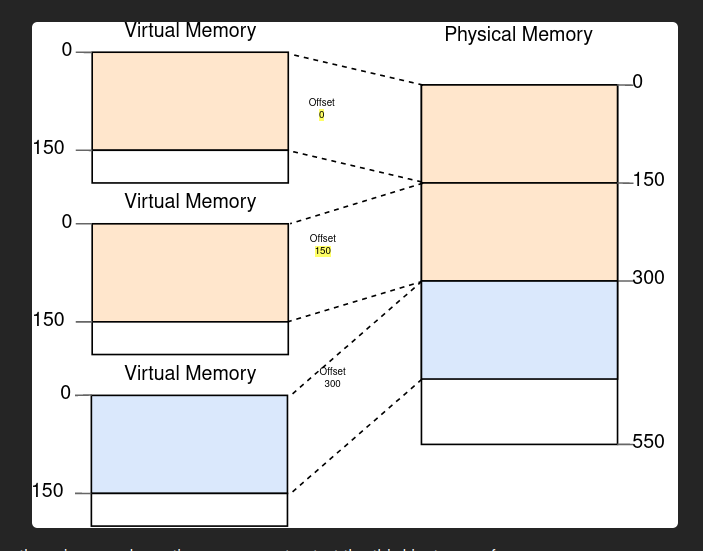
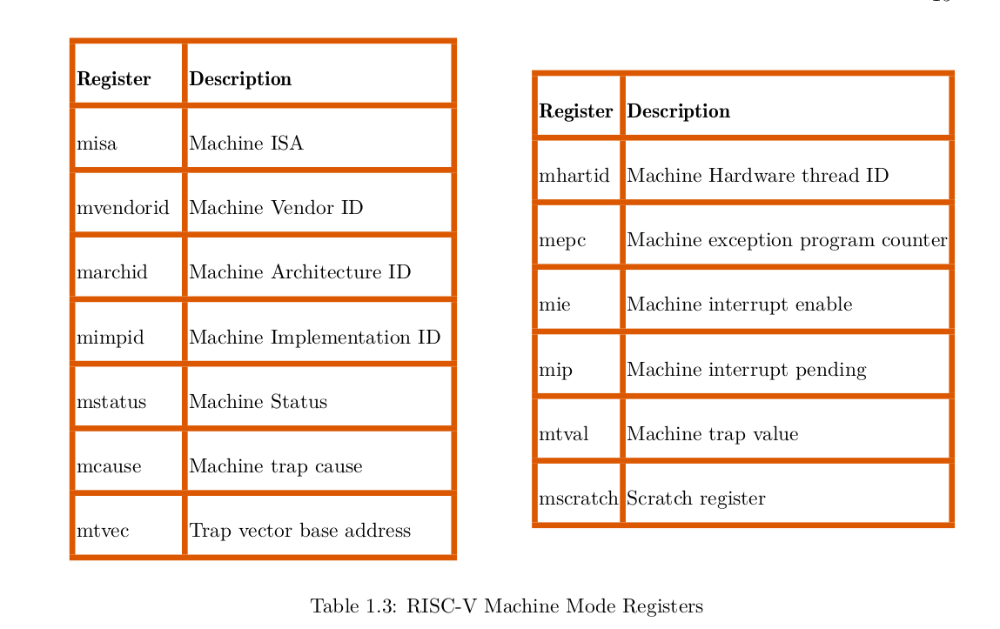

Setting Things Up
Under this chapter, we intend to answer the following 3 questions :
- What are we setting up?
- Why are we setting up those things?
- How are we seting up those things?
What are we setting up?
We are setting up a development toolchain, RISCV virtual environment and a no-std Rust file.
The development Toolchain
A toolchain is a group of software tools that typically get used together...a chain of tools...
In OS Development, the name toolchain usually refers to the combination of the compiler, linker, debugger and a bunch of programs that help in inspecting files. This toolchain gets used to convert source code into a format that can run on an execution environment.
An execution environment is a place where a software program can run. It provides the necessary resources, like the operating system and libraries, that the program needs to function. Examples of execution enviroments include: Bare metal, Browsers, Virtual Machines, Operating systems and Containers.
The toolchain in our case will consist of the following tools :
- The Rust Nightly Compiler with a riscv64gc-unknown-none-elf backend
- linker : Rust-lld
- Binutils
- Make
To our luck, we do not have to install all these elements seperately. There exists compact toolchains :
- LLVM Riscv toolchain
- The GNU Riscv Toolchain
- The Rust Toolchain
Why we need the toolchain
We will have two kinds of source code files in our project : Rust source files and RISCV-Assembly files. Both of these types of files need to be turned into object files. Afterwards, those object files need to get linked together into a single executable file.
We can go about this process of creating a single executable file in two ways:
Method 1
We can compile the Rust files seperately from the Assembly files.
Meaning that we will use a stand-alone assembler to assemble the RISCV assembly files and turn them into object code.
Later, we will then compile the RUST files into object code using a RUST_compiler.
Afterwords we can combine the resultant object files using a linker to form a single executable.
Method 2
We can embed the assembly code into the Rust source code.
That way, we only need one compilation, we will only need to compile the asm_embedded Rust files. This method seems more of 'plug and play'.
The disadvantage of this method is that we will always have to re-compile every file each time we change anything in any source file. But this is not really a problem. Modern compilers are Fast. Using method one will save up a few nano_seconds. A few nanoseconds is cheap price to pay.
Method 2 is a more user friendly method. Trading off negligible compile time over a user-friendliness in building and tweaking configurations is by far a very good choice.
Moreover, the rust compiler comes with its own inbuilt LLVM linker, rust-lld. That means that once we hit compile, we get the executable file output. One click, and all the build process runs inbuilt; from compiling rust files, to compiling assembly files, to creating a riscv-compliant executable file.
No more Makefiles nightmares, no more. This is very big news.
For this reason, we will use Method 2.
The Rust LLVM compiler and Targets
The Linker
references
Setting Up the Compiler
The compiler is the tool that will convert our source code to machine code that suits a specific machine target.
In our case, that specific machine target is "The RISCV CPU, bare metal".
The rust compiler gets installed as a toolchain, so it comes with a linker attached. For this reason, our compile button will do the following :
- Compile rust files
- Compile the embedded assembly files.
- Link all the object files and produce an executable ELF file. (linker part)
Ofcourse you an use a 3rd party linker that you prefer, you are not forced to use the attached linker. But using another linker looks like a lot of unnecessary hard work.
In the compiler world, people identify compilation targets using a standard naming convention called "Target Triple".
Initially the Target triple specified three characteristics of the machine target :
- CPU Architecture : eg x86, RISCV, ARM
- Vendor who manufactures the target : eg Apple, IBM
- The operating system running on the CPU : eg Linux, Windows, FreeBSD, None
For example you would define a target as : ARM-Apple-IoS
But the world got more complex, now we have people naming things like... i don't know... it is not 3 characteristics anymore. Sometimes you have 2 sometimes 5, 4 or 3.
So here is a 4 identifier description : - CPU architecture - Vendor - Operating System - ABI
Really, there is confusion, but hopefully you can tell what stands for what when you see a triple target with a weird number of identifiers.
Commands
To install the Stable Rust compiler, enter the following comand :
curl --proto '=https' --tlsv1.2 -sSf https://sh.rustup.rs | sh
Alternatively, you can visit this page : Rust Compiler installation Main Page
But in our project, we will use Nightly features. So you will need to install Rust Nightly :
rustup toolchain install nightly //install nightly Compiler
rustup default nightly // set nightly Compiler as the default toolchain
The Machine Target we are compiling for is "riscv64gc-unknown-none-elf" which means we are compiling for
- "riscv646gc - 64-bit-Riscv CPU that : supports all general instructions 'g' and supports compressed instructions 'c'
- unknown - means that the manufaturer of the CPU is unknown or that info is irrelevant
- none - means that the CPU has no operating system running on top of it
- elf - This component identifies the format of the output binary file that will be generated by the compiler. In this case, it specifies that the binary file will be in the ELF (Executable and Linkable Format) format, which is a common format used for executables and shared libraries on Unix-based systems.
To check out all the targets that the compiler can support by default, type the following comand :
rustup target list // list all supported targets
rustup target list --installed // list all installed supported targets
To install our riscv64gc-unknown-none-elf target, enter th following command ;
rustup target add riscv64gc-unknown-none-elf // install a supported target
If you come up with your own custom target, you can tweak the toolchain to support your target. Like for our case, we are going to come write an operating system. The toolchain does not know our OS, So people are not able to compile specifically for our OS. That topic is discussed here
We are done setting up the compiler!!!
Setting up the linker
References :
As earlier mentioned, the Rust compiler comes with an inbuilt linker. Each target comes with its own configured linker
So by default we do not need a linker script. But as for our case, we need a linker script.
Why?
Reason 1: The default compiler does not know the name of your entry_point function. Normally, the linker deals with rust crates that depend on the std libraries, and the entry_point of these crates is "_start"-->"start"-->"main" by default. In our case the linker has no clue. We need to tell it using a linker script.
Reason 2: Here is the thing, the elf file has many sections. the global_data section, the heap, the stack, the bss, the text section...
To write kernel code, you need to know the memory addresses of different elf sections.
For example....
When programming how the kernel heap will get allocated and deallocated, you will need to know the exact memory address of the heap and you will reference it in your allocating function using a pointer. Or when you want the bootloader to point to the text section of the kernel, you will need to give the bootloader the exact memory address of the start of the text section.
Point is, to write kernel code, you need to know the memory addresses of the different sections.
The linker script lets you tell the linker the exact memory addresses where you want it to place the different elf sections. This way, you can make the linker point to the same memory addresses used in your code. You can be assured that the pointers in your code are pointing to some place that you KNOW.
And the good thing is that the linker lets you label this known memory points using variables.
If you let the linker decide the memory addresses,you would have to constantly change your code to point to the addresses the linker chose for you. And the linker is not that deterministic. Today it places the heap here, tomorrow there.
There is a problem with this explanation, the linker only deals with virtual memory. Not Physical memory. It is the job of the BIOS to load the kernel in physical addresses that mao to the virtual addresses.
Reason 3: You may want to make sure the different elf sections are aligned to a certain multiple. For example, if you plan to divide the heap into 4KB blocks, you may prefer to make the heap_start memory address a multiple of 4096
End of reasons...
So how do we write a Linker Script? And to which linker are we scripting for?
Which linker are we scripting for?
The rust gives you an option to choose whichever linker you want to use.
Rust uses the LLVM Linker by default. So we are currently scripting for the LLVM Linker.
You may want to use other linkers based on your usecase. For example the LLVM linker is known for its advanced optimizations. The gold linker is optimized for elf files only, so it is lightweight and faster than the GNU linker. Meaning that you will not prefer the gold linker when creating non_elf files.
To know which linker you are currently using, you can enter the command below :
rustc --version --verbose
You get a result like this : rustc 1.70.0-nightly (f63ccaf25 2023-03-06) binary: rustc commit-hash: f63ccaf25f74151a5d8ce057904cd944074b01d2 commit-date: 2023-03-06 host: x86_64-unknown-linux-gnu release: 1.70.0-nightly LLVM version: 15.0.7
From the above result, you can see That LLVM linker is used and specifically version 15.0.7
But each target uses a particular linker flavour, what if you want more information about your current host target? What if you want information about another non_host target ? Use the following command :
rustc +nightly -Z unstable-options --target=wasm32-unknown-unknown --print target-spec-json // for the nightly compiler
OR
rustc -Z unstable-options --target=riscv64gc-unknown-none-elf --print target-spec-json //for the stable compiler
You can optionaly specify your linker choice in the build manifest file (configuration file) - cargo.toml as follows :
[target.'cfg(target_os = "linux")'.llvm]
linker = "/usr/bin/ld.gold" //this specifies the path to the gold linker
But this is hard work, we are not taking that path. The less configurations we do, the more portable our code, the less headaches we get.
How do we write a Linker Script?
Before we explain how to write the linker script, we should answer the question : "Why write the liner script?"
The linker functions include :
- Resolving External symbols
- Section Merging
- Section Placement
We are writing the linker script so that we can instruct the linker on how it will do the section merging and section placement.
Section merging is the process of combining similar elf sections from different files: For example if A.o and B.o were to be linked together to form C.o then the linker will merge the .text section in both A and B ie. A.text_section + B.text_section = C.text_section
Section placement is the process of specifying the virtual address of the different sections within the elf file. For example you may place the text section at 0x00 or 0x800... you name it. By default the linker places the different segments in adjacent to each other... but if you do this section placement process manually, you can set paddings between segments or jumble things up.
You can follow this tutorial here :
- Tell the linker which architecture you are targeting
- You define the entry address of the elf file
- Define all the memory that we have : RAM and ROM or just one of them
Here is the Linker script example :
/*
define the architecture that the linker understands.
for any RISC-V target (64-bit riscv is the name of the architectut or 32-bit).
We will further refine this by using -mabi=lp64 and -march=rv64gc
*/
OUTPUT_ARCH( "riscv" )
/*
We're setting our entry point to a symbol
called _start which is inside of boot.S. This
essentially stores the address of _start as the
"entry point", or where CPU instructions should start
executing.
In the rest of this script, we are going to place _start
right at the beginning of 0x8000_0000 because this is where
the virtual machine and many RISC-V boards will start executing.
*/
ENTRY( _start )
/*
The MEMORY section will explain that we have "ram" that contains
a section that is 'w' (writeable), 'x' (executable), and 'a' (allocatable).
We use '!' to invert 'r' (read-only) and 'i' (initialized). We don't want
our memory to be read-only, and we're stating that it is NOT initialized
at the beginning.
The ORIGIN is the memory address 0x8000_0000. If we look at the virt
spec or the specification for the RISC-V HiFive Unleashed, this is the
starting memory address for our code.
Side note: There might be other boot ROMs at different addresses, but
their job is to get to this point.
Finally LENGTH = 128M tells the linker that we have 128 megabyte of RAM.
The linker will double check this to make sure everything can fit.
The HiFive Unleashed has a lot more RAM than this, but for the virtual
machine, I went with 128M since I think that's enough RAM for now.
We can provide other pieces of memory, such as QSPI, or ROM, but we're
telling the linker script here that we have one pool of RAM.
*/
MEMORY
{
ram (wxa!ri) : ORIGIN = 0x80000000, LENGTH = 128M
}
/*
PHDRS is short for "program headers", which we specify three here:
text - CPU instructions (executable sections)
data - Global, initialized variables
bss - Global, uninitialized variables (all will be set to 0 by boot.S)
The command PT_LOAD tells the linker that these sections will be loaded
from the file into memory.
We can actually stuff all of these into a single program header, but by
splitting it up into three, we can actually use the other PT_* commands
such as PT_DYNAMIC, PT_INTERP, PT_NULL to tell the linker where to find
additional information.
However, for our purposes, every section will be loaded from the program
headers.
*/
PHDRS
{
text PT_LOAD;
data PT_LOAD;
bss PT_LOAD;
}
/*
We are now going to organize the memory based on which
section it is in. In assembly, we can change the section
with the ".section" directive. However, in C++ and Rust,
CPU instructions go into text, global constants go into
rodata, global initialized variables go into data, and
global uninitialized variables go into bss.
*/
SECTIONS
{
/*
The first part of our RAM layout will be the text section.
Since our CPU instructions are here, and our memory starts at
0x8000_0000, we need our entry point to line up here.
*/
.text : {
/* In the GNU Linker Script Language, the PROVIDE keyword instructs the linker to declare a new symbol and assign it a value
PROVIDE allows me to create a symbol called _text_start so
I know where the text section starts in the operating system.
This should not move, but it is here for convenience.
The period '.' tells the linker to set _text_start to the
CURRENT location ('.' = current memory location). This current
memory location moves as we add things.
*/
PROVIDE(_text_start = .);
/*
We are going to layout all text sections here, starting with
.text.init.
The asterisk in front of the parentheses means to match
the .text.init section of ANY object file. Otherwise, we can specify
which object file should contain the .text.init section, for example,
boot.o(.text.init) would specifically put the .text.init section of
our bootloader here.
Because we might want to change the name of our files, we'll leave it
with a *.
Inside the parentheses is the name of the section. I created my own
called .text.init to make 100% sure that the _start is put right at the
beginning. The linker will lay this out in the order it receives it:
.text.init first
all .text sections next
any .text.* sections last
.text.* means to match anything after .text. If we didn't already specify
.text.init, this would've matched here. The assembler and linker can place
things in "special" text sections, so we match any we might come across here.
*/
*(.text.init) *(.text .text.*)
/*
Again, with PROVIDE, we're providing a readable symbol called _text_end, which is
set to the memory address AFTER .text.init, .text, and .text.*'s have been added.
*/
PROVIDE(_text_end = .);
/*
The portion after the right brace is in an odd format. However, this is telling the
linker what memory portion to put it in. We labeled our RAM, ram, with the constraints
that it is writeable, allocatable, and executable. The linker will make sure with this
that we can do all of those things.
>ram - This just tells the linker script to put this entire section (.text) into the
ram region of memory. To my knowledge, the '>' does not mean "greater than". Instead,
it is a symbol to let the linker know we want to put this in ram.
AT>ram - This sets the LMA (load memory address) region to the same thing.this linker script, we're loading
everything into its physical location. We'll l LMA is the final
translation of a VMA (virtual memory address). With et the kernel copy and sort out the
virtual memory. That's why >ram and AT>ram are continually the same thing.
:text - This tells the linker script to put this into the :text program header. We've only
defined three: text, data, and bss. In this case, we're telling the linker script
to go into the text section.
*/
} >ram AT>ram :text
/*
The global pointer allows the linker to position global variables and constants into
independent positions relative to the gp (global pointer) register. The globals start
after the text sections and are only relevant to the rodata, data, and bss sections.
*/
PROVIDE(_global_pointer = .);
/*
Most compilers create a rodata (read only data) section for global constants. However,
we're going to place ours in the text section. We can actually put this in :data, but
since the .text section is read-only, we can place it there.
NOTE: This doesn't actually do anything, yet. The actual "protection" cannot be done
at link time. Instead, when we program the memory management unit (MMU), we will be
able to choose which bits (R=read, W=write, X=execute) we want each memory segment
to be able to do.
*/
.rodata : {
PROVIDE(_rodata_start = .);
*(.rodata .rodata.*)
PROVIDE(_rodata_end = .);
/*
Again, we're placing the rodata section in the memory segment "ram" and we're putting
it in the :text program header. We don't have one for rodata anyway.
*/
} >ram AT>ram :text
.data : {
/*
. = ALIGN(4096) tells the linker to align the current memory location (which is
0x8000_0000 + text section + rodata section) to 4096 bytes. This is because our paging
system's resolution is 4,096 bytes or 4 KiB.
As a result, the current memory address is rounded off to the next nearest address that has a value that is a multiple of 4096
*/
. = ALIGN(4096);
PROVIDE(_data_start = .);
/*
sdata and data are essentially the same thing. However, compilers usually use the
sdata sections for shorter, quicker loading sections. So, usually critical data
is loaded there. However, we're loading all of this in one fell swoop.
So, we're looking to put all of the following sections under the umbrella .data:
.sdata
.sdata.[anything]
.data
.data.[anything]
...in that order.
*/
*(.sdata .sdata.*) *(.data .data.*)
PROVIDE(_data_end = .);
} >ram AT>ram :data
.bss : {
PROVIDE(_bss_start = .);
*(.sbss .sbss.*) *(.bss .bss.*)
PROVIDE(_bss_end = .);
} >ram AT>ram :bss
/*
The following will be helpful when we allocate the kernel stack (_stack) and
determine where the heap begins and ends (_heap_start and _heap_start + _heap_size)/
When we do memory allocation, we can use these symbols.
We use the symbols instead of hard-coding an address because this is a floating target.
Floating target means that the address space layout keeps on changing, do it becomes hard to hardcode physical adresses.
The heap size is not known at compile time
As we add code, the heap moves farther down the memory and gets shorter.
_memory_start will be set to 0x8000_0000 here. We use ORIGIN(ram) so that it will take
whatever we set the origin of ram to. Otherwise, we'd have to change it more than once
if we ever stray away from 0x8000_0000 as our entry point.
*/
PROVIDE(_memory_start = ORIGIN(ram));
/*
Our kernel stack starts at the end of the bss segment (_bss_end). However, we're allocating
0x80000 bytes (524 KiB) to our kernel stack. This should be PLENTY of space. The reason
we add the memory is because the stack grows from higher memory to lower memory (bottom to top).
Therefore we set the stack at the very bottom of its allocated slot.
When we go to allocate from the stack, we'll subtract the number of bytes we need.
*/
PROVIDE(_stack = _bss_end + 0x80000);
PROVIDE(_memory_end = ORIGIN(ram) + LENGTH(ram));
/*
Finally, our heap starts right after the kernel stack. This heap will be used mainly
to dole out memory for user-space applications. However, in some circumstances, it will
be used for kernel memory as well.
We don't align here because we let the kernel determine how it wants to do this.
*/
PROVIDE(_heap_start = _stack);
PROVIDE(_heap_size = _memory_end - _stack);
}
Our Linker script is ready !!!
Setting up the Riscv Virtual environment
We will be using the Qemu RISC-V System emulator to emulate a RISCV-CPU microcontroller.
How to install Qemu RISCV system Emulator on Linux-Mint
At the command type
sudo apt install qemu-user
sudo apt install qemu-system-misc
Qemu Configurations
For QEMU’s RISC-V system emulation, you must specify which board model you want to emulate with the -M or --machine option; there is no default. In our case we will emulate the ‘virt’ Generic Virtual Platform as our target board model
When using the sifive_u or virt machine there are three different firmware boot options:
- -bios default - This is the default behaviour if no -bios option is included. This option will load the default OpenSBI firmware automatically. The firmware is included with the QEMU release and no user interaction is required. All a user needs to do is specify the kernel they want to boot with the -kernel option
- -bios none - QEMU will not automatically load any firmware. It is up to the user to load all the images they need.
- -bios --file - Tells QEMU to load the specified file as the firmware.
We will use the following Qemu configurations ;
// we define some variables
QEMU=qemu-system-riscv64 // we are using the Riscv Qemu emulator. qemu-system-riscv64 is a variable containing the path to the QEMU executable
MACH=virt // we will target the Virt Riscv Machine
CPU=rv64 // we will use a 64-bit CPU
CPUS=4 // The Board will have 4 CPUs... 4 HARTS
MEM=128M // The RAM memory will be 128 MBs
DRIVE=hdd.dsk // This is the path to our virtual harddrive
$(QEMU) -machine $(MACH)
-cpu $(CPU)
-smp $(CPUS) // specifies the number of CPUs to emulate
-m $(MEM) // specifies the amount of RAM in MBs
-nographic // disables graphical output, so QEMU runs in a terminal window.
-serial mon:stdio // connects the virtual machine motherboard's serial port to the host's system terminal. Ie, our Linux terminal. This enables us to use the terminal as a console to the virtual machine.
-bios none // we not depend on any firmware becaue our machine is virtual. We can just direclty load the OS image to memory.
-kernel $(OUT) // This specifies the path to the kernel image file
-drive if=none,format=raw,file=$(DRIVE),id=attic // explained below
-device virtio-blk-device,scsi=off,drive=attic // explained below
-drive if=none,format=raw,file=$(DRIVE),id=attic
'if=none' meant that Qemu should not create an interface between the hard drive and the Kernel image. An example of an interface is SATA interface.
'format=raw' means that the hard drive image should consist of raw bytes to represent data on the disk. The disk should no have extra metadata or compressions. Other possible values for the format option include:
- qcow2: This is the default format for disk images in QEMU/KVM, and it supports features like compression, snapshots, and encryption.
- mdk: This is a format used by VMware virtualization software.
- vpc: This is a format used by Microsoft Virtual PC.
- raw: This is similar to format=raw, but it includes a 512-byte header that specifies the disk geometry and other information.
The choice of disk image format depends on the specific needs of your virtualization environment. For example, if you need to support snapshots or compression, you would likely choose qcow2. If you need to import or export the image to another virtualization platform, you may need to choose a format that is compatible with that platform.
-device virtio-blk-device,scsi=off,drive=attic
'-device' is a Qemu command for attaching new devices to the motherboard of the virtual machine.
virtio-blk-device,scsi=off,drive=attic implies that we are adding a block device that adheres to VIRTIO protocol. 'scsi=off' disables the SCSI (Small Computer System Interface), this is because we intend to write a custom virtio block driver. 'drive=attic' specifies the Identifier of the new device that is being attached.
Creating a virtual hard disk
In the configurations above, it was specified that a virtual hard disk would get attached to the motherboard. It was specified that its path would be ./hdd.dsk
To create this hard disk we use a tool called Losetup. This tool converts a normal text file into a virtual block hard drive.
Losetup creates Loop devices. A loop device is a file that emulates a block device.
Losetup comes pre-installed in any standard linux distribution. To check its documentation, type this in the terminal:
man losetup
To create a virtual disk within your development working dierctory, write the following command in your terminal:
dd if=/dev/zero of=hdd.dsk count=32 bs=1M
where :
- 'if=/dev/zero: This option specifies the input file to use for the dd command. In this case, the input file is /dev/zero, which is a special file that produces an endless stream of zeroes when read.
- of=hdd.dsk: This option specifies the output file to create for the dd command. In this case, the output file is called hdd.dsk.
- count=32: This option specifies the number of blocks to copy from the input file to the output file. In this case, 32 blocks of data will be copied.
- bs=1M: This option specifies the block size to use for the dd command. In this case, the block size is 1 megabyte (1M).
An alternative set of commands would be :
fallocate --length 32M hdd.dsk // create a new file called hdd.dsk and allocate to it 32 MB
sudo losetup /dev/loop0 hdd.dsk // convert hdd.dsk into a virtual hard drive whose mount point is at /dev/loop0
Setting up the Build automation tool
Our build tool will be cargo.
We will not use third party build tools like Makefiles.
It is better to not use 3rd parties.
So create a .cargo folder withing the repo.
Create a config.toml inside the folder
So you have : project/.cargo/config.toml. Inside this file, paste the following configurations :
[build]
target = "riscv64gc-unknown-none-elf"
rustflags = ['-Clink-arg=-Tsrc/lds/virt.lds']
[target.riscv64gc-unknown-none-elf]
runner = "qemu-system-riscv64 -machine virt -cpu rv64 -smp 4 -m 128M -drive if=none,format=raw,file=hdd.dsk,id=attic -device virtio-blk-device,scsi=off,drive=attic -serial mon:stdio -nographic -bios none -kernel "
The [build] section has configs that affect the compilation process. We tell the compiler our target platform. And tell the linker the path to the linker script.
The [target.riscv64gc-unknown-none-elf] section has the configs that will be considered only if we are compiling for the riscv64gc-unknown-none-elf target.
THe "runner" specifies the cmd command that will be executed when we call "Cargo run". There is a space after -kernel. This is because cargo will automatically specify the executable, whose name is configured through Cargo.toml.
writing_a_bare_metal_rust_executable
references :
- https://os.phil-opp.com/minimal-rust-kernel/#a-minimal-kernel
1. NO_STD
A bare metal executable is a rust program that can run on a piece of hardware without needing an operating system.
Since we are building our own operating system, we need to write it as a program that is not dependent on another operating system.
Normal Rust programs depend on the rust standard library. The Rust standard library itself contains functions that call OS-specific system calls. So we cannot use the Rust std library.
We use the core Rust Library which is not OS-specific.
we add the attribute #![no_std]
2. NO_MAIN
Libc is a common C standard library that has been in use for a long time. It has been implemented for very many operating systems.
Rust is a new language. It is very hard to implement the rust_std for all operating systems. To save on labour and allow compatibility, Rust creators decided to make the Rust Library to use libC functions instead of recreating the functions in pure Rust. Though there are some parts of the Rust std library that do not depend on libc.
Now that it is clear that rust_std depends on libc, when a rust bin is executed, the following events happen.
- The executable program is stored in memory
- The CPU points to the first instruction of the executable (the etry point). In this case, the entry point is the C runtime.
- The C runtime sets up its environment in preparation for the libc functions that will get called by the rust_std functions
- After the C runtime has set up the execution environment for the libc functions, it points to the entry point of the Rust Runtime.
- The entry point of the Rust Runtime is marked with a language item called "start" ie [start]
- So the Rust runtime creates an executable environment for executing the Rust functions.
- After the Rust runtime has finished setting up things, it looks for the "main" function.
- Main starts executing
Our bare metal program does not depend on the C runtime. So this sequence of events is quite irrelevant to us.
What we will do is that we will inform the compiler that we wont follow this sequence by #![no_main] and then declare our own entry point.
To declare our own entry point, we will export a function out of the crate... like so :
#![allow(unused)] fn main() { #[no_mangle] pub extern "C" fn _start() }
But that is not enough, we need to tell the linker the name of our entry_point function. We do this by writing a linker script.
The linker will place the code as the first part of the .text section and update the elf header sections to reflect this info.
...
OUTPUT_ARCH( "riscv" )
ENTRY( _start )
MEMORY
{
ram : ORIGIN = 0x80000000, LENGTH = 128M
}
3. Panic Handler
Rust panics when a violatio happens. Rust requires you to define a function that will always get called after a panic happens.
That function is tagged by the #[panic_handler] attribute
The panic_handler function never returns anything, it diverges
#![allow(unused)] fn main() { use core::panic::PanicInfo; #[panic_handler] fn my_custom_function( panic_info: &PanicInfo)-> !{ println!("message : {}", panic_info.message()) println!("location : {}", panic_info.location()) } }
4. The eh_personality (aka error_handling personality)
Rust requires you to define a function that will always get called when it wants to unwind and free a stack.
This function is tagged with #[eh_personality] attribute.
When a panic happens, the program stops (theoretically). The program can decide to free the stack or just abort and let the underlying OS clear the stack.
The thing is, to clear the stack, you have to unwind it. To unwind the stack, you have to use some hard functions...Functions that depend on some OS functionalities. This is a chicken-egg problem.
So we resort to aborting.
To specify this behaviour, you can tweak the cargo file as follows :
[profile.release]
panic = "abort"
[profile.dev]
panic = "abort"
By default the settings are usually :
[profile.release]
panic = "unwind"
[profile.dev]
panic = "unwind"
Now, the #[eh_personality] tag is a tag that is pegged to the function that gets called when a rust program wants to unwind its stack. eg
#![allow(unused)] fn main() { #[eh_personality] fn custom_unwind(){ // do some unwinding statements ... MAgiC! } }
BUT since we have specified that our program will always abort... AND that it will never call the unwind function, we are no longer required to define the unwinding function
5. Compile to a bare_metal target
[undone]
The Bootloader
For a long time I thought the way the CPU worked was some dark magic.
The CPU is an indiscriminate machine, it is just a bunch of circuits that repeatedly do the operations below from the moment the CPU is powered on :
- It reads the memory address storeed in the the program counter register. Let us call this memory address Address_X.
- Fetches the instruction pointed to by Address_X.
- Executes the instruction using one or more of its circuits/gates
- repeats infinitely
It is up to us to occasionally make the program counter to point to the instrutions we want executed.
To control this machine, we have to change the value in its control status registers.
When you look at it from this perspective, it no longer seems like dark magic.
It is a machine that can be controlled by modifying the value in relevant registers.
Each CPU comes with its own assembly language.
We will be using RISCV assembly to write the assembly code for the bootloader.
The definition of what a bootloader is supposed to do varies from OS to OS. For example, some bootloaders can perform hardware power_on tests while others just leave that work to the CPU firmware.
A typical bootloader essentially does the following operations:
- Find the memory address of the Kernel program by searching through the external memory devices that have been plugged into the Motherboard.
- Loads the Kernel image onto the RAM. Note that it only loads the required sections, it might not load the entire image.
- Prepare the values found in the CPU registers to suit the execution of the kernel. For example making the Stack pointer to point to the stack of the kernel.
- Transfering control to the kernel. This is done by making the program counter point to the entry_point of the kernel
The Bootloader in this chapter is much simpler. It does not have to look for the kernel image in a secondary memory like a hard-disk, instead, the Kernel and the bootloader are one program. The Basic Bootloader in this case is a software program that : - Finds the memory location of the kernel's entry_point (the first kernel instruction). This instruction address is still part of the bootloader. Remember that (Kernel + bootloader) == 1 united program - Loads the kernel image to memory - Transfers control to the kernel
The Bootloader has many definitions depending on the additional functionalities it has :
- Dealing with the convertion of CPI from real mode to protected mode and finally to 64-bit mode
- Having a user interface that gives its users the option to choose among multiple kernel images
- Having the bootloader code implemented in seperate parts.
- Having the bootloader do some tasks that were originally meant for the firmware eg. Power_on_self tests
We do not care about the above functionalities... for now.
The Boot process
References :
When the machine is powered on :
The Firmware
The CPU begins its fetch-execute cycle. Typically, the PC register of the CPU points to a memory address in the ROM.
The ROM contains hardcoded firmware code. In x86 this firmware can be BIOS or UEFI.
The firmware code performs Power-on-tests on all pluged devices.
The firmware code initializes the hardware : for example it maps the dedicated I/O MMIO memory and enumerates the RAM.
After setting up the execution environment, it scans the plugged in secondary memory devices... Depending on the partitioning scheme used in those devices, it looks for valid bootloaders. At this point some firmware give the user a chance to choose which bootloader they would prefer among the ones the firmware has discovered
The Bootloader
After the Firmware has set up the execution environment, It makes the CPU pointer ton point at the entr point of the boot_code.
In our case, the bootloader will do the following functions :
- Pick only one CPU to complete the execution of the bootloader code. This is because at the beginning we do not want any kind of paralellism. Moreover, the bootcode is a simple code that can easily be done by one CPU, adding parallelism increases unnecessary complexity. It means we will have to do interprocessor communications at the start. That is just unnecessary overengineering to save a nano_secog of a nanosecond of a nanosecond
- Clear the uninitialized memory sections : the heap and BSS section.
- Transfer control to the Kernel code found in memory
Bootloader pseudo code
algorithm inputs : No inputs
algorithm outputs : No outputs, it just calls another function that never returns.
-
set the necessary assembler directives
- notify the assembler that the code should not use compressed code
- define the memory sections - .text.init section : the .text.init section is different from other .text sections because the .text.init section contains initialization code that gets executed before the main function and other init sections. (.text.init) section must be executed before all other sections - .data section
-
Choose HART 0 as the main and only core that should continue to execute the boot_code
- if the Hart ID is not 0, subject that core to an endless sleep
-
Confirm that the HART is in machine mode
-
Clear the BSS section, we need no surprises.
-
Set up the regiters of the CPU to be ready to execute the kernel code
-
Call mret
-
Set up some general registers
- fetch the global pointer so that we ge to access the data sections more confidently, update the global_pointer register
- update the stack pointer to point to the bottom of the kernel stack
- update the return address to point to an Endless sleep function... the kernel should not return in the first place
-
Set up the control registers
- the mstatus register
- set previous MPP to Machine mode, this is because we intend to run the kernel in Machine mode for some time before moving to S-Mode. When we call mret instruction, the CPU will be run in the mode specified in MPP
- set MIE mstatus bit to 1, this enables the CPU to catch interrupts
- set MPIE mstatis bit to 1, this enables the kernel to be able to receive interrupts once we transfer cotrol to it using mret.
- The machine_interrupt_enable register
- enable all the interrupts (Software, Timer and external)
- the machine_trap_vector
- Let the mtvec register point to a trap vector point... defined globally in assembly language
- the MEPC should point to the kmain function
- the mstatus register
-
- Setup the CPU status to suit the jump to kernel code :
- set the medeleg register : we will not delegate any exception, we will handle all exceptions in Machine mode
- set the mideleg register : we will not delegate any interrupt to lower levels, we will handle all interrupts in Machine mode
- set the mstatus to allow software interrupts and external interrupts
- Set the MIE register to handle only
- set the stack pointer to point at the bottom of the stack
- set the mstatus register :
- allow interrups to be allowed in both machine mode and supervisor mode by setting the MPP(Machine Previous Protection) to the value 3
- set the MEPC ; machine exception program Counter to point to the kernel entry point.
- Set the MTVEC : Machine Trao Vector to point to the Exception handling code
- Call MRET
Why are we calling WFI?
We are calling the WFI instruction to put all the other CPU cores to sleep. Our OS only uses one HART (Cpu).
The WFI (Wait for interrupt instruction) - This RISCV instruction powers off the CPU and only leaves a small circiut running. THis circuit continuously checks if an interrupt signal has been sent to the powered off CPU. If an interrupt is detected, the CPU gets powered on. It is kind of a 'sleep' instruction. It can be used to save power when the CPU is idle. We are calling the WFI instruction to put all the other CPU cores to sleep. Our OS only uses one HART (Cpu).
Why are we disabling Riscv Compressed instruction?
- So that we gain simplicity in debugging.
In RISCV, the assembler usually encodes each assembly instruction into 32 bits. But this is not always the case, you can instruct the assembler to use compressed instructions. Compressed instructions are only 16 bits long. Not all assembly instructions get encoded to 16 bits... just a select few. This ensures memory efficient code.
However, it makes it hard to debug code because the not ALL instructions are 32 bits as before.
we achieve this by using either of the two assembly directives :
.option norvc // No RiscV compressed instructions
.option rvc // Yes to RiscV compressed instructions
Why do we need to load the global pointer when writing the Bootloader? So that the bootloader code gets to use the correct global data associated to the Operating system image.
The global pointer references the base address of global data in the memory map.
To access any global data, you have to know the base address + offset.
The bootloader typically gets executed as a seperate program from the operating system. So the bootloader may have a different memory map from the memory map of the kernel.
Considering that the bootloader needs to use the operating system's global data, we make the global pointer that the bootloader references to be the gp found in the memory map of the kernel.
Now this operation is delicate; we are accessing another memory map to access global data that may or may not be the same as the data we are trying to change. We need to make this operation explicit, no surprises. So we temporarily kill all code optimizations when doing this operation by using the directives :
.option push // save previous assembly directives... because in the next few lines we may use contradicting directives
.option norelax // no optimization
.option pop // restore previous assembly directives
Designs
Initial Program Flow diagram
graph TD
A[Qemu ELF loader] -->|loads Elf file containing kernel loader| B[kernel Loader]
B --> |prepares the CPU registers for kernel, calls kernel entry point| C[Kernel Runs]
Kernel loader sequence of events
graph TD
A[set assembler directives] --> B[Look for HART 0] ;
B --> C{Is the Core HART 0?} ;
C -->|Yes| D[Clear Kernels BSS section];
C -->|No| E[Put HART to sleep];
D --> F[initialize CPU registers for kernel];
F --> G[summon kmain];
Qemu --> Boot --> kinit --> kmain
Kinit messes around with physical memory in Machine mode while kmain messes with virtual memory in Supervisor mode
Kinit gets us to kmain.
under kinit we do not accept any interrupts : This allows us to setup our machine without any disturbance from other cores or the PLIC
- we make mepc point to kinit
- we make the return address of kinit point to the asm funtion that will transition us to kmain ; kinit returns ()
- we call mret and jump into kinit rust
And what are we doing under kinit? here
- when kinit returns, we are on the function to transition to kmain
- we set the mstatus register
- set MPP to 01 (supervisor)
- set Previous machine interrupt-enable bit is 1 (MPIE=1 [Enabled])
- wet Previous interrupt-enable bit is 1 (SPIE=1 [Enabled]).
- setnputs : No inpu mtvec to mtrap_vector
- set mepc to kmain
- set which specific interrupts are allowed by setting the MIE register
- 1 << 1 : Supervisor software interrupt enable (SSIE=1 [Enabled])
- 1 << 5 : Supervisor timer interrupt enable (STIE=1 [Enabled])
- 1 << 9 : Supervisor external interrupt enable (SEIE=1 [Enabled])
- 0xaaa = MEIP/SEIP and MTIP/STIP and MSIP/SSIP
- set return register to point to Shutdown. If main returns () ... shutdown
kinit
Before kinit make sure that all linker variables are accessible in Rust Make kinit global for the linker using "extern"
What does kinit do?
- initialize the UART system
- declare a single instance of the UART object
- initialize the UART instance (configure the UART registers for communication)
- Initialize the page allocator system
- clear the page destriptors in the heap
- define ALLOC_Start, where the Pages Start
- Initialize byte allocation system (Borrow this)
- define the number of kernel pages (512 pages)
- create a kernel heap by allocating those pages, and zeroing them out
- set the first AllocStruct
- Allocate Space for the Root Page Table immediately after the kernel Heap
- Set up the values of the paging
- Get position of the root table that was created during kmem::init()
- Identity Map all the known kernel addresses specified in the linker script
- Map the Kernel Heap
- Map the UART
- Map the PLIC
- Map the CLINT
- Define the SATP value
- Define the address of the TRAP_FRAME for our current HART. Each HART gets one TRAP_FRAME (it is global)
- Store the address of the TRAP_FRAME in the mscratch register
- Store the address of the TRAP_FRAME in the sscratch register
- Map the TRAP_FRAME address for this HART
- initialize the page memory allocation system
Setting Up Communications
References :
- Chapter 3 : How to write Drivers for Peripherals
- Communications : the UART Driver
- The UART specifications
- The UART Datasheet
Our OS will communicate with peripherals. Peripherals are external devices...external cirtuits... things that are not originally part of the Motherboard.
In this chapter, the peripherals that we will be attaching will be the console output and the keyboard for input.
The connection between the microcontroller and both of these peripherals is a serial connection.
Why a serial connection?
Inside the motherboard and the peripherals, there are parallel connections connecting the internal components.
Parallel connections are wide. manufacturing wide cables is expensive. So people resorted to just manufacturing single line cables.
And then they created algorithms to convert parallel bits to a stream of contiguous bits ... and vice versa.
The UART Driver
The UART device is a hardware device that stands in between a parallel connection and a serial connection. It converts a serial signal to a parallel signal and vice-versa.
It stands between the motherboard and the peripheral devices that use serial connections ; eg mouse, keyboard and console output.
Why are we not using the USB driver?
The USB also does the conversion of parallel signals to serial signals. The USB has higher transfer speeds than the UART connection. The USB can do 20 Gbps while the UART does around 1 Mbps.
However, we used the UART because of its simplicity in configuration : this is a learning project, we cannot afford the complex nature of trying to configure the USB.
In the case of Qemu, the console output and the keyboard use the same UART device. This is because the transmit_out channel is connected to the console output AND the receive channel is connected to the keyboard.


Theory of parallel to serial conversion
Before we discuss the actual registers, let's discuss the theory of parallel-to-serial conversion.
- On the Sender's side
The serializer gets configured by the host system. The baud rate is set, the size of a data frame is set and interrupt handling is configured.
The serializer hardware receives parallel input... let's say 8 bits.
The serializer sequentially pushes each bit of that parallel input into a shift register. Whether it begins from the Most Significant bit or the LSB is up to the specifications of the communication protocol being used.
The serializer packages the shift register bits as a data frame, with a startbit, a stop-bit and maybe a parity bit for error checking.
The serializer sequentially pushes the bits out of the shift register and into the transmission channel.
The way it pushes the bits into the line can be either FIFO or FILO.
The rate at which it pushes the bits into the transmission line is called the Baud Rate. It is measured in bits per second. In this case, baud rate is the same as bit rate because each bit change equals a bit transmission.
2 On the receiver's end
It is assumed that the receiver has the same configurations as the sender: same baud rate, same data_frame size.
The deserializer receives the serial data frame.
checks the parity bit for error detection
The UART Registers
The UART emulated in Qemu is the NS16550A UART chipset. We control the UART using MMIO programming. The Base address of the UARTs begins at 0x1000_0000 and each UART device is given an offset of 0x100 (256 bytes)
The UART has 8 physical registers that can be interpreted as 12 logical registers... this is because some of the physical registers can be used differently under different contexts. For example Register 000 can be used as an input register when the UART is idle, but when the UART is not idle, the same register will be treated as an output register.
Below is a diagramatic representation of the UART registers :

Notice that there are registers that share the same physical space. For exapmple.... see below

From the image, there are only 8 bytes of spaces used to represent all the 12 registers. This is becuse there are registers that share byte space :
- The Receive Buffer Register(RBR), The Transmitter Holding Register(THR) and the Divisor Latch Least Significant Byte (DLL) can occupy the same byte space.
- The interrupt Status Register and the FIFO control Register occupy the same byte space.
- The Line Status Register and the Prescaler Division can occupy the same byte space.
- The Interrupt Enable Register and the Divisor Latch Most significant Byte share the same byte space.
All registers are 8 bits long. We will not discuss the DLL, DLM and PSD registers.
1. The Line Control Register
The line control Register is used to configure the UART communications.
Using this register, you can set the format of the data frames being transported.
Using this register, you can set the size of the data frame.
Using this register, you can determine whether we will be able to set a custom baud rate or use the default baud rate.
- Bits [1:0] are used to set the word_length ie. the length of the Data frame. The legal values are :

- Bit [2] is used to set the number of stop bits to be included in the transmission frame : 0==one stop_bit and 1 == two stop bits
- Bits [5-3] are used to set the parity type of the data frame to be transmitted
- Bit[7] is the DLAB bit. Setting this to 1 means that we get to acces the DLL, DLM and PSD registers to set the baud rate
2. The Line Status Register
This register contains the info about the communicatiuon line. If any error occur, they are also reflected in this register:
undone (dexcribe the rest of the registers)
Regit
Initializing the Communication between the 2 devices.
Initializing the communications between the 2 devices means that we configure the UART protocol.
We need to define :
- The maximum amount of bits that can be contained in the buffer at a time. The 2 devices need to agree on this so that data does not get lost if one of the devices buffer is too small.
- Set the order of reading and writing to the communication buffer. In our case, we set the order to FIFO (First in First Out).
- Define how the CPU and the UART will communicate with each other when the buffer is ready to be read or written to. You can choose between 2 methods ; Poll driven communication od Interrupt driven communication.
In Interrupt driven communication, the UART device sends interrupt signals to the CPU whenever the read buffer is full. And consequently, the CPU invokes the appropriate interrupt handler. You have the option to involve the PLIC or not.
In the Poll driven communication, the CPU will occasionally check if the buffer is ready to be read or written to. - Set the data transfer speed between the 2 devices - the baud rate. This is to avoid data loss.
But here is a relief : If we set the DLAB (Divisor Latch access bit) to zero, then :
- The Prescaler Division Register becomes inaccessible. Meaning that the Line status register does not have to share the byte space.
- The DLL register becomes inaccessible, meaning the RHR and THR don't have to share the byte space.
- The DLM register becomes inaccessible, meaning that the Interrupt Enable Register does not have to share the byte space.
That is the path we will take, we will set the DLAB bit to zero so that we access the registers in a more simple manner. The reason that makes it okay to disregard setting the DLL, DLM and PDS registers is because we do not need them. These three registers are used to set the Baud Rate of the UART device.
We are in Qemu, this is a virtual space. This means that we are not dealing with real physical devices. Because of this fact, it is not necessary to set the Baud Rate. The machine emulates the maximum baud rate available.
The Baud Rate formula is as follows :
Divisor = UART_device_clock_frequency / ( Baud_rate x Prescaler_Division_value)
where :
- Divisor is a 16 bit value whose first 8 bits get stored in the DLM register and last 8 bits get stored in the DLL register. If we do not set the DLL and DLM bit, the Divisor value is assumed to be 65,536 (2^16).
- UART_device_clock_frequency is the clock speed of the particular UART implementation. eg 16MHz
- The Baud_rate is the rate at which data transfers, this is what we are trying to calulate.
- The Prescaler_Division_value is found in the Prescaler_Division register. It is represented using 4 bits, its value ranges from 1 to 16. If we do not set the prescaler division value, 16 is assumed to be the default. We are okay with 16
We will use this registers to :
- Initialize the communication between the 2 devices
- fetch and write data to the communication buffers
Pseudocode for initializing the UART communication
input : the UART base address (hopefully from a struct abstract) output : No_output
- set the word length to 8 bits
- access the lCR register
- set bits [1:0] to [1:1]
- Enable FIFO reads and writes
- access the FIcaler Division RegisFO control Register
- turn the FIFO enable bit to 1
- Set the interrupt capability
- Access the Interupt enable Register
- enable the data ready interrupt [set bit 0 to the value 1]
- enable the transmitter empty interrupt [set bit 1 to the value 1]
- Set the Baud rate
- since we are setting the BAUD rate at 2400, the divisor value is 592
- use bitmasking to separate the most sigificant bytes from the least significant bytes
- Set the DLAB bit to 1 in order to allow setting the Baud rate
- store the two seperate values in the DLL and DLM respectively
Reading from the UART
When the buffer is full, the UART sends an interrupt to the PLIC. The PLIC calls the interrupt handler. The Interrupt handler invokes a UART read (This function that we are writing now). The read input can be directly displayed in the console output or stored in a buffer
Pseudocode
input : the UART base address (hopefully from a struct abstract) output : Option<None, BYTE>
- Access the Line Status Register
- Access the data_ready status bit.
- If the data Bit is 1, continue to step 5
- If the data bit is 0, return None
- Read the RHR buffer and return the read byte.
When the interrupt handler calles read function, it stores the inputs in a curcular buffer. From this buffer you can choose hich inputs to display to the console or process
Control flow diagram of the UART read
graph TD
A[ Access the Line Status Register] --> B[Access the data_ready status bit];
B --> C{Is the Data Ready?} ;
C --> |Yes| D[Read the RHR buffer];
D --> E[return the read byte];
C --> |No| E[return None type]
Writing the UART
When the buffer is empty, the UART sends an interrupt to the PLIC. The PLIC calls the interrupt handler. The Interrupt handler checks if the UART_console_write_buffer is empty. If the Buffer is empty, the Interrupt handler does not call the UART_write function. If the UART_console_write_buffer is not empty, the interrupt handler calls the console_output_feeder.
Pseudocode
input : the UART base address (hopefully from a struct abstract), the byte to be written output : Result<Ok, Err>
- Access the Line Status Register
- Confirm that the THR is empty
- If the data Bit is 1, continue to step 5
- If the data bit is 0, return Err
- Write to the THR buffer and return an OK().
When the interrupt handler calles read function, it stores the inputs in a curcular buffer. From this buffer you can choose hich inputs to display to the console or process
Control flow diagram of the UART read
graph TD
A[ Access the Line Status Register] --> B[Access the THR_Empty status bit];
B --> C{Is the THR Empty?} ;
C --> |Yes| D[Write to the THR buffer];
D --> E[return an OK];
C --> |No| F[return Err]
UART Buffer management
Data coming from the keyboard can either be displayed to the console or stored for further processing. For this reason we will have a ring buffer for storing read input. Whatever you choose to do with this data is up to you
With this input buffer, we can implement scanf. We can also confortably implement a function that continuously reacts keyboard input. (eg, continuous console display)
Data coming from the programs might also need to be displayed . That is why we have the UART_console_write_buffer. Strings from the user or kernel programs get stored in this queue. From there, when we receive a THR_empty interrupt,
Driver exposed API
- Clear input buffer (everyone)
- Read input buffer (everyone)
- Read line (Everyone)
- Read word (Everyone)
- Write word (Everyone)
- Write line (Everyone)
- Determine interrupt type (User PLIC)
Interaction with the PLIC
The PLIC receives interrupts from the UART whenever the Data Buffer is full_and_ready_to_be_read. When the PLIC receives this interrupt, it does not really know what the interrupt is all about. So it needs to read in the UART Line Status Register and determine which event caused the interrupt. This situation is valid only when the UART is set to send interrupts because of many reasons.
However in our case, the PLIC sends interrupts only when Data Buffer is full_and_ready_to_be_read, so we do not need a function to determine the type of interrupt. the type of interrupt is always "data Ready"
Principles when abstracting hardware
- The struct used to abstract the hardware MMIO map should be compiled in a predictable manner (C ABI)
- We should always use volatile reads and writes to the MMIO registers
- In software, we should be able to share any number of read-only accesses to these peripherals
- If some software should have read-write access to a peripheral, it should hold the only reference to that peripheral
Why use the C ABI?
The C ABI is used for the sake of compatibility and predictability. For example, the Rust struct fields can get re-ordered while the C structs field order is static. For example, if a struct field has 2 integer fields and 1 boolean, normally the field order would be as declared. But if the boolean is accessed more frequently, it might be re-odered and placed at the beginning to improve cache locality.
In this case, we need the struct order as static.
Why use volatile reads and writes?
When you write to the same memory address for a couple of times, the compiler might optimize the code and just consider the last write value. Meaning you will lose a couple of writes due to compiler optimization.
When you read from the same memory a couple of times, the compiler might optimize the reads using a cache; Volatile read the image, there are onl
Why we won't use global mutable variables to abstract our UART driver
In Rust, global mutable variables are considered unsafe. You have to enclose any interactions with them using the unsafe block.
They are unsafe because :
- They can lead to data races when multiple threads have r/w access to it. -->
- They can lead to memory unsafety.
- If the global variable is uninitialized and a read operation is executed, it may cause a null dereferencing problem. There is a chance of this happening because the thread that was taking care of initialization did not execute before the thread that read the global variable.
- If the global variable is not initialized in a timely manner, a write to the location may cause a bufferoverflow.
- It is hard to organize code that is full of global mutable variables. It is hard to debug such a program.
So ... moral lesson : Try your best to never use global mutable variables.
We can implement the 3rd and 4th Principles using the Singleton structure. Our singleton strategy is not thread safe (undone)
I2C
- packet-wise, has start and stop bits. Not streaming
SPI
- continuous, not packet-wise. data does not have start and stop bits
- data can be transferred without interruption. Any number of bits can be sent or received in a continuous stream.... NOT packetwise
UART
- packet-wise, has start and stop bits. Not streaming
communications_theory
[references]
- UART communication protocol - just read this
- https://www.analog.com/en/analog-dialogue/articles/uart-a-hardware-communication-protocol.html
[undone] : outline the process
You need to configure the UART devices on both the receiver and sender.
Configuration :
- Set the baudrate : communicating devices need to be within 10% range of difference
- Are we going to include the parity bit in our transmissions?
- How are the Interrupts handled?
Configuring the Baud rate:
The Baud Rate formula is as follows :
Divisor = UART_device_clock_frequency / ( Baud_rate x Prescaler_Division_value)
where :
- Divisor is a 16 bit value whose first 8 bits get stored in the DLM register and last 8 bits get stored in the DLL register. If we do not set the DLL and DLM bit, the Divisor value is assumed to be 65,536 (2^16).
- UART_device_clock_frequency is the clock speed of the particular UART implementation. eg 16MHz
- The Baud_rate is the rate at which data transfers, this is what we are trying to calulate.
- The Prescaler_Division_value is found in the Prescaler_Division register. It is represented using 4 bits, its value ranges from 1 to 16. If we do not set the prescaler division value, 16 is assumed to be the default. We are okay with 16
We will use this registers to :
- Initialize the communication between the 2 devices
- fetch and write data to the communication buffers
Now, there is a conflict, The DLL bit occupies the same space that the THR and RHR occupy.
This problem is solved by doing the baud rate configuration once. After that the space is left for RHR and THR.
That space is only usable for the DLL only if the DLAB bit is set to one. When the DLAB bit is set to 1, the UART realized that it is configuration time and dedicates the register to store the DLL bit before it does the bitrate calculation.
So the DLAB bit acts as a switch : When the DLAB bit = 1 then...
- register 000 stores the DLL value
- register 000 stores the DLM value
- register 101 stores the Prescaler value
Once the baud rate configuration is complete, the DLAB bit is set to 0, and the register space that was used for DLL and DLM becomes available for accessing the THR and RHR, respectively. The UART controller switches back to data transmission/reception mode.
Parity Bit
No we do not care about this. It is important, but we are in a virtual environment, why would bits get lost in transmission? We are in a perfect world.
Interrupt handling
THe UART is conected to the CPU via the PLIC. The UART send out 5 kinds of interrupts to the CPU.
-
Receiver Data Available Interrupt (RDA): This interrupt is triggered when data is received and available in the receiver buffer (RBR/RHR) to be read by the CPU.
-
Transmitter Holding Register Empty Interrupt (THRE): This interrupt is triggered when the transmitter buffer (THR) is empty and ready to accept new data to be transmitted.
-
Receiver Line Status Interrupt (RLS): This interrupt is triggered when a line status error occurs during data reception, such as framing errors, parity errors, or overrun errors.
-
Modem Status Interrupt (MS): This interrupt is triggered when there are changes in the modem status signals, such as changes in the CTS (Clear To Send) or DSR (Data Set Ready) signals.
-
Receiver Time-Out Interrupt (RTO): This interrupt is triggered when the receiver is idle for a specified duration, indicating the end of a data transmission.
In our case, We only care about the first 2 interrupts.
To enable the UART device to be able to send interrupts to the CPU, we have to tweak the bits of the Interrupt enable register.
- FIFO buffer : where you store bytes if you have not processes the current byte in buffer
- The UART 16655 has a max 16 byte FIFO buffer, but you can set it to one byte. This is called FIFO depth
- We do not currently care about Modem conreol signals
- I do not understand this DMA operation? Do we need to enable it?
- No clock, fully asynchronous
Registers
theory_on_paging
references :
- https://os.phil-opp.com/paging-introduction/
Supervisor mode in riscv introduces a paging system that pages the physical memory.
But before we discuss the paging system that is specific to RISCV, we need to understand paging theory by itself.
Virtual addresses and Phsical addresses
Before we discuss paging, let's first find out what virtual addresses and physical addresses are.
A Physical memory address is the constant and full address of a physical space in memory. It is the address pf a physical space in memory. Each physical memory address is unique. And each physical address represents a single unique physical space.
A virtual memory address is like a variable that contains the Physical memory address as its value. Just like in programming, variables are unique only in a certain scope. Different variables can contain the same value... the same way different virtual addresses can represent the same physical memory addresses.
A virtual address can be translated to its equivalent physical address.
We need virtual addresses so that we can manipulate memory just like how we manipulate variables.
Virtual Addresses are a way of abstracting the physical memory.
segmentation
If the CPU has 16-bit registers, it means that by default, it can only access 2^16 physical memory addresses. That means that ideally, if each physical address in your computer represents one byte then you can only use 16 KiB of RAM.
If the CPU has 32-bit registers, it means that by default, it can only access 2^32 physical memory addresses. That means that ideally, if each physical address in your computer represents one byte then you can only use 4 GiB of the RAM.
If the CPU has 64-bit registers, it means that by default, it can only reference 2^64 physical memory addresses. That means that ideally, if each physical address in your computer represents one byte then you can only use 16777216 TB of RAM.
Now the problem is that the amount of RAM usable by the CPU is determined by the register size of the CPU. This is not good.
So people came up with something called segmentation.
Under segmentation...
- You insert RAM of any size to your computer, do not give a hoot about the register size of your CPU.
- Segment the whole RAM into segments, The number of segments should be equal to the number of addresses that your CPU can ideally access. For example if I am using a 16-bit CPU, I would divide the RAM into 2^16 segments.
- Hardwire the CPU to only access the start address of each segment by default. Now the inner addresses contained in a segment have become inaccessible by the CPU.
- Come up with new registers that store the offset if an address in relation to a segment start.
- Develop a special hardwired circuit that takes in the segement_start address AND the offset_value and directly reads from the inner sections of the segments
- MAGIC!! now you can access all RAM's physical memory addresses.

Now the work of the CPU was to pass the Offset and memory address to the segmentation circuit... and in turn it will get a value from memory.
You can say that (memory + offset )== virtual address. Remember that a virtual addres is an address that can be translated to a physical address.
Segmentation becomes weak
Segmentation was doing fine for some time.
BUT segmentation allowed you to use contiguous virtual addresses to reference contiguous physical memory addresses.
You could not use contiguous virtual addresses to reference NON-contiguous physical memory addresses. This means that if you had to allocate memory, you had to find contiguous physical memory addresses... if there were only holes in memory, you HAD TO DEFRAGMENT the entire physical memory.
Defragmentation is time_expensive and introduces performance non_determinism.
Happy path : There is enough contiguous space

Now there is no enough contiguous space :
You are forced to de-fragment the physical memory so everything fits: 
paging
Paging says : Divide the virtual address space into very tiny blocks called pages. Divide the physical memory into tiny blocks too, called frames. Make sure that a page can map to a frame. Each page can be individually mapped to a frame, which makes it possible to split larger memory regions across non-continuous physical frames.
And here goes.... No defragmentation needed because physical memory allocation need not be done massively contiguously. The size allocations are small, so they can fill fragmentation holes,
Page Tables
We end up having millions of pages that can be individually mapped to individual frames.
This mapping information is stored in a page table. The CPU motherboard may provide physical hardware that implements these Page tables... OR you can implement the page tables on your own using code.
Here is a visual representation of Page Tables :
From the Image, you can see that the individual Programs just get allocated pages in a contiguous fashion... they just get pages that are indexed procedurally. And those virtual page indexes are infact identical to virtual page indexes used in other programs.
Just like how variables are only meant to be unique within a scope, virtual page addresses only need to be unique only within a program.
Each progam is isolated from all other programs. So it is an isolated scope.
Each program gets a Page Table that contains information about how each used page maps to a frame. You can also throw in the Access_flags to the Page Table if you want to.
So the OS has to store the Page Table index associated with each process.
When the CPU needs to execute a process, it must use the specific Page table associated with that process.
Setting Up Memory Management
Our OS is dealing with different kinds of memory. We have :
- The RAM
- The I/O memory
- The Secondary Memory (The HDD, Hard Disk)
graph TD
A[Kernel] -->|contains| B[RAM Memory Manager];
B -->|that Manages| C[RAM] ;
A[Kernel] -->|contains a | D[ Secondary Memory Manager];
D -->|that uses a| E[File System] ;
E -->|and a | F[Hard Disk Driver] ;
F -->|to manage the | G[Physical Hard Disk];
A[Kernel] -->|contains| H[MMIO device Drivers];
H -->|that Abstract| I[Specific Regions of the I/O Memory] ;
We have to manage each of these memory types. In this case management means :
- Safely Abstracting the physical memory bytes using software.
- Define methods of correctly allocating memory.
- Define methods of correctly deallocating memory.
- Defining methods of accessing the correct memory sections.
Each memory type has different implementations of the above three functions.
For example, we need to define a file system as a way of managing the Secondary memory.
As for the RAM, we need to define a Virtual Paging System that has access control capabilities.
We will not manage I/O memory that much, we will use structs to abstract the different MMIO regions. This feature is not essential. [undone]
The RAM Management
How much RAM do we have?
Qemu is a virtual environment... meaning we get to define how much RAM our machine has. We are humble and efficient... so we choose 128 MBs only... right?
The RAM that we are dealing with is only 128 MBs as specified in our Qemu configuration : You can see a " -m 128M" setting in the build and run Config file :
[target.riscv64gc-unknown-none-elf]
runner = "qemu-system-riscv64 -machine virt -cpu rv64 -d guest_errors,unimp -smp 4 -m 128M -drive if=none,format=raw,file=hdd.dsk,id=foo -device virtio-blk-device,scsi=off,drive=foo -serial mon:stdio -bios none -device virtio-rng-device -device virtio-gpu-device -device virtio-net-device -device virtio-tablet-device -device virtio-keyboard-device -kernel "
If you want to add more RAM, go ahead... so wasteful... look at you.
How will we manage the RAM ?
To manage the RAM we need to do the following tasks well. Really well:
- Safely Abstracting the physical memory, so that we can manipulate it.
- Define methods of correctly allocating memory.
- Define methods of correctly deallocating memory.
- Defining mechanisms that make sure that programs only access the correct memory sections.
- Provide a clean API for all of the above functions
Abstracting the RAM
For you to abstract any object in the universe, you need to first understand the behaviour and characteristics of that object... or at least know some facts about it.
For you to abstract RAM, you need to know the physical layout of the RAM.
As described ib the Qemu Virt Docs, the RAM starts at address 0x8000_000 till infinity. You set the end of the RAM by specifying the RAM length in the Qemu configurations.
By the way, Here is the part of the documentation that shows the memory layout of the Machine : [undone] : qemu/hw/riscv/virt.c
Qemu loads the kernel binary file in the RAM. And that binary occupies the entire RAM. This is because in the linker script used to make the kernel binary, the kernel heap extends till the end of the RAM.
The RAM layout is as follows, the order and size of different sections have been specified in the linker script :
| Section_Name | Start_address | Size | End_Address |
|---|---|---|---|
| kernel text | _text_start (0x80000000) | (_text_end - _text_start) | _text_end |
| kernel rodata | _rodata_start | (_rodata_end - _rodata_start) | _rodata_end |
| kernel data | _data_start | (_data_end - _data_start) | _data_end |
| kernel bss | _bss_start | (_bss_end - _bss_start) | _bss_end |
| kernel Stack | _stack_start | 524 KB | _stack_end |
| kernel Heap | _heap_start | _heap_size(_memory_end - _heap_start) | _heap_end = _memory_end |
From the layout, we can say that the memory is divided into 2 distinctions :
- The part occupied by the kernel code and data (small part)
- The kernel heap (big part)
The Kernel small Part
This part will be abstracted by :
- extracting all start and end addresses from the linker script and making them available in our Rust modules as accessible variables. THis would make it easy to reference them.
- Using a struct to represent this kernel address info
The Heap
The Heap needs to be represented in 4096_byte pages. Each page will have a corresponding descriptor.
This means that there will be an array of descriptors. The array will contain (heap_size/ page_size) items.
Each descriptor will be a byte long. An Enum Value. The Value can only be :
- Empty
- Not Empty and is the First_allocated_page for a contiguous allocation.
- Not Empty and Not the First Bit
- Empty and The_Last Page for a contiguous allocation
As usual we provide all required getters and setters
Why are we using descriptors to keep track of the status of a page?
So in our page allocation system we need to achieve the following :
- Keep track of all free pages
- Keep track of all allocated pages
- Keep track of pages that have been used together
- Provide a function that receives a request of allocating certain number of contiguous pages... and it returns the address of the first page of the available contiguous pages
- Provide a function that receives an address of occupied pages and completely frees them.
We could implement our tracking system using one of the following methods :
-
Treating each page as a linked list node.
 At the top of the Node, we have a pointer to the next node. So we create 2 lists... used nodes and unused nodes
At the top of the Node, we have a pointer to the next node. So we create 2 lists... used nodes and unused nodes- This method helps because there is no need for contiguous allocation of pages. This consequently means that we will not have fragmentation issues
- However this method has a couple of disadvantages :
- It takes more space. This is because you have to store the address of the next node + information as to whether it is the last block or not.
- The fact that memory allocated is not contiguous means referencing memory gets complicated. You cannot simply use straight foward offsets. You have to use virtual offsets that adds upon performance inefficiency.
- The pages are dirty. The top part of the page has the address of the next node. If a process wants to read or write to the page, it has to consider that some information contained in the page is useless to it. And when a couple of pages are read, the process has to filter out the next_address and start concatenating necessary data. This is unnecessary work
- There is no direct access within the linked list... you have to traverse it from the beginning each time. Thi is a very huge DEFFIFIENCY because we are dealing with the RAM. Ram data access is expected to be fast. If we has used an array or some tree structure, the CPU would have had faster access speeds.
-
We could use a 2-bit bitmap : THis is the fastest and most memory efficient method

-
We could use a bunch of descriptors. This would be the same as that of a bitmap execution. It is just that each descriptor takes 1 byte to describe a page while in the bitmap uses only 2 bits to describe a page (empty, taken, first, last)
More discissions about memory tracking are found here
We opt to use descriptors because :
- Even though Bitmapping is more memory efficient than using descriptors...Using descriptors is simpler to implement. Using Bitmapping would cut our memory usage by 75%. But for now...this is a learning project.... simplicity is our first priority.
- Using a Linked List has only one advantage ; it solves the defragmentation issue. The defragmentation issue is that : "Other methods allocate memory contiguously, meaning that there are bound to be 'holes'. Holes are free meory sapaces that are not contiguous. So one is forced to rearrange the whole memory in order to combine the holes. This defragmentation process causes a performance letdown + it causes non_determinism in terms of time, some embedded applications are time-crucial".
Other than solving defragmentation problem, it is quite memory inefficient, performance inefficient and hard to implement. If we implement a virtual paging mechanism on top of descriptors... fragmentation problems in the descriptor method becomes solved.
We need to find a method that :
- Allocates physical memory contiguously (for the most part, )
- The method needs to have a solution to defragmentation... without actually defragmenting anything.
- Is fast
- memory efficient
- Predictable (we are in the embedded space for cryig out loud... people... time matters)
Combining virtual paging and using descriptors fulfills all the above requirements
[undone] How about the deterministic_heap method you were proposing?
So what is this descriptor method of tracking?
A descriptor is an enum that Describes the status of a page. The value of the enum can be one of the following values : - page is empty - page has been taken and it's the first node for a certain contiguous allocation - page has been taken and it's neither the first nor the last node for a certain contiguous allocation - page has been taken and it's the last node for a certain contiguous allocation
- We divide the heap into pages that are aligned to 4KiB.
- We segment the heap into :
- Pages used to store descriptors - segment 1
- Pages used to store data - segment 2
- Under the segment 1, we store an array of descriptors. The number of descriptors is equal to the number of pages that can fit in the segment 2 of the heap.
Allocating and Deallocating RAM Memory
Allocating means giving out free memory to processes or whatever.
We need to decide on the smallest unit to allocate at a time.
We have 3 choices ; we can allocate page-wise or byte-wise or both. For this project, I chose Page-wise allocation, Byte-wise allocations will be implemented in a future day... probably never..ha ha .
A page in our system is 4096 bytes long. ie 4 KiB
The allocation method
Algorithm name : alloc
Inputs to alloc algorithm : the number of free pages required (required_pages)
Outputs of alloc algorithm : the address of the first page of a contiguous block of free pages (starter)
main goal : return an address to the first page of a free contiguous set of pages : A RESULT VALUE (pointer/ error)
Steps:
- Confirm that the number of required pages is more than zero.
- If number is zero or less
- throw an Error M1
- return the error to the calling function.
- If the number is more than zero... continue to step 2
- If number is zero or less
- Traverse the array of descriptors found in the heap
- Try to Find a block of contiguous free pages
- If you find a block... skip to step 4
- If you traverse the whole array and you do not find space ... skip to step 5
- Do the folowing :
- update the descriptors that represent the block
- return the pointer to the first page of the block
- Do the following
- return an error_M2 indicating that there is no free contiguous space.
The de-allocation method
algorithm : dealloc inputs to dealloc algorithm : the address of the first page of a contiguous block of pages that needs to be freed (starter) Outputs to dealloc algorithm : The Result Type (Ok/Error) main goal : deallocate
Steps:
- Check if the starter address is valid or not.
- If the starter address is a null pointer... go to step 2
- If the starter address is an out of range address... go to step 3
- If the starter address is a valid address...go to step 4
- Return a Result_Error showing that the process tried to deallocate a null pointer : Error_M3
- Return a Result_Error showing that the process tried to deallocate a non-existent memory location : Error_M4
- Loop through the allocated block page by page :
- For every page...
- clear the data by zero-ing the bytes within the page
- Change the status of the corresponding descriptor to 'empty'
- For every page...
- After the loop, return a successful message Result (ok) type
API
- dealloc function
- alloc function
Testing this module
This module does 3 tasks. So we need to test all the 3 tasks.
- Task 1 was : abstracting the heap into descriptors and pages.
- Task 2 was : writing a function that returns the address of the first page associated with a free block of contiguous pages
- Task 3 was : writing a function that frees a contiguous block of contiguous pages
Test 1 : Testing task 1 :
In this test, we compare preconfigured data that we calculated in theory and hope that our alocation function produces similar data.
Confirm if the following values are similar:
-
The heap_start address
-
The heap_end address
-
The number of data pages
-
The number of descriptors
-
number of descriotors == number of data pages
-
Confirm that all the addresses of each page are a divisible of 4096
-
Confirm that all descriptors are initially set to 'empty'
Test 2 : Testing Task 2, the allocating function
- confirm that submitting a zero to the function returns the appropriate Error
- Confirm that submitting a value more than the number of pages found in a <128 MB heap will give the appropriate error.
- confirm that certain descriptor change after allocation : we should have a "first" and "end" and possibly a middle. But not 2 consecutive "firsts" or "ends".
Test 3 : Testing Task 3, the deallocation function
- confirm that submitting a null pointer yields the appropriate error
- confirm that submitting a pointer that is not within the heap range yields the appropriate error
- Confirm that all the data pages are indeed zeroed after deallocation and that they contain no garbage data or residue data.
- Confirm that all descritors involved in the deallocation process are updated to 'empty'
- AllocationList -
- The descriptor in this case is the AllocList Structure. It has 64 bits. It describes the state and size of a block. A block is a contiguous set of bytes.
- The first bit of the AllocList structure states whether the block is taken or free. (1 == taken)
- The rest of the 63 bits represent the size
- the smallest unit that can be allocated is 8 bytes because we set the alignment order at 3. When you request 3 bytes, you will get 8 bytes in return.
- The allocStrust
Look at the kmem.rs code in ch5
In the previous section we did the following :
- We abstracted the heap memory as pages that are associated to descriptors.
- We provided the allocation and deallocation functions
In the previous module we were dealing with Physical addresses. We were executing code while the CPU was in Machine mode. This means that the memory management unit was turned off. Our code was referencing live physical addresses. eg memory_start = 0x8000000
In this module we want to abstract the physical RAM. We will virtualize all the memory addresses of the RAM. In real life the RISCV board provides a hardware implementation of a Memory management unit. So this unit provides a way to create virtual addresses and a way to declare access rights to those addresses. The MMU can operate in Bare Mode, SV39 mode or SV48 mode.
Here is a theory discussion of the theory on MMU implementation of Riscv.
As discussed in the theory :
- For us to use the MMU hardware, we need to activate it, choose a mode and finally switch our cpu from machine mode to either Supervisor mode or Usermode.
- We need to map all the linker_initialized memory locations.
- When mapping the heap, we need to set aside kernel heap and user_program heap. Isolating the two is good for security... and modularity. It means the kernel will always have a dedicated heap and that it will not compete for space with the rest of the user programs.
- We need to implement an access control mechanism.
- Each process should get a dedicated virtual address space
We will satisfy the above needs as follows :
Develop a Virtual MMU instead of using the physical MMU
We will not use the MMU hardware. Meaning that our kernel will continue executing in machine mode. Our user programs will also execute in machine mode. Instead of using the MMU hardware, we will implement a virtual MMU that works in SV39 mode. Using the MMU hardware could have given us many advantages :
-
Performance: Physical MMUs provide faster and more efficient memory access than virtual MMUs. This is because physical MMUs are implemented in hardware, which makes them faster than software-based virtual MMUs. The physical MMU has caches that make memory translation process much faster.
-
Security: Physical MMUs provide better security than virtual MMUs. Physical MMUs can be used to implement hardware-based memory protection, which prevents unauthorized access to memory. This is not possible with virtual MMUs because they rely on software to implement memory protection.
-
Reliability: Physical MMUs are more reliable than virtual MMUs. Since physical MMUs are implemented in hardware, they are less prone to software bugs and errors, which can cause system crashes or data corruption.
-
Scalability: Physical MMUs are more scalable than virtual MMUs. As the size of physical memory increases, physical MMUs can be easily expanded to accommodate the increased memory, whereas virtual MMUs may require significant changes to the operating system and software.
With all this advantages, it is obvious that using the hardware MMU is the right choice. So why use a virtual MMU?
Learning and understanding how the hardware MMU works in detail takes time. It will be faster to just understand how the MMU works from a high level and implement it in software form. Most of the details involved around understanding the hardware MMU are centered around space optimization. As a result, there is much bitmasking and predefined procedures to follow.
For now, for the sake of implementation time, using the virtual MMU is the way to go.
We will borrow SV39 mode concepts.
Major Tasks
- Abstract the SATP register; This will help us identify : The process address space
- Abstract the root table, parent table and child tables
- Abstract the entries
- branch and leaf entries
- Define functions to Map the Linker defined memory locations
- Define functions to Map kernel heap addresses.
- Define functions to Map user heap addresses
- Define function to translate Linker defined memory locations
- Define function to translate kernel heap addresses
- Define function to translate user heap addresses
- Define the API of the MMU
- The exposed functions
- The exposed structs
- The success responses and error messages {this means you have to program }
Quick Detour....
We will not implement the sv39 emulation due to time constraints. Such a disappointment. All that reading for nothing. We will leave that for future Implementations.
We will implement a one to one mapping. Something like this :
The Translation Table.
| Process_with_access_rights | Access Parameter | Virtual memory | Physical Memory |
|---|---|---|---|
| 0(kernel) | R/E | 0x80000000(text_section) | 0x80000000 |
| 0(kernel) | R/W/E | 0X80002000(stack_end) | 0X80002000 |
| 0(kernel) | R/W/E | 0x80005000 (Kernel_heap_start) | 0x80005000 |
| 0(kernel) | |||
| 1(init) | |||
| 1(init) |
Our system is not fine_grained, meaning that to access a specific page, you have to first find the first allocated page for that associated with the contiguous block.
Do not Let the transalation Table fool you, the Kernel process has first class access rights to all other processes. THis is dangerous, it will be fixed in the future [undone]
Kernel virtual addresses are mapped using a different mechanism from the one used to map user processes.
Mapping is the process of populating an atomic entry in the the Translation table.
The Mapping procedure (For processes that are not Kernel related):
- The OS decides to create space for a user process.
- The OS realizes that it has to create space for each of the following process elements:
- The different LOAD-ABLE sections of the user process elf_file
- The stack
- The process structure
- It calls the allocator to help allocate pages for each of the above sections. The Elf sections should fall under a contiguous memory space. The allocator returns the physical start addresses for each element.
- Now the kernel has the physical memories it can use to populate part of the Translation Table. The Translation table now looks as follows :
| Process_with_access_rights | Access Parameter | Virtual memory | Physical Memory |
|---|---|---|---|
| 0xsome_address (text_section) | |||
| 0xsome_address (data_section) | |||
| 0xsome_address (bss_section) | |||
| 0xsome_address (other_loadable_sections) | |||
| 0xsome_address (Stack_start) | |||
| 0xsome_address (Process Structure) |
- The kernel also has information about which processes have access to the allocated sections. ie
- The elf sections belong to the user process. Only the kernel and the user process have access to these sections
- The stack belongs to the user process. Only the kernel and the user process have access to these sections.
- The Process Struture belongs to the Kernel.
- So our Mapper function updates the table as follows :
| Process_with_access_rights | Access Parameter | Virtual memory | Physical Memory |
|---|---|---|---|
| 1(hello_world) | 0xsome_address (text_section) | ||
| 1(hello_world) | 0xsome_address (data_section) | ||
| 1(hello_world) | 0xsome_address (bss_section) | ||
| 1(hello_world) | 0xsome_address (other_loadable_sections) | ||
| 1(hello_world) | 0xsome_address (Stack_start) | ||
| 0(kernel) | 0xsome_address (Process Structure) |
-
Now using an Elf reader, you extract info about the R/W/exeute access of each section of the elf file and update the relevant info in the Translation Table : | Process_with_access_rights | Access Parameter | Virtual memory | Physical Memory | |----------------------------|------------------|----------------|------------------------------------------| | 1(hello_world) | R/E | | 0xsome_address (text_section) | | 1(hello_world) | R/W | | 0xsome_address (data_section) | | 1(hello_world) | R/W | | 0xsome_address (bss_section) | | 1(hello_world) | applicable_right | | 0xsome_address (other_loadable_sections) | | 1(hello_world) | | | 0xsome_address (Stack_start) | | 0(kernel) | | | 0xsome_address (Process Structure) |
-
The stack is a read_write... is it? I really don't know. The Process structure is also a read_write :
| Process_with_access_rights | Access Parameter | Virtual memory | Physical Memory |
|---|---|---|---|
| 1(hello_world) | R/E | 0xsome_address (text_section) | |
| 1(hello_world) | R/W | 0xsome_address (data_section) | |
| 1(hello_world) | R/W | 0xsome_address (bss_section) | |
| 1(hello_world) | applicable_right | 0xsome_address (other_loadable_sections) | |
| 1(hello_world) | R/W | 0xsome_address (Stack_start) | |
| 0(kernel) | R/W | 0xsome_address (Process Structure) |
-
now we are left with the virtual memory coulumn. Each Virtual memory address belonging to a particular process needs to be unique when compared to other virtual addresses assigned to the same process. However, virtual memory addresses belonging to different processes can be similar because they are under different processes.
-
The Virtual addresses for the different elf sections can be extracted from the elf file using the elf_reader. So the Translation Table becomes :
| Process_with_access_rights | Access Parameter | Virtual memory | Physical Memory | |----------------------------|------------------|-----------------------------|------------------------------------------| | 1(hello_world) | R/E | elf text_section | 0xsome_address (text_section) | | 1(hello_world) | R/W | elf data_section | 0xsome_address (data_section) | | 1(hello_world) | R/W | elf bss_section | 0xsome_address (bss_section) | | 1(hello_world) | applicable_right | elf other_loadable_sections | 0xsome_address (other_loadable_sections) | | 1(hello_world) | R/W | | 0xsome_address (Stack_start) | | 0(kernel) | R/W | | 0xsome_address (Process Structure) | -
If the elf file specifies the virtual address of the stack... use it.
-
If the elf file does not specify the virtual address for the Stack, you assign it a virtual address that does not coincide with any of the elf virtual addresses. To make sure of this, you pick a virtual address that comes right after the end of the virtual addresses specified in the elf file. The chosen address needs to be aligned to a multiple of 4096.
So the Translation Table now is updated to this :
| Process_with_access_rights | Access Parameter | Virtual memory | Physical Memory |
|----------------------------|------------------|---------------------------------|------------------------------------------|
| 1(hello_world) | R/E | elf text_section | 0xsome_address (text_section) |
| 1(hello_world) | R/W | elf data_section | 0xsome_address (data_section) |
| 1(hello_world) | R/W | elf bss_section | 0xsome_address (bss_section) |
| 1(hello_world) | applicable_right | elf other_loadable_sections | 0xsome_address (other_loadable_sections) |
| 1(hello_world) | R/W | (elf stack) OR (after_elf addr) | 0xsome_address (Stack_start) |
| 0(kernel) | R/W | 0xsome_address_X | 0xsome_address_X (Process Structure) |
- Now what remains is the Kernel virtual address. Drum rolls.... Boom! : The Kernel does not use virtual addresses that are different from the physical addresses. Kernel virtual addresses are straight foward : a one-to-one mapping. This decision is NOT a bad decision. This is because you can treat the Kernel virtual addresses as normal virtual addresses. for example, multiple virtual addresses can point to a single physical address.
The Translation Process
When a process wants to access the RAM, it uses virtual addresses. The instructions inside the elf binary reference virtual memory addresses. The Data inside the elf binary file also reference virtual addresses. So when the CPU executes a user_program instruction, it needs to first translate
Handling_the_Physical_MMU
Developing the Virtual MMU turneed out harder than expected. We had to figure out how to :
- Create a custom Page translation table
- Make the CPU consult the MMU every time the CPU executes an instruction
- Design our own page fault mechanisms.
It is better to just use already made hardware. We get a performance boost. We get to use a standard method of handling transltion, a method that is tried and tested. Designing a custom MMU was hard... we failed but.. Well, we learn a lot... moving on.
We need to cover the following tasks :
- Page allocations
- Page deallocations
- Program the Memory Management unit
- Handle Mapping Virtual Adresses to Physical Addresses.
- Handling Page Faults
- Handling page Translations during CPU instruction executions.
Page allocation and deallocation
As discused earlier, we will be allocating pages from the heap of the RAM. Each page is 4096 bytes long. And each page has a descriptor that describes the page status. Each descriptor is 1 byte long. The number of descriptors is equal to the number of pages found in the head. The descriptors are stored in an array found in the kernel code. The array of descriptors is not part on the heap.
The Heap is virtually divided into 2, The kernel Heap and the User Heap
Allocation Algorithm
algorithm : alloc inputs to alloc : the number of free pages required a user process or the kernel(required_pages) Outputs to alloc : the address of the first page of a contiguous block of free pages (starter_address) main goal : return an address to the first page of a free contiguous set of pages : A RESULT VALUE (pointer(usize)/ error)
Steps:
- Confirm that the number of required pages is more than zero.
- If number is zero or less
- Throw an Error M1 to show that the allocator was given a zero.
- Return the error to the calling function.
- If the number is more than zero... continue to step 2
- If number is zero or less
- Traverse the array of descriptors found in the kernel code.
- Try to Find a block of contiguous free pages
- If you find a block... skip to step 4
- If you traverse the whole array and you do not find space ... skip to step 5
- Do the folowing :
- update the descriptors that represent the block
- return the pointer to the first page of the block
- Do the following
- return an error_M2 indicating that there is no free contiguous space.
Deallocation Algorithm
algorithm : dealloc inputs to dealloc algorithm : the address of the first page of a contiguous block of pages that needs to be freed (starter) Outputs to dealloc algorithm : The Result Type (Ok/Error) main goal : deallocate
Steps:
- Check if the starter address is valid or not.
- If the starter address is a null pointer... go to step 2
- If the starter address is an out of range address... go to step 3
- If the starter address is a valid address...go to step 4
- Return a Result_Error showing that the process tried to deallocate a null pointer : Error_M3
- Return a Result_Error showing that the process tried to deallocate a non-existent memory location : Error_M4
- Loop through the allocated block page by page :
- For every page...
- clear the data by zero-ing the bytes within the page
- Change the status of the corresponding descriptor to 'empty'
- For every page...
- After the loop, return a successful message Result (ok) type
Programming the Memory Management unit
The instructions in the Elf files of programs typically reference virtual addresses. The CPU cannot execute an instruction that has a virtual address. For this reason, everytime the CPU encouters a virtual address in an instruction, so the CPU uses the MMU ciruitry to translate the virtual address into a physical address.
You can program the MMU to enforce access rights to certain physical memory addresses, such that a translation will fail if an access right is being violated. If the translation fails, a page fault is thrown by the MMU and the interrupt handler handles it. In this case, the MMU acts as a memory protector, ensuring translations only happen when all access rights are adhered to.
In Machine Mode, RISCV provides a mechanism of protecting memory called Physical Memory Protection(PMP). But PMP does not scale well.
A virtual Memory Management system is provided In Supervisor mode
- leaf node
SV39 system
Terms :
- The Virtual Address
- The Physical Address
- The Page table Entry (PTE)
A page table contains 512 PTEs. ie (2^9) entries Each PTE is 8 bytes long. Which means the table occupies (512 x 8)bytes = 4096 bytes
Rust:
- map
- unmap
- Translate
Abstract a table entry
#![allow(unused)] fn main() { pub struct Entry { pub entry: i64, } }
Abstract a translation table
#![allow(unused)] fn main() { pub struct Table { pub entries: [Entry; 512], } }
Mapping function
inputs : - mutable Root_table (we will update the root table) - Virtual address meant to be mapped - Physical address to be mapped - protection bots (flags) - the level of page table (by default 0)
No outputs
- Make sure the bits are not zero. Zero means that the entry is a branch. we want a leaf.
- Extract the VPNs (3) from the virtual address
- Extract the PPNs from the Physical address
- Access the root table
- Use the VPN[2] index to access the entry table in the root (mutably) - call this entry x
- Check if the x points to a valid memory
- If No
- allocate a new page, store the page address at addr_1
- update the entry x
- store addr_1 into x
- shift x to the right by 2 bits
- add the valid bit in the LSB
- If yes, store the address of the next table at addr_1
- Remove the valid bit from the copy value of x
- Shift the x by 2 bits to the left
- store this value into addr 1
- Use the VPN[1] index to access the entry table in the Table_1 call it entry y
- Check if the y points to a valid memory
- If No
- allocate a new page, store the page address at addr_2
- update the entry y
- store addr_2 into y
- shift y to the right by 2 bits
- add the valid bit in the LSB
- If Yes
- Remove the valid bit from the copy value of y
- Shift the y by 2 bits to the left
- store this value into addr_2
- Use the VPN[0] index to access the entry table in the Table_2 whose address is addr_2 - call it entry z
- Create an temporary entry called PHYSICAL
- Store the PPNs in it
- Store the Flags in it, make it valid
- store it at Table_2 VPN[0]
Use a loop in the future... this was just for clarity
Unmapping
You can unmap a specific irtual address. Work this algorithm out.
You can also unmap the whole system, like the way stephen did. But this is undesirable.
Translating
This function takes in a virtual address and returns a physical address. If things go wrong, it may throw a page fault or return (None) to notify you that such a translation does not exist.
Inputs :
- Root_Table as read
- Virtual_address as read_only
Outputs : Option
- extract each part of the VPN from the virtual address as VP1, VP2 and VP3
- access the root_table
- access the target entry in root using index VP2
- Enter a loop that traverses PTEs starting from the root table
- read the target PTE
- check if it is valid, else throw a page fault
- Check if the entry is a branch or a leaf
- If the entry is a branch, continue traversing
- If the entry is a leaf
- extract the offset from the virtual address
- extract the physical address by
- shifting entry to the left by 2 bits
- Clearing out the last 2 bits
- ANDING the offset to the page physical address
- If you reach this point, it means you have not found a translation, return (None)
Now the kernel is currently using the physical addresses. TO turn the MMu on, you set the SATP MODE field to 8.
But if we turn the MMU ON , Both the kernel and user processes will be forced to use virtual addresses ONLY. This means that we have to MAP all existing memory addresses befor we turn the MMU on.
So we will map the kernel elf sections, kernel stack, required MMIO addresses.
As a result, the kernel code meant to run in machine mode will also run in Supervisor mode
To make things easy, we identity map the virtual addresses and Virtual addresses. This means that for non_user addresses, there will be no time wasted on translation
identity mapping a range of functions
The goal is to map a couple of pages at a time. Pages that have not been mapped will not be accessible. So if there is any page that has elements inside, it needs to get mapped. For example kernel_data_section is found in a certain page, we don't care if it is in the middle or at the start of a page... bottomline, that page needs to be mapped.
All page start addresses are aligned to 4096. That is why we defined the allign function. However the align function ony returns a multiple value that is greater or equal to the input value.
Algorithm : map_pages_in_a_range inputs : - the mutable root table - The start known address - The End known address - The security flags
No outputs
- Find the true start_address of the page that contains start_known_address : Call it true_start
- Find the true end_address : this is the address of the next page that has not been touched by the End known address
- You can get this address by using the 'align function' on the End known address.
- Calculate the number of pages that are found within true start and true end, this number of pages will help us in the looping process of mapping mapping.
- Loop for each page that needs to be mapped
- For each page : page::map(root, memaddr, memaddr, bits, 0);
- increment the memaddr by 4096
Sometimes mapping may overlap, but that will cause no harm, because our mapping function only maps pages that have not been mapped. If it meets a mapped page, it moves along[undone]
Then we map all the setions and UART mem addresses : ORDER
- Export global data from Linker and bring them to Rust
- Initialize Page allocation system
- Allocate the Root table in the Heap. We could have defined a predefined array table in our code. But if we did that , the memory address of the array would be hard to pinpoint. For this reason, we just use the heap, where we can know the exact page and address that the root table occupies. (4096 bytes, 512 entries)
- Update the SATP register ... (without turning it on). Here is the SATP Layout :
- insert the 44 bit PPN in a abstract SATP (usize)
- Insert the mode bit (setting the mode bit does not automatically turn the MMU on out of the blue, this mode bit will work only id we are in supervisor mode)
- To actually switch from Machine mode to Supervisor mode, you have to modify the SPIE and MPP fields in the mstatus register. Afterwards, you call mret to restore the MPP, SPIE and update the PC register to point at the MEPC value.w
- Use inline web assembly to modify the real SATP : asm!("csrw satp, $0" :: "r"(satp_val));

- you can store your translation tables anywhere, I chose the heap
- The SPIE bit in the sstatus or msstatus indicates whether supervisor interrupts were enabled prior to trapping into supervisor mode.
Actual_implementation
- get a grasp of core::mem and core::ptr [undone]
An event trigger in this case means the action of an instruction causing the CPU to stop executing the current process and start executing the interrupt handler.
An Interrupt is an event trigger caused by an external device. This trigger is asynchronous (random).
A Trap is a deliberate event trigger that is found in the program getting executed by the CPU. For example, a deliberate system call to access the file system.
An exception is a random event trigger caused by the program that was being executed by the kernel. For example, a division by zero.
Some event triggers are synchronous, meaning that the currently executing instruction is the one that caused the event trigger... whether is was done deliberately or randomly we don't care.
Other event triggers are asynchronous, meaning that the event trigger was not caused by the currently executing instruction. It was caused by something other tan the currently executing instruction
Here are the asynchronous triggers :

Here are the synchronous triggers :

RISC-V Interrupt System
The riscv system allows you to handle traps in all the CPU modes : usermode, supervisor mode and machine mode.
But our system will handle all OS interrupts and traps in machine mode..
When an interrupt happens, the cpu :
- updates the mcause register
- updates the mepc register
- updates mtval register
- saves the context of the current program . We save this context in a trap frame. We store the trap frame in a mscratch register.
- calls the interrupt handling function.
The address of the interrupt handling function is stored in the mtvec register (Machine Trap Vector). A vector is a fancy word for saying "pointer to a function"
We will use Direct mode of handling interrupts, we wil not use the vectored approach.
Below is the the structure of the mtvec register :

THe mcause register store information about :
- The type of interrupt (whether it is synchronous or asynchronous) 0 == Synchronous, 1 == Asynchronous
- The code specifying the cause of interrupt eg code 12 == instruction page fault
we will handle rhe flow of interrupt handling using the following files :
- boot.s
- trap.s
- trap.rs
boot.s
boot.s contains the assembly code that
- Initializes CPU registers and makes the mecp register point to the entry point of the kernel code ie kmain. so that if we call mret... the kernel code starts executing.
- It makes the mtvec point to the asm_trap_vector function. The asm_trap_vector has been defined in the trap.s file
trap.s
This file defines the assembly code that does the folowing :
- Saving the context of the interrupted process.
- Set up the suitable context for the m_trap function.
- Call the entry point of the Rust code that defines how each interrupt is handled.
- Restore the context of the interrupted process.
- Return control to the interrupted process.
trap.rs
This file defines the Rust functions and structures to handle interrupts
- defines the entry point function
- defines the structure of the interrupts
- defines the error handler for each interrupt (adjust the program counter appropriately)
We are going to borrow the RISCV macro, no-one has time to learn that stuff
The Trap Frame
#![allow(unused)] fn main() { #[repr(C)] #[derive(Clone, Copy)] pub struct TrapFrame { pub regs: [usize; 32], // 0 - 255 pub fregs: [usize; 32], // 256 - 511 pub satp: usize, // 512 - 519 pub trap_stack: *mut u8, // 520 pub hartid: usize, // 528 } }
We store the SATP because it might change when a context switch happens. Maybe the SATP will reference different Root table for another RAM, Maybe the ASID will change, The ASID tells us which process was executing (process ID) [unsure]
Rust function to handle Interrupts
inputs : 1. cause : helps us determine the type and code of the interrupt 2. epc : helps us determine the latest value of the program counter 3. tval : some error handling functions need the matval eg in a page fault, the mtval registe contains the address of the faulty page 4.
Output : the program counter to the next instruction after the error handler has done its thing
Steps : 1. Check if the interrupt is synchronous or asynchronous. We divide this way for modularities sake. Also it is a standard convention. - If the interrupt is synchromous, go to step 2 - If the interrupt is asynchromous, go to step 6 2. Extract the cause code from the mcause 3. Make the return address point to the mepc... since this was the latest program counter 4. use a switch to call specific error handling functions based on table x 5. return the updated program counter 6. Extract the cause code from the mcause 7. Make the return address point to the mepc... since this was the latest program counter 8. use a switch to call specific error handling functions based on table y 9. return the updated program counter
Table x
Table y
Handling Interrupts and Traps
Terms
An event trigger in this case means the action of an instruction causing the CPU to stop executing the current process and start executing the interrupt handler.
An Interrupt is an event trigger caused by an external device. This trigger is asynchronous (random).
A Trap is a deliberate event trigger that is found in the program getting executed by the CPU. For example, a deliberate system call to access the file system.
An exception is a random event trigger caused by the program that was being executed by the kernel. For example, a division by zero.
Some event triggers are synchronous, meaning that the currently executing instruction is the one that caused the event trigger... whether is was done deliberately or randomly we don't care.
Other event triggers are asynchronous, meaning that the event trigger was not caused by the currently executing instruction. It was caused by something other tan the currently executing instruction
Here are the asynchronous triggers :
Here are the synchronous triggers :
In RiscV, if the CPU receives an interrupt or trap or exception, the CPU switches to MACHINE MODE. After switching to machine mode, it starts executing the function pointed to by the MTVEC. This function being pointed to is the interrupt handler.
The MTVEC stores a physical address. Not a virtual address. In Machine mode, memory accesses are through physical memory addresses.
Here is the layout of the MTVEC :

As you can see the mtvec has two fields : The Base and the Mode. The Base stores the physical address of a handler function. The Mode specifies whether the interrupt handling mechanosm is direct or vectored.
Direct Mode Direct mode means that the address found in the Base is the root handler function. And that if the CPU receives any interrupt it will always point to that address only. The address points to one error handling function that stipulates how each interrupt is handled.
Vectored Mode
Under this method, the CPU first determines the cause of the interrupt and then calls a specific error handling function. It achieves this by calling the funtion at address : (Base_address + 4 x Cause_code)
A direct mode mtvec means that all traps will go to the exact same function, whereas a vectored mode mtvec will go to different functions based on what caused the trap. For simplicity, we will use the Direct Mode, It is not nice to mess around with physical addresses when its unnecessary.
Considering the mode field uses 2 bits, we have to make the BASE address have two dispensable zeroes at the end. Meaning the BASE address needs to be aligned to 4.
References :
We had previously defined the framework for handling interrupts all interrupts. But External interrupts need some special attention. Why? becaus they come from an external environment. We need to choose how to interact with outside things. THink of it like creating an API for commuicating with external devices
An external interrupt in our case is an interupt that was not generated by the code running in the subject CPU. In our case, the external interrut is either:
- An interrupt coming from an external device such as a UART through the PLIC
- A platform level internal interrupt
insert Image

The PLIC interfaces with the CPU via a physical Interrupt pin. The interrupt pin is enabled, disabled and configured using the MIE register (the machine interrpt Enable register)
The meie bit is found within the MIE register. It enables the acceptance of external interrupts.
Whenever we see that this pin has been triggered (an external interrupt is pending), we can query the PLIC to see what caused it.
Configuring the PLIC means : 1. Prioritizing certain interrupt sources in certain conditions. 2. Ignoring certain interupt sources under certain conditions.
The PLIC is not part of the core CPU. It is just a bunch of external circuits that interact with the CPU via an interrupt pin.
We need to program the PLIC in order to :
- filters out some external interrupts
- prioritize some external interrupts.
The PLIC can be programmed via MMIO programmning... meaning we can use Rust Code to control the PLIC. The PLIC has a bunch of registers exposed in the I/O dedicated memory.
Here are the Registers :
| Register | Address | Description |
|---|---|---|
| Priority | 0x0c00_0000 - 32bits long | Sets the priority of a particular interrupt source |
| Pending | 0x0c00_1000 - 32bits long | Contains a list of interrupts that have been triggered (are pending) |
| Enable | 0x0c00_2000 - 32bits long | Enable/disable certain interrupt sources |
| Threshold | 0x0c20_0000 - 32bits long | Sets the threshold that interrupts must meet before being able to trigger. |
| Claim (read) | 0x0c20_0004 - 32bits long | Returns the next interrupt in priority order. |
| Complete (write) | 0x0c20_0004 - 32bits long | Completes handling of a particular interrupt. |
0x0c00_1000 minus 0x0c00_2000 == 4096 bytes difference. But the registers are 32 bits long. Don't let the 4096 byte difference fool you.... I don't know why there are 4096 gaps or any gaps at all.
The PLIC is connected to the external devices and controls their interrupts through a programmable interface at the PLIC base address (registers shown in the table above).
The PLIC is connected to multiple external devices. So we do not have to burden the CPU to have multiple pins. This makes our motherboard more modular. You can insert different PLICs without having to change the core CPUs.
We will use this file to see the virtual structure of Riscv in Qemu. Inside it we can see this rust enumeration that shows which PLIC pin each external device is attached to. :
#![allow(unused)] fn main() { enum { UART0_IRQ = 10, RTC_IRQ = 11, VIRTIO_IRQ = 1, /* 1 to 8 */ VIRTIO_COUNT = 8, PCIE_IRQ = 0x20, /* 32 to 35 */ VIRT_PLATFORM_BUS_IRQ = 64, /* 64 to 95 */ }; }
Our basic external interrupt will come from the UART. According to the enumeration above, The UART is attached to pin 10 of the PLIC.
This means that Interrupt 10 is the UART external interrupt
Claim/Complete Rgister
The claim process gets us the next interrupt after prioritization has already happened. For example, if the UART is interrupting
and it's next, we will get the value 10 if we claim.
Interrupt 0 is a "null" interrupt and is hardwired to 0. So if we read 0 after performing a claim... it means that there are currently no interrupts in the buffer.
The Complete register is used by the processor to inform the PLIC that it has finished handling a specific interrupt. When the processor writes the number of the handled interrupt to the Complete register, the PLIC removes the interrupt from the pending list and updates its internal state. If you write a wrong value, the PLIC does nothing... it just ignores your garbage value.
The PLIC can differenciate when we either write or read the Claim/Complete register.
the plic_int_enable
The plic_int_enable register is a bit-encoding register that controls the interrupt enable status of each interrupt source in the PLIC. The register has a bit for each interrupt source, where each bit corresponds to a specific interrupt source number. If a bit is set to 1, the corresponding interrupt source is enabled, and interrupts from that source can be forwarded to the processor for handling. If a bit is set to 0, the interrupt source is disabled, and interrupts from that source will not be forwarded to the processor.
The plic_int_enable register is typically set by the operating system during system initialization to enable or disable specific interrupt sources based on the system's requirements. The register can also be modified by an interrupt handler to dynamically enable or disable specific interrupt sources during runtime.
For example, if you have a system with multiple devices that generate interrupts, you can use the plic_int_enable register to enable interrupts only from the devices that are required for a specific task. By enabling only the necessary interrupt sources, you can reduce the system's interrupt load and improve overall performance.
Overall, the plic_int_enable register is an important part of the PLIC's operation, as it allows the operating system to control which interrupt sources are enabled or disabled, and which interrupts are forwarded to the processor for handling.
The Threshold register
The Threshold register is used to configure the interrupt priority threshold for the PLIC. The PLIC assigns a priority level to each interrupt request it receives from different devices, and the Threshold register determines which interrupts are sent to the processor for handling.
The Threshold register contains a priority threshold level, which is used to filter the pending interrupts in the PLIC. Interrupt requests with a priority level equal to or higher than the threshold level will be sent to the processor, while interrupts with a lower priority level will be blocked until the threshold level is changed.
The threshold register is typically set by the operating system during system initialization or by an interrupt handler to dynamically adjust the interrupt priority level. By setting the threshold level, the operating system or the interrupt handler can control the priority of the interrupts and avoid overwhelming the processor with a large number of lower priority interrupts.
Interrupt Source Priority registers
The priority levels of different interrupt sources can be set during system initialization by configuring the PLIC's registers, including the Interrupt Source Priority registers, which assign a specific priority level to each interrupt source.
It is upto the kernel programmer to define :
- which interrupts they are willing to handle
- The priority of each interrupt
- The threshhold under different conditions
So after defining all the above three things, you can pass those definitions to interact with the PLIC interface.
For example you can just send a threshold value to the PLIC when the CPU gets overwhelmed.
plic.rs
- Abstract the plic starting addresses to the registers (Each register is 4-bytes (u32) regardless of the differences between the starting addresses)
- functions include :
- claim the next pending interrupt
- inform the plic of complete interrupt handling (return correct id)
- inform the PLIC of the threshold required by kernel
- Check if interrupt X is pending
- Enable a specific an external interrupt
- Set a given interrupt priority to the given priority.
initialization:
- inform the PLIC of the threshold required by kernel
- enable interrupts - plic_int_enable
- set priority of interrupts (0-7) - Interrupt Source Priority register
The PLIC will signal Our OS through the asynchronous cause 11 (Machine External Interrupt). That is how the mcause will record an interrupt from the PLIC -- 11 asynchronous.
Now that the mcause just says "11", this info does not specify which specific interrupt happened... it jus says a Machine External Interrupt happened. For us to know which specific External Interrupt happened, we read the claim/complete register.
We need to use a singleton design to implement every module that gets shared between more than one module. Modules need to be thread safe
Setting Up processes
What are processes in this context? - a process is a program in action. It is program code and data that has been copied from the hard disk and put in the RAM in a format that the CPU can interact with.
we have 2 kinds of processes that we need to set up :
- Kernel processes --> kernel functions that get packaged and summoned as a process
- User Processes --> non_kernel code that gets loaded into RAM from the Hard disk
Why do we need to wrap some kernel functions as processes?
A program in memory, A program in Action
So how does a program in memory look like?
Well... it depends on the implementation of the particular OS. In our case, all the memory associated with a process include :
A. The Process Structure - The process structure contains the metadata about the process.
B. The process stack - The process stack is where local variables and function addresses get temporarily stored at runtime. It is like an ordered buffer of instructions for the CPU to fetch.
C. The process' loadable elf sections - This is where the code and data of the program are defined. The stack gets its data from here.
D. The process trap_frame - when the CPU performs a context switch, the context of the interrupted process gets stored in the Trap Frame
A. The Process Structure
Each process has a process structure. A process structure is a data structure that represents the state and attributes of a process in an operating system. A process structure contains metadata about a process.
It typically contains information such as the process ID (PID), the program counter (PC), memory allocation details, and other resources associated with the process.
The process structure is used by the operating system code to manage and control the execution of processes on the system. It allows the operating system to keep track of the resources used by each process, schedule them for execution, and provide them with access to system resources such as I/O devices and memory.
Under the process structure, we have the following pieces of information :
- The process ID
- The process state
- The program counter (keeps track of current instruction step)
- The address to the process' stack
- The TrapFrame associated with that process
- The process data section -- this is completely optional, I really do not know why we need this. maybe I will know in the future
here is a rust presentation of the Process structure :
#![allow(unused)] fn main() { #[repr(C)] pub struct Process { frame: TrapFrame, stack: *mut u8, program_counter: usize, pid: u16, root: *mut Table, state: ProcessState, } }
1. The Process state
The process state indicates whether a process is currently executing, waiting for input/output (I/O), waiting for a resource, or in some other state.
In our case, the process state will indicate whether the process is : Running, Waiting, Sleeping or Dead.
THis information is important because it will help us know :
- Which process to kill
- Which process to remove from the CPU
- Which process is ready to be loaded to the CPU.
A Running process is a process that is currently getting executed by the CPU. To be precise, the program counter is referencing addresses found within the process text section.
A Sleeping process is a process that voluntarily stopped and is taking a timeout in order to wait for its turn to use the CPU. This process will run perfectly if given a chance to get adressed by the CPU program counter.
A waiting Process is a process that has involuntarily stopped because a certain condition has not been met. For example an I/O operation.
A dead process is a process that is non_existent or it has finished executing and has been terminated by the operating system. The PCB for a terminated process is typically removed from memory.
The Trap Frame
If the CPU gets an interrupt, it immediately switches to machine mode and calls the interrupt handler function found in the MTVEC register... the interrupt handler saves the context of the interrupted process in a structure called a Trapframe.
Here is the structure of a trapframe :
#![allow(unused)] fn main() { #[repr(C)] #[derive(Clone, Copy)] pub struct TrapFrame { pub regs: [usize; 32], // 0 - 255 pub fregs: [usize; 32], // 256 - 511 pub satp: usize, // 512 - 519 pub trap_stack: *mut u8, // 520 pub hartid: usize, // 528 } }
Each process has its own trapframe. This is so because there is a static queue of Process structures declared in the heap memory. And each Process structure contains a Trap Frame inside.
Initializing a process
Creating a process is all about imprinting a program in the RAM. So our fisrt objective would be to allocate free memory in the RAM in order to store the : Process Structure, Process Trap frame, Process Stack and Process elf sections.
But there is already space for the Process structure in the Process_List Queue... so we just update one of the empty slots in this queue with the new proces information.
The trap frame has been declared as part on the Process structure, so there is already some space for it.
Since we are wrapping up a kernel process, we don't have elf sections, instead we will reference the function address as the entrypoint of the process.
We allocate 2 pages for the process stack. We only store the pointer to the stack in the Process structure.
We are dealing with virtual addresses. And as you recall, each process is given a unique ID. And each ID is associated with a unique virtual address space. Or rather, each process has a unique record of which pages it has used.
This table is stored as part of the Process Block Structure [undone]
Here is the process of starting a kernel process: [undone]
- Pass a kernel function address to Process_constructor, let's call this address k_func
- create an empty process structure
- Fill the process structure with the following default values :
- Navigate into the Trapframe and set all values within the trapframe to zero
- make the address pointing to the stack to point to a null pointer
- make program counter point to a null address
- make the process state to be dead
- make the pid point to an invalid address
- Allocate a couple of pages
The Block Driver
Theory : Virtio Protocol
VirtIO protocol is a communication protocol. It defines how a virtual machine communicates with a hypervisor.
Okay... now you are asking "what do virtual machines and hypervisors have to do with us? we were just here chilling and talking about bare-metal operating systems!"
The thing is that Virtio protocol defines Virtio devices. Virtio devices are virtual devices that have a simple standard interface. For example, it defines network cards and hard disks. Qemu uses provides us with this devices.
In our case, we will act ad the VM and Qemu will act as the Hypervisor.
We will deal with virtio block devices. We will write a driver for a Virtio Block device.


For the QEMU emulator, it puts virtio devices (backwards) from 0x1000_1000 to 0x1000_8000. If we only have one device, it should be attached at 0x1000_8000
Qemu supports 8 Virtio buses. Each having 4096 byte register space.
We use MMIO programming to communicate with the underlying Virtio device MMIO registers for Virtio in Riscv are 32 bits only
Abstracting the MMIO Bus address full of registers
#![allow(unused)] fn main() { // Below are offsets #[repr(usize)] pub enum MmioOffsets { MagicValue = 0x000, // Version = 0x004, DeviceId = 0x008, VendorId = 0x00c, HostFeatures = 0x010, HostFeaturesSel = 0x014, GuestFeatures = 0x020, GuestFeaturesSel = 0x024, GuestPageSize = 0x028, QueueSel = 0x030, QueueNumMax = 0x034, QueueNum = 0x038, QueueAlign = 0x03c, QueuePfn = 0x040, QueueNotify = 0x050, InterruptStatus = 0x060, InterruptAck = 0x064, Status = 0x070, Config = 0x100, } }
- probe function - We first need to scan the buses dedicated to connecting the virtio devices (from 0x1000_1000 to 0x1000_8000) and check which devices is attached to each bus
- loop through the buses in a bus-wise fashion
- confirm that indeed each bus is a virtio bus address by reading the magic value
- check if a device is connected to the bus. (if device_id > 0)
- Check the type of device attached to the bus (device ID 2 == block device)
- If we find that the bus is a virtio bus and device id 2, we can configure this device as a block device.
configuring the device (initializing_the_device)
Before we use the device(any device in the world), we must set the right configurations by adjusting the values in the MMIO registers.
These steps are commonly referred to as the "initialization handshake". They are used to establish communication between the driver and the device.
The steps for configurating a device are laid out in the virtio specification as (source):
pre-requisites :
- Reset the device by writing 0 to the Device status register. Resetting means setting values to known default values. This removes any uncertainities or unpredictable behaviour, we begin our communication on a clean slate. No surprises.
- Reading from the Device status register returns the current device status flags.
- Writing non-zero values to this register sets the status flags, indicating the OS/driver progress.
- Writing zero (0x0) to this register triggers a device reset. The device sets QueuePFN to zero (0x0) for all queues in the device.
- Set the ACKNOWLEDGE status bit to the status register.
- within the device status register, there is a single bit called the Acknowledge status bit.
- The Acknowledge status bit value is 1 when both the driver and device agree that they are connected to each other and can continue with initialization. This bit answers the question "Are we connected to each other? And are all of us okay with this connection?"
- The driver sets the Bit to 1 to acknowledge that it has access to the device registers and has found it to be a valid virtio device(connected).
- The device reads, the bit and also resets it to 1 to confirm that it is okay with the connection.
- The device cannot reset the bit to 0. If an error occurs within the device and the device is not okay with the connection, it sends a message through other status bits such as DEVICE_NEEDS_RESET or DEVICE_FAILED bits, to indicate that the initialization process has failed and needs to be restarted in order to create a proper connection.
- Set the DRIVER status bit to the status register
- The driver status bit indicates that the Guest has a driver that can drive the device.
- After the driver sets the Acknowledge bit to 1, it sets the DRIVER status bit to 1 to indicate that it is in control of the device and is ready to negotiate the features that the device supports. The device then acknowledges this by setting the ACKNOWLEDGE status bit to 1 and waits for the driver to read the device features from the host_features register.
- Read device features from host_features register.
- Here are the Features of the virtio block device
- Each virtio device offers all the features it understands. During device initialization, the driver reads this and tells the device the subset that it accepts. The only way to renegotiate is to reset the device.
- This allows for forwards and backwards compatibility: if the device is enhanced with a new feature bit, older drivers will not write that feature bit back to the device. Similarly, if a driver is enhanced with a feature that the device doesn’t support, it see the new feature is not offered.
- Feature bits are allocated as follows: 0 to 23 Feature bits for the specific device type 24 to 37 Feature bits reserved for extensions to the queue and feature negotiation mechanisms 38 and above Feature bits reserved for future extensions. Note: For example, feature bit 0 for a network device (i.e. Device ID 1) indicates that the device supports checksumming of packets.
- Negotiate the set of features and write what you'll accept to guest_features register.
- The Guest_features register contains Write_only Flags representing device features understood and activated by the driver.
- Fill this out so as to establish compatibility between
-
Set the FEATURES_OK status bit to the status register '
- The FEATURES_OK status bit Indicates that the driver has acknowledged all the features it understands, and feature negotiation is complete.
- The driver sets the FEATURES_OK status bit to indicate to the Virtio device that it has negotiated a set of compatible features.
- During device configuration, after the driver negotiates the set of features and writes what it will accept to the guest_features register, the device checks if it can support the negotiated features. If the device does not support all the features negotiated by the driver, it may set the FEATURES_OK status bit to 0 to indicate that it cannot accept the negotiated features
-
Re-read the status register to confirm that the device accepted your features. The driver might have reset the Features_OK register to 0.
-
Perform device-specific setup - The driver performs any device-specific setup required to initialize the Virtio device, such as configuring queues and memory mappings.
- Set Queue Number register.
- The QueueNum is a register in the device's configuration space that specifies the maximum number of virtqueues supported by the device. By default, the Queue Number is set to 1...such that there is only one virtual queue occupying all of the buffer space.
- But you may need multiple queues to implement parallelism. So you will have multiple queues under the same buffer space.
- The Queue_Num_Max register is provided by the device (Read only), it specifies the total amount of parallel queues you can have
- VIRTIO_RING_SIZE is a constant defined in the VirtIO specification and represents the maximum number of elements (or "entries") in a VirtIO ring (default == 1024). A VirtIO ring is a data structure used by the VirtIO device and the driver to communicate with each other. It is a circular buffer of fixed size that is divided into two sections: the "available ring" and the "used ring".
- Set Queue Number register.
Actual : - step 7 : - read Queue_Num_Max register and see the max number of queues that is supported for parallelism - We randomly chose 1024 (VIRTIO_RING_SIZE) to be the number of parallel queues - We calculate the number of pages required to store the Queue structure for the block device. We add PAGE_SIZE - 1 to the size of the Queue structure (which is obtained using the size_of function), then divides the result by PAGE_SIZE to round up to the nearest page. The addition of PAGE_SIZE - 1 is to ensure that the calculation rounds up to the nearest page, so that there is no wasted memory. - We create space for the virtual queue in our driver. We do this by allocating pages that will be used by the queue - allocate memory for the queue and stores the physical address of the queue in the queue_pfn
- Set the DRIVER_OK status bit to the status register. The device is now LIVE.
- The DRIVER_OK status bit indicates that the driver is set up and ready to drive the device.
- The driver sets the DRIVER_OK status bit to 1 to indicate to the Virtio device that initialization is complete and it is ready to use the device.
Communicating
Now that the device is LIVE, we can start making requests by using the virtio rings.
The virtio descriptor/ring system is generic; however, we have a protocol when making block requests. We will make a block request using three descriptors:
(1) block request header
(2) block request buffer
(3) block request status.
The Block request header specifies the type of operation and the sector number
After the header, we store the data buffer. For reads, the device will write to this piece of memory, and for writes, the device will read from this piece of memory. It's important to note that these must be physical addresses, since the block device bypasses the MMU.
Finally, we have a status field. The device will write the result of the request to this 8-bit field. There are currently only three responses we can get: 0-success, 1-failure, 2-unsupported operation. That doesn't give us a lot of information, but if we get a 0, we can reasonably assume that our request was properly handled.
When making a request to the device, the memory we use to store the request must remain valid until the device has finished processing the request and has sent back a response. If we use memory that is allocated on the stack, it will be automatically deallocated when the function exits, which could lead to undefined behavior if the device tries to access that memory later.
To avoid this issue, we need to allocate heap memory to store the request. This memory will stay resident until we explicitly deallocate it, so we can be sure that it will remain valid until we have received a response from the device.
We will grab three open descriptors from the virtio queue, populate it with the header, buffer, and status, and then we write the virtqueue's number (0) into the queue_notify register to tell the device to start working on the request.
I will import the block driver... this block driver has too much detail
System calls
The ecall instruction
In assembly code, the ecall instruction takes no arguments like how other functions do : For example:
li a7, 93 // as you can see the Load immediate instruction takes 2 arguments (a7 and 93)
ecall // but ecall has no arguments
In accordance to the RISCV Calling convention, when a system call is made : - The identification code of the system call gets saved in the a7 register. eg the identification code for the exit system call is number 1. If you use the RISCv system calling convention, you will have the luxury of having syscalls and their corresponding codes defined for you. You are free to tweak them or add your own syscall types and codes. - The arguments of the syscall gets stored in registers a0-a5. - If the arguments are more than six, the remaining arguments get stored in the stack. - The return result from the syscall get stored in the a0 register.
The ecall does not directly make the CPU to switch modes... but it gets used in the process of swiching CPU modes.
The ecall however makes a software interrupt. The CPU receives the software interrupt. And since the interrupt handler is defined in either Supervisor mode or Machine mode, the CPU is forced to switch mode and elevate its priviledges to the appropriate level. And as usual after the interrupt handler has done its thing it returns the CPU back to the normal state using the mret OR sret instruction.
returns the CPU back to the normal state means that the interrupt handler calls the mret instruction... or the sret instruction or the uret instruction.
When the interrupt handler is called, it first saves the context of the interrupted process. It saves all the CPU registers in a struct called a TrapFrame. The information about the Location of the Trap Frame can be found in the process's structure.
The Program Counter register in the trapFrame contains the address of the next instruction that was supposed to get executed if the interrupt had not happened.
The MEPC register or SPEC register or EPC register in the trapFrame contains the address of the instruction that caused the interrupt. In our case, it contains the address to ecall.
It is up to the trap handler to make the MEPC/ EPC/ SEPC to point to the next appropriate instruction address because...
Because when we call mret/ sret/ uret.... - the CPU copies the value of MEPC to the trapframe PC. - The CPU gets restored to the previous priviledge status
[undone] : The ABI
[undone] : the syscalls we are accomodating
[undone] : The WASI syscalls
[undone] : how to implement {syscalls, WASI_integration}
Filesystem
Theory
What is a file?
A file is a named collection of static data.
Data can be a byte, a couple of bytes or gigabytes.
The data collection needs to be static so as to store data persistently. So in this case, files can be redefined as : A named data collection in a persistent storage device.
File Types
There are different types of files. Types emmerge due to either "the file format" or "the file purpose".
For example an elf file has a different format to a .exe file... but they serve the same purpose.
A data file has the same format as a system file... but they erver different purposes
File Types include :
- Regular Data Files : These are files that contain user-level information. It can contain Binary data or ASCII data.
- Directory Files : These are files that describe the structure of the file system
Block device
A block is a kind of storage device that allows data to be read and written to it in fixed sizes called blocks. A block is a large group of bytes. From this, it it clear that a block storage device consisting of many many bytes. For example a HDD device or SSD device.
A Character device
A character device is also a storage device that only allows data to be read and written to it character-wise... or rather byte-wise.
Block devices are suitable in situations where we need performance. This is because Character devices force the CPU to do more I/O operations. I/O operations are expensive as hell. We always need performance
Character devices are suitable when we need data in a stream-wise fashion... a continuous fashion. Eg data from a keyboard or a mouse. Keyboards and Mice are character devices.
A disk Partition
A disk is a fancy name for a hardisk ... a hardisk is a type of a block device.
A partition scheme is a specification of how to logically seperate bytes in a hard disk into seperate sections called partitions.
We have many partitioning specifications eg MBR, UEFI, GPT LVM
If you use a partitioning software to partition your disk, your disk will typically have 3 parts...
- The partial_boot code : The partial boot code will help the firmware locate the bootloader that may be found in one of the partitions
- The partition table
- The actual Partitions
The Partition table contains metadata about the partitions. It typically contains info such as :
- The file systems found in each partition
- The status flags of each partition eg : Bootable flag, writable flag
- The size of each partition
- The memory boundaries of each partition
- The type of each partition (primary? swap? extended? logical? )
A File system
A file system is a software definition of how the bytes in a block device are organized. To be more specific a file system is a software definition of how the bytes in a partition are organized.
We have many file systems in existence...each with their own usecase and trade-offs. For example : NTFS, ExFAT, EXT4, BTRFS and Minix 3 File system.
We will focus on the Minix 3 file system... but with tweaks
Minix 3 File System (our Variation)
The minix 3 Filesystem organizes the bytes within a partition as follows :

A block is a group of bytes. Like in minix 3, a block typically means 1024 contiguous bytes. But this is not always the case. For example, the superblock is only 32 contiguous bytes.
A zone is a group of blocks. Like in Minix 3, a zone usually contains 4 contiguous blocks.
A bitmap is an array of bits.
The Boot block
This section might contain boot code for an operating system. If there is no operating system...this section is filled with zeros. The bootblock is 1024 bytes long. Sometimes the 1024 byte is not enough... in such a case, part of the boot code will get stored in the Data zone.
The SuperBlock
The Superblock is 32 bytes long.
The Superblock contains metadata about the entire Filesystem. Here is a struct showing the data contained in a superblock :
#![allow(unused)] fn main() { #[repr(C)] pub struct SuperBlock { pub ninodes: u32, // the total number of index nodes pub pad0: u16, pub imap_blocks: u16, // pub zmap_blocks: u16, pub first_data_zone: u16, pub log_zone_size: u16, pub pad1: u16, pub max_size: u32, pub zones: u32, pub magic: u16, // identifies the file system type (Minix == 0x4d5a) pub pad2: u16, pub block_size: u16, pub disk_version: u8, } }
The superblock does not change once the partition gets mounted. This is because the superblock contains static information such as "the number of inodes" which will only change when you resize the disk.
Our file system code only needs to read from this Superblock structure. Recall that we can find this structure after the boot block. The default block size of the Minix 3 file system is 1,024 bytes, which is why we can ask the block driver to get us the super block using the following.
#![allow(unused)] fn main() { // descriptor, buffer, size, offset // synchronous_read ... it's synchronous because we suspend the calling code until the read operation is done. // If it were an asynchronous read... the calling code would have continued doing other things as it waits for the I/O operation to end. syc_read(desc, buffer.get_mut(), 512, 1024); }
The super block itself is only about 32 bytes; however, recall that the block driver must receive requests in sectors which is a group of 512 bytes. Yes, we waste quite a bit of memory reading the super block, but due to I/O constraints, we have to. This is why I use a buffer in most of my code. We can point the structure to just the top portion of the memory. If the fields are aligned correctly, we can read the superblock by simply referencing the Rust structure. This is why you see #[repr(C)] to change Rust's structure to a C-style structure.
The Superblock is 32 bytes but our block read function reads 512 bytes at once. So we will just read the 512 bytes and store them in a buffer... from there we can just disect it using offsets of u8
The Padding to even out a block to 1024 bytes
Considering the superblock
THe Z map and imap
The Z map is a bunch of 1-bit arrays. Each bit represents an existing zone. 1 means the zone is taken and 0 means the zone is free.
The Imap is a bunch of 1-bit arrays. Each bit represents an existing inode. 1 means the zone is taken and 0 means the zone is free.
Implementation
If you make a function a process, it can be executed independently if it is pure non_dependent code.
Our file block driver initially did synchronous reads. Synchronous reads bad for performance.
We need to mak our file reads asynchronous. Asynchronous reads are good for performance.
We can make our file reading asynchronous by turning the file reading operation into a kernel process... instead of a procedural function. This kernel process will only be ready to get executed if we receive an interrupt from the block device.(the block device sends interrupts to signal that it has finished a read operation).
CAN I JUST USE THE PREDEFINED MINIX FILESYSteM?????!!!!
User Processes
How do we write userspace programs?
To write code for a user program, we need a standard library. The Std library contains general functions whose backends are connected to specific OS system calls or datastructures. For example the printf() function calls screen_output syscalls in the background.
We need to write our own Standard library.
But how do we do that? Is it as complex as it sounds? I don't know ha ha ha wueeh! It's getting worse and more interesting... who knew?...I am so fucked. What was I thinking when choosing this project. Funny thing is, I don't care if I fail...meeh... what's going on.
There are a couple of ways that we can run user programs... from now on let us assume that that user is hello_world.
We can make hello world part of the kernel. Such that if we modify the hello_worl, we have to recompile the whole OS. This means that the kernel will be like a crate and the system Interface will be the crate API. This is what people in embedded used to typically do, the kernel is just a library for the bare metal applications.
We will use this method before we write a standard library, write program loader and implement the file system. The second method below needs all the three things above to be completed
In the second method we compile the OS and load it in the RAM of a RISCV machine. We store a precompiled std library in the hard-disk. We store programs that depend on the std library on the hard disk too. Those programs get compiled while getting linked to the std library.
we then load the program using the kernel's program loader
Overall Design
Here we have the Computer components
- CPU(Hart0)
- RAM
- MMIO Memory
- HDD Memory
- Screen
- Keyboard
- PLIC (Platform Level Interrupt Controller)
- CLINT (core Local Interruptor)
- UART
Components
Definitions and Theories
The linker
What is a linker?
A linker is a program that links object files generated by a compiler into an executable or shared library. It resolves external symbols and relocations, and generates the final output file.
What are External symbols?
External symbols are variables that get declared in one object file, but they also get used in another different object file. For example, I may declare a global variable 'X' in a header file. If I reference this header file in another file (eg main.rs) and use variable X... that means X has become an external symbol.
What does resolving Exernal symbols mean?
In the context of the linker, resolving External symbols means finding the actual memory location or address of a symbol that is referenced by another module, and updating the reference in the module that uses the symbol to point to the correct memory location.
What is relocation?
Relocation is the act of changing the memory address pointed to by a variable. In the case of a linker, after it has resolved all external symbols, it changes the memory addresses of those external symbols and makes them point to different memory addresses that were specified by the linking script.
So the relocation process adjusts the addresses of symbols in an object file to reflect their final location in memory. In this case, we mean virtual memory addresses... NOT Physical memory addresses.
What is this linking script?
A linker script is a text file that provides additional instructions to the linker about how to link the input files. It can specify the layout of the output file or the order in which the input files should be linked.
Qemu
QEMU is a generic and open source machine emulator and virtualizer.
A machine emulator is a software program that simulates the behaviour of another computer or another computing system. For example you may simulate the behavior of a quantum computer on a convetional computer.
A virtualizer is a program that abstracts an underlying system. The underlying system can be anything : Bare metal cpu, a hard disk, an operating system... anything.
QEMU can be used in several different ways. The most common is for System Emulation, where it provides a virtual model of an entire machine (CPU, memory and emulated devices) to run a guest OS. In this mode the CPU may be fully emulated, or it may work with a hypervisor such as KVM, Xen, Hax or Hypervisor.Framework to allow the guest to run directly on the host CPU.
The second supported way to use QEMU is User Mode Emulation, where QEMU can launch processes compiled for one CPU on another CPU. In this mode the CPU is always emulated.
In our project, we will use Qemu as a Riscv System Emulator.
[undone]
undone
VirtIO
Main reference paper
terms
This definitions are described under the context of OS development. They may mean entirely different things under other contexts such as web development or cloud development. Moreover, there is no way to categorize software perfectly using words... for example person A may call Linux a full-fledged OS while another may call it 'just an advanced kernel'. Potato-potato
- A virtual machine - A virtual machine is a software program that emulates a computer system. A 'computer system' in this case means (OS + drivers + hardware) For example when creating an insance of a VM, you will first just name the number of CPUs you want... or the number of network cards you want... and anstract instances of those devices will be created. Second after, you will need to install a real OS on top of that abstract hardware.
A virtual machine typically runs on top of virtualized hardware. VMs can be made to run directly on top of bare-metal but this is undesirable. For this reason, a VM must run on top of a virtualizer software such as a hypervisor.
Without the hypervisor or virtualization layer, a virtual machine would have direct access to the underlying physical hardware, just like any other application running on the bare metal. If you intend to run only one virtual machine then running on bare metal is possible. But if you intend to run multiple VMs then this would create a potential conflict for resource allocation and management, and could also create security risks, as different operating systems and applications could interfere with each other and potentially compromise the integrity of the entire system.

- A Hypervisor - a hypervisor is a piece of software that runs on top of hardware. A hypervisor's main goal is to abstract the underlying hardware.
In the context of virtual machines : The hypervisor is a layer of software that sits between the virtual machine and the underlying hardware, and it provides a level of abstraction that allows multiple virtual machines to share and utilize the same physical hardware resources.
So the hypervisor will abstract things like the CPU, network cards, Graphics, Harddisks etc.
VirtIO
The VirtIO is a framework (standard set of communication protocols and interfaces).
It is a framework that defines how the virtual machine interacts with the host environment. The Host environment can be a hypervisor, a virtualization software, another bare-metal OS or anything that virtalizes hardware.
It was created to address the need for fast and efficient I/O (input/output) between virtual machines and their hosts.
Before Virtio came through, people used to abstract hardware in full (virtualize all components and all commands).
For example they would virtualize the whole motherboard...even devices that are not in Use.
They would replicate everything down to the registers of the CPU. But we are in a virtual environment... why bring all that detail to our simple virtual world?
They would replicate the entire APIs to those abstracted devices. Meaning that the same unique low level protocols needed to communicate with those devices get brought to our simple peaceful virtual world.
As you can see, Before VirtIO, virtual machines used emulated devices to communicate with their hosts, which often led to slow and inefficient I/O operations.
But virtio allows you to only abstract necessary devices. Each device has a simplified interface that might not be identical to the interface defined by the physical hardware. Virtualize devices... not emulate them. This two qualities make it suitable for our peaceful virtual world
With Virtio being made standard, it made VMs to be platform agnostic.
How does Virtio work?
VirtIO defines a set of virtual devices that are optimized for use in virtualized environments. By optimized I mean that they have:
-
Reduced overhead: VirtIO devices are implemented as software running in the host environment, so they can be designed to minimize overhead and reduce the amount of processing required in the virtual machine.
-
Simplified interfaces: VirtIO devices use standardized, simple interfaces that are designed to be easy to implement and use. This reduces the complexity of communication between the virtual machine and the host environment, which can improve performance.
-
Flexibility: VirtIO devices can be added or removed from a virtual machine as needed, without requiring any changes to the virtual machine itself. This provides flexibility and makes it easier to manage virtualized environments.
These devices are designed to be lightweight and efficient, with a simplified interface that allows them to communicate directly with the hypervisor and other devices in the virtualized environment.
When a virtual machine is created, the hypervisor provides a set of these VirtIO devices to the virtual machine. These devices are presented to the virtual machine as if they were physical devices, but they are actually implemented as software running in the host environment.
The virtual machine communicates with the VirtIO devices through a set of standardized interfaces, which are implemented by the hypervisor. These interfaces are designed to be simple and efficient, allowing the virtual machine to communicate with the VirtIO devices without incurring significant overhead.
One of these virtio devices is the Block device.
A block device is a storage device that returns data in blocks. It does not return data in a character stream
Implementation
The Virtio has 2 layers :
- The front-end layer - deals with the communication between VM and virtio devices
- The back-end layer - deals with the communication between the virtio devices and physical hardware
The VM communicates with the virtio device using MMIO programming. Under virtio bus, there are a bunch if registers
The device and guest share a segment of physcal memory. This segment is used for communication purposes. This is where the virtiqueue is found.
To pass along a message, you store that message in the virt Queue and press the GO (write 1 to the Queue notifier register). The device reads the message, processes it and writes the responce in the virtiqueue.
The virt Queue is the main send/response structure.
The Virtio virtual queue is a shared memory region used for communication between a Virtio device and its driver. It consists of three main components: the descriptor table, the available-ring, and the used-ring.
The descriptor table is an array of descriptors that describes the data buffers or commands that will be processed by the Virtio device. Each descriptor is a small data structure that contains information about a single data buffer or command. The descriptor typically includes a pointer to the data buffer, its length, and control flags.
The available-ring is another array of descriptors that are used by the driver to indicate which descriptors in the descriptor table are available for the Virtio device to process. Each entry in the available-ring corresponds to an entry in the descriptor table and contains a descriptor index and a set of flags.
When the driver wants to send data to the Virtio device, it updates one or more entries in the available-ring to indicate which descriptors are available for the device to process. The driver then notifies the device by writing to a special register in the Virtio device.
The Virtio device reads the available-ring to determine which descriptors are available for processing. It then processes the data buffers or commands described by the descriptors and writes completion descriptors to the used-ring.
The used-ring is the third component of the Virtio virtual queue. It is another array of descriptors that are used by the Virtio device to indicate which descriptors in the descriptor table it has completed processing. Each entry in the used-ring corresponds to an entry in the descriptor table and contains a descriptor index and a set of flags.
After the Virtio device has processed a data buffer or command, it writes a completion descriptor to the used-ring to indicate that the corresponding descriptor in the descriptor table has been processed. The driver reads the used-ring to determine which descriptors have been completed and can then free any associated resources.
Overall, the Virtio virtual queue provides a flexible and efficient way for a Virtio device and its driver to communicate with each other. By using a shared memory region, it avoids the overhead of copying data between different memory regions, as would be necessary if the device and driver communicated using I/O ports or other communication channels.
The Queue PFN (physical Frame Number)
The Queue PFN stores the physical address of the virtual queue in memory.
The virtual queue itself is typically implemented as a data structure in the driver's memory, and the driver is responsible for mapping the virtual queue into physical memory so that the Virtio device can access it.
When the driver initializes the Virtio device, it writes the physical address of the virtual queue into the QueuePFN field in the device's configuration space. This allows the Virtio device to access the virtual queue by reading and writing to the memory location specified by the QueuePFN field.
The QueueNum Register
The QueueNum register is another field in the Virtio device's configuration space that is used to configure the Virtio virtual queue. It specifies the number of virtual queue pairs that the device and driver will use to communicate.
A virtual queue pair consists of an available-ring and a used-ring, as well as the associated descriptor table. Each virtual queue pair is used for a separate stream of communication between the Virtio device and its driver.
When the driver initializes the Virtio device, it writes the desired number of virtual queue pairs to the QueueNum register. The Virtio device then uses this value to determine the size of the descriptor table and the available-ring and used-ring arrays for each virtual queue pair.
The Request block
The desriptors in the Vurtqueue point to the Request block.
So the request Blocks are found in the Drivers's memory.
They give information about the type of I/O operation the driver needs from the device.
The Request Block (also known as the "virtqueue descriptor" or simply "descriptor") is a data structure used in Virtio block devices to describe a block I/O operation that the driver wants to perform on the device. It is typically implemented as a buffer in the driver's memory, and is used to pass information about the I/O operation from the driver to the Virtio block device.
The Request Block contains several fields that describe the I/O operation, including the operation type (e.g. read or write), the starting sector number, the length of the data to be transferred, and a set of flags that control various aspects of the I/O operation.
When the driver wants to perform a block I/O operation on the Virtio block device, it creates a Request Block in its memory and initializes the appropriate fields with the desired values. It then adds the Request Block to the appropriate Virtio virtual queue by appending it to the available-ring and notifying the device using the appropriate mechanism (e.g. an interrupt or memory-mapped I/O).
When the Virtio block device receives a Request Block from the driver, it reads the necessary fields from the Request Block to determine the details of the I/O operation being requested. It then performs the requested operation and updates the Request Block with the results of the operation (e.g. the number of bytes transferred). Finally, it appends the updated Request Block to the used-ring of the corresponding virtual queue pair to notify the driver that the operation has completed.
The request block is this struct with (request header), (Data Buffer) and (status buffer) - request type (32bits) [IN(a read by driver), OUT(a write by driver), FLUSH, DISCARD, WRITE_ZEROES] - reserved (32 bits) - Request sector { - (tells us from which block to begin to read from in memory. Sector is a fancy name for 'block'. Block size gets set durin initialization of the device) - every sector has 512 bytes - The databyte [sector][byte_number] ---> The actual dat byte getting affected by this block I/O operation - The Status ---> This byte shows whether the virtio device succeeded or failed or if the operation was unsupported. - this byte gets written to by the virtio device (o == success, 1 == error, 2 == unsupported operation) - at the beginning, make the driver write some arbitrary value such as x... that way we will know if the block device even did dare touch our block request
The request block will be represented by 3 descriptors.
- Descriptor 1 (stored in the virtqueue descriptor array) - references the block request header. The "next" address points to the Descriptor 2 (that is stored in guest's memory instead of virtqueue)
- Descriptor 2 points to Descriptor 3 and references data Buffer
- Descriptor 3 references the status buffer of the block request
- All this in the name of modularity
In Qemu For the QEMU emulator, it puts virtio devices (backwards) from 0x1000_1000 to 0x1000_8000. If we only have one device, it should be attached at 0x1000_8000
Under the Memory Management
The allocation function was requested to allocate no Pages. This is like going to the shop and telling a shopkeeper to sell you nothing. There might be a problem with the calling function.
-
Error_M2
- Reason for Error :The RAM has no contiguous free pages that are equal to the number of pages requested.
- Possible causes :
- The heap in the RAM has space... it is just that the available space is not contiguous. The available space is scatterd in fragmnets.
- The RAM is fully occupied and there is no extra space.
- Possible solutions :
- Defragment the heap
- Add more RAM to the machine
- Close other processes so that some space in the RAM can be freed
Error_M3
- Reason for error : The program tried to de-allocate a null pointer. You cannot de-allocate nothing.
- Possible causes : The program written by the programmer tried to free an null pointer. Fix your code brah
- Possible solutions : Fix your code... ha ha
Error_M4
- Error : The program tried to access and deallocate an address that is not found within the heap section
- Possible causes : The address is not within the address ranges specified by the linker script
- Posible solutions : Find an address that is within the range : _heap_start and _heap_end. Moreover, the address should be within the segment of the heap where data_pages are stored.
- Error_M5
You can check this out : here it is a way of measuring wasm app performance on Linux.
This can act as a gate to other performance measurers
All the Best future James, I leave it in your capable hands
One of the responsibilities of the linker is to resolve global symbols. What that means is that you can reference a global variable or global function that was used in a seperate crate or object file... and the linker will take care of validating and linking those references.
In our project, we had declared and initialized some memory positions in the linker script. We need to reference those memory position variables in our Rust code.
To do that, we make those variables global using the lds.s file... For example, to make _heap_size global, we do something like this :
.global HEAP_SIZE
HEAP_SIZE: .dword _heap_size
Afterwards we import thos global variables into Rust using the 'extern' keyword
Considering that Rust does not trust or know the implementations of variables and functions that have been borrowed from other languages, we are required to enclose the borrowed code in 'unsafe' blocks.
Unsafe variables are unreliable... so we enclose them in safe getter functions as shown below :
#![allow(unused)] fn main() { // Constants recieved from the linker script extern "C" { static TEXT_START: usize; static TEXT_END: usize; static RODATA_START: usize; static RODATA_END: usize; static DATA_START: usize; static DATA_END: usize; static BSS_START: usize; static BSS_END: usize; static KERNEL_STACK_START: usize; static KERNEL_STACK_END: usize; static HEAP_START: usize; static HEAP_END: usize; } /// Get the text start address as a usize /// Safety: Because this value should have been read properly from the linker /// script, this is safe pub fn text_start() -> usize { unsafe { TEXT_START } } /// Get the text end address as a usize /// Safety: Because this value should have been read properly from the linker /// script, this is safe pub fn text_end() -> usize { unsafe { TEXT_END } } /// Get the rodata start address as a usize /// Safety: Because this value should have been read properly from the linker /// script, this is safe pub fn rodata_start() -> usize { unsafe { RODATA_START } } /// Get the rodata end address as a usize /// Safety: Because this value should have been read properly from the linker /// script, this is safe pub fn rodata_end() -> usize { unsafe { RODATA_END } } /// Get the data start address as a usize /// Safety: Because this value should have been read properly from the linker /// script, this is safe pub fn data_start() -> usize { unsafe { DATA_START } } /// Get the data end address as a usize /// Safety: Because this value should have been read properly from the linker /// script, this is safe pub fn data_end() -> usize { unsafe { DATA_END } } /// Get the bss start address as a usize /// Safety: Because this value should have been read properly from the linker /// script, this is safe pub fn bss_start() -> usize { unsafe { BSS_START } } /// Get the bss end address as a usize /// Safety: Because this value should have been read properly from the linker /// script, this is safe pub fn bss_end() -> usize { unsafe { BSS_END } } /// Get the stack start address as a usize /// Safety: Because this value should have been read properly from the linker /// script, this is safe pub fn stack_start() -> usize { unsafe { KERNEL_STACK_START } } /// Get the stack end address as a usize /// Safety: Because this value should have been read properly from the linker /// script, this is safe pub fn stack_end() -> usize { unsafe { KERNEL_STACK_END } } /// Get the heap start address as a usize /// Safety: Because this value should have been read properly from the linker /// script, this is safe pub fn heap_start() -> usize { unsafe { HEAP_START } } /// Get the heap end address as a usize /// Safety: Because this value should have been read properly from the linker /// script, this is safe pub fn heap_end() -> usize { unsafe { HEAP_END } } }
undone
Software development is hard.
When writing conmplex software that involves many modules interacting with each other... it becomes a good thing to create only one instance of a module that gets used by other modules.
This reduces the complexity of having to manage many instances.
Two principles :
- Restrict the instantiation of a class to one object
- Ensures that there is a global point of access to that object.
One of the many ways to implement Principle 1 :
- implement the class as a module with a well defined API. Uder that API, the costructor should be private. Just provide an "get_instance" function that calls the constructor in the background. In the Singleton pattern, the class provides a static method (often called getInstance()) that returns a single instance of the class. The method checks if an instance of the class has already been created, and if so, it returns that instance. If not, it creates a new instance and returns it.
Implementation In Rust : preliminaries :
- understand the "static" keyword in Rust
- have some knowledge on std::sync
static keyword
- static variables are variables that last during the entire program. THey are defined in memory, meaning you can access them as global variables.
- Now that static variable memory point can be accessed through out the program by any program code, it means that mutating that memory point may cause thread unsafety. So anytime we mutate that memory point we do it in an unsafe block.
- Moreover, the value of the data made mutably static MUST implement the sync trait(A trait to show that a type is safe to share references between threads).
Under std::sync you can use the following objects... among many:
Mutex: Mutual Exclusion mechanism, which ensures that at most one thread at a time is able to access some data.
Once: Used for a thread-safe, one-time global initialization routine
OnceLock: Used for thread-safe, one-time initialization of a global variable.
Example :
#![allow(unused)] fn main() { use std::sync::{Mutex, Once}; pub struct UartDriver { // ... UART driver state goes here ... } impl UartDriver { // Private constructor to prevent other code from creating instances of UartDriver fn new() -> UartDriver { UartDriver { // ... Initialize the UART driver state here ... } } // Static method that returns the singleton instance of UartDriver pub fn get_instance() -> &'static Mutex<UartDriver> { static mut INSTANCE: *const Mutex<UartDriver> = 0 as *const Mutex<UartDriver>; static ONCE: Once = Once::new(); unsafe { ONCE.call_once(|| { // Create the singleton instance of UartDriver using a Mutex to allow safe concurrency let mutex = Mutex::new(UartDriver::new()); INSTANCE = std::mem::transmute(Box::new(mutex)); }); &*INSTANCE } } // ... Methods for interacting with the UART go here ... } }
Implementation
Source : this blog
Multitasking
main reference material : Philip Opperman's blog
Programs share the CPU. There is an illusion that programs are executing in parallel. This illusion is achieved through multitasking.
There are various multitasking techniques :
- Preemptive multitasking
- Time sliced mutltitasking
- Co-operative multitasking
Preemptive multitasking - The kernel says : "Program A, you have used the CPU enough... I am cutting you off from the CPU... I will make program B have access to the CPU".
Time sliced Multitasking - Each process gets to use the CPU for a specified interval of time. The scheduler might to his priority sorting but fact remains that a process switch occurs after a specified time irregardless.
Co-operative multitasking - The CPU and the kernel don't decide the amount of time a program gets to use the CPU. THe program itself decides when to stop using the CPU and share it with others. It is expected that the programs are not selfish and that they care about each other... they co-operate with each other. Sounds like a fantasy.
Cooperative multitasking was commonly used in early operating systems because it was simpler to implement and required less overhead than preemptive multitasking, which requires the kernel to forcibly take control of the CPU from running tasks. However, as computer systems became more complex and demanding, preemptive multitasking became the norm because it offers better control over system resources and can improve system responsiveness.
That being said, cooperative multitasking can still be useful in certain situations, such as when dealing with low-level embedded systems or real-time applications, where predictability and determinism are more important than system performance. In these cases, cooperative multitasking can provide a simpler and more reliable way to manage system resources.
The Past is the future.... haha
A coroutine is a special kind of function that can pause its execution, save its current state, and resume execution from where it left off later, without losing its context or stack.
Cooperative multitasking is often used at the language level, like in the form of coroutines or async/await. The idea is that either the programmer or the compiler inserts yield operations into the program, which give up control of the CPU and allow other tasks to run. For example, a yield could be inserted after each iteration of a complex loop.
So we can implement asynchronous operations using co-operative multitasking. When a process needs to call an I/O operation that may take some time... we make it yield control to the CPU after calling that expensive I/O operation.
Since the programs themselves define their pause points, they are the one that know which information is important to save. it is up to the program to save its state status. This results in better performance. For example, a task that just finished a complex computation might only need to backup the final result of the computation since it does not need the intermediate results anymore.
For example, the Rust Async/Wait struct automatically creates a struct that stores all variables that are still needed and the call stack values. Meaning you do not have to program the kernel to back up stack data. By backing up the relevant parts of the call stack before pausing, all tasks can share a single call stack, which results in much lower memory consumption per task.
The thing about preemptive multitasking is that each task has its own stack. But in co-operative multitasking, all tasks can share one stack, which results in much lower memory consumption per task. This makes it possible to create an almost arbitrary number of cooperative tasks without running out of memory.
Bitmasking_and_bit_operations
Compressed Instructions
I don't understand what the ABI is. Future James, save us.
So right now I just got this from Chatgpt... but I don't understand it : " ABI stands for Application Binary Interface. It is a set of rules that define how software interacts with the operating system and hardware at the binary level. An ABI specifies things like data type sizes, calling conventions, register usage, and system call numbers, among other things. By providing a standard interface between software components, an ABI enables software written in different programming languages, compiled by different compilers, and running on different hardware and operating systems to interoperate. "
For example the RISCV ABI specifies how system calls should be made : all that ... load syscall into a7, store arguments into a0-a5.
Now if your OS uses this RISCV syscall calling convention, you could say that your OS uses the RISCV ABI. You cannot directly use the RISCV ABI on a x86 machine. The RISC-V ABI is specific to the RISC-V architecture and specifies things like register usage, stack layout, and calling conventions that are specific to that architecture. Probably x86 does not have mepc and mret instruction mighrt not work as the RISCV assembly instruction.
If you were to run an operating system or program that was compiled for the RISC-V architecture on an x86 CPU, you would need an emulator or virtual machine that can simulate the RISC-V instruction set and system calls. However, the resulting binary would not conform to the x86 ABI, which specifies a different set of rules for how programs interact with the system on x86 CPUs.
What is the Linux-ABI Can we have a custom API that combines aspects of Linux ABI and RISCV
Elf Files
Reference Sources : - The ELF file Specifications : (from Linux Foundation) (From CMU.edu) - https://wiki.osdev.org/ELF - Tools in inspecting Elf files
The ELF file format
There are many file format standards. Humanity needed to agree on how certain important bytes get arranged. In this case, humaniy agreed on how to arrange bytes of an executable binary or a library object file or a core dump. So it was called the ELF file format. There are other formats.... but those are none of our concern, we are purists.
A relocatable object file holds sections containing code and data. This file is suitable to be linked with other relocatable object files to create dynamic executable files, shared object files, or another relocatable object.
A dynamic executable file holds a program that is ready to execute. The file specifies how exec(2) creates a program's process image. This file is typically bound to shared object files at runtime to create a process image.
A shared object file holds code and data that is suitable for additional linking. The link-editor can process this file with other relocatable object files and shared object files to create other object files. The runtime linker combines this file with a dynamic executable file and other shared object files to create a process image.
ELF’s design is not limited to a specific processor, instruction set, or hardware architecture.
The reason we agreed on a standard is mainly for the sake of simplicity.
You can write software that loads programs to the CPU without knowing which programs will finally run on that CPU. As long as those programs follow the ELF format.
You can write software that links executables (a linker) or Debuggers (software that inspects executables) more easily... because you can count on the fact that executable programs will always follow a certain format.
Developers no longer have to read many documentations about how bytes in a file are organized... they just have to read one file format... the elf file. Life is good.
With the ELF format, programmers can just compile their source code for a specific architecture (eg Riscv) and expect that the program will have no problem running on any RISCV implementation.
The specification does not clarify the filename extension for ELF files. In use is a variety of letter combinations, such as .axf, .bin, .elf, .o, .prx, .puff, .ko, .so, and .mod, or none. Some file systems don't give a hoot about the extension... a file is just a bunch of bytes... attaching meaning to a file is overengineering ... right?
So What is the format?
You can read the specifications of the format in the official specifications : The ELF file Specifications : (from Linux Foundation) (From CMU.edu)
You can get a summary of the specification by running the following command on a linux machine terminal :
man elf
Yea that's right, linux is not an operating system... it is a development software.
An executable file using the ELF file format consists of an ELF header, followed by a program header table or a section header table, or both. The ELF header is always at offset zero of the file. The program header table and the section header table's offset in the file are defined in the ELF header. The two tables describe the rest of the particularities of the file
Tools used to handle the ELF file.
Now, the elf file is in binary, it is full of zeros and ones... quite unreadable.
So people from the past came up with tools to inspect the ELF file in a slightly readable way.
***1. The Hexdump ***
One way was to convert each byte in the binary file into their hexadecimal equivalent. A byte gets represented by 2 hex digits. Printable Characters are then represented in their equivalent ascii values... but in hex.
This tool is called a Hexdump program. Linux comes with an inbuilt hexdump which you can access through the command line as follows :
hexdump -C input_file.txt // the file can be any extension
man hexdump // this command will help you get hexdumps documentation
The -C flag (capital C, not small c) means that the output should be in Canonical hex+ASCII display. This information does not matter now. just cram it.
2. THe Readelf
But the Hexdump was not enough... who understands Hex... I know I don't.
Ro readelf was made, with readelf you can get different sections in more human terms.
readelf -h hello // show Elf header
readelf -l hello // show program header table and Segment-to-section mapping
Format
The Elf file has 2 main parts : - The ELF Header (description if the file data) - The file data (data being described by elf header)
The File Data part contains : - The program header table : describes zero or more segments - The section header table : describe zero or more sections - Data : contains the actual data referred to by the program header table and section header table.
What is the difference between segments and sections?
A Section is an individual unit of either data or code. And it is given a unique name because it serves a unique purpose.
For example, we have may Code section, data section, bss section, symbol table section.
On the other hand segments are units that house sections. The segments describe the memory addresses that the runtime will use to load the sections within it into memory. So sections are found within segments.
To summarize, sections are the individual units of code and data within an ELF file, while segments are groups of sections that are combined together for the purpose of being loaded into memory at runtime.
Here is a diagram presentation of the ELF File Format :

The Elf Header
This part is 32 bytes long... ALWAYS.
It starts at address 0. Its first 4 bytes (32 bits) contain the magic Number. The magic number is used to identify th file format. In our case the 4 bytes spell out 'ELF' ie 0x7F followed by 0x45, 0x4c, and 0x46.
Here is a sample elf header :
readelf -h hello // show Elf header
readelf -l hello // show program header table and Segment-to-section mapping
ELF Header:
Magic: 7f 45 4c 46 02 01 01 00 00 00 00 00 00 00 00 00
Class: ELF64
Data: 2's complement, little endian
Version: 1 (current)
OS/ABI: UNIX - System V
ABI Version: 0
Type: DYN (Shared object file)
Machine: Advanced Micro Devices X86-64
Version: 0x1
Entry point address: 0x87f0
Start of program headers: 64 (bytes into file)
Start of section headers: 4267608 (bytes into file)
Flags: 0x0
Size of this header: 64 (bytes)
Size of program headers: 56 (bytes)
Number of program headers: 12
Size of section headers: 64 (bytes)
Number of section headers: 42
Section header string table index: 41
Here is a more detailed Header Layout and Possible Values (extracted from : OSDev Wiki)


The Program Header Table
The Program Header Table, also known as the "segment header table," is a section of an ELF (Executable and Linkable Format) file that provides information about the program's memory layout at runtime.
The Program Header Table defines the layout of the program in memory, by specifying the segments that make up the program and the attributes of each segment. A segment is a part of the program's memory layout that has a specific type and purpose.
The Program Header Table contains entries for each segment in the program, and each entry specifies the following information:
- Segment type: describes the type and purpose of the segment, such as code, data, stack, or dynamic linking information.
- Segment offset: specifies the offset of the segment within the file.
- Virtual address: specifies the virtual address of the segment in memory.
- Physical address: specifies the physical address of the segment in memory (if applicable).
- Segment size: specifies the size of the segment in bytes.
- Flags: specifies various flags that control the behavior of the segment, such as read/write/execute permissions.
The information in the Program Header Table is used by the operating system to load the program into memory, by mapping the segments specified in the table to their corresponding memory locations. This allows the program to execute correctly, with the proper memory layout and permissions.
readelf -l hello
Elf file type is DYN (Shared object file)
Entry point 0x87f0
There are 12 program headers, starting at offset 64
Program Headers:
Type Offset VirtAddr PhysAddr
FileSiz MemSiz Flags Align
PHDR 0x0000000000000040 0x0000000000000040 0x0000000000000040
0x00000000000002a0 0x00000000000002a0 R 0x8
INTERP 0x00000000000002e0 0x00000000000002e0 0x00000000000002e0
0x000000000000001c 0x000000000000001c R 0x1
[Requesting program interpreter: /lib64/ld-linux-x86-64.so.2]
LOAD 0x0000000000000000 0x0000000000000000 0x0000000000000000
0x00000000000052b0 0x00000000000052b0 R 0x1000
LOAD 0x0000000000006000 0x0000000000006000 0x0000000000006000
0x00000000000382a1 0x00000000000382a1 R E 0x1000
LOAD 0x000000000003f000 0x000000000003f000 0x000000000003f000
0x000000000000cdd0 0x000000000000cdd0 R 0x1000
LOAD 0x000000000004c270 0x000000000004d270 0x000000000004d270
0x0000000000002dc0 0x0000000000002ed0 RW 0x1000
DYNAMIC 0x000000000004e6f8 0x000000000004f6f8 0x000000000004f6f8
0x0000000000000230 0x0000000000000230 RW 0x8
NOTE 0x00000000000002fc 0x00000000000002fc 0x00000000000002fc
0x0000000000000044 0x0000000000000044 R 0x4
TLS 0x000000000004c270 0x000000000004d270 0x000000000004d270
0x0000000000000028 0x0000000000000050 R 0x8
GNU_EH_FRAME 0x0000000000043d9c 0x0000000000043d9c 0x0000000000043d9c
0x00000000000010c4 0x00000000000010c4 R 0x4
GNU_STACK 0x0000000000000000 0x0000000000000000 0x0000000000000000
0x0000000000000000 0x0000000000000000 RW 0x10
GNU_RELRO 0x000000000004c270 0x000000000004d270 0x000000000004d270
0x0000000000002d90 0x0000000000002d90 R 0x1
Section to Segment mapping:
Segment Sections...
00
01 .interp
02 .interp .note.gnu.build-id .note.ABI-tag .gnu.hash .dynsym .dynstr .gnu.version .gnu.version_r .rela.dyn .rela.plt
03 .init .plt .plt.got .text .fini
04 .rodata .debug_gdb_scripts .eh_frame_hdr .eh_frame .gcc_except_table
05 .tdata .init_array .fini_array .data.rel.ro .dynamic .got .data .bss
06 .dynamic
07 .note.gnu.build-id .note.ABI-tag
08 .tdata .tbss
09 .eh_frame_hdr
10
11 .tdata .init_array .fini_array .data.rel.ro .dynamic .got
The illustration above is an example. Below this sentence is a more general layout description of the Section Header Table :

THe Section Header Table
The Section Header Table, also known as the "section header string table," is a section of an ELF (Executable and Linkable Format) file that provides information about the various sections within the file.
The Section Header Table contains entries for each section in the ELF file, and each entry specifies the following information:
Section name: specifies the name of the section.
Section type: describes the type and purpose of the section, such as code, data, symbol table, or relocation information.
Section flags: specifies various attributes of the section, such as read/write/execute permissions, whether the section should be loaded into memory at runtime, and whether it contains relocation information.
Section virtual address: specifies the virtual address of the section in memory.
Section file offset: specifies the offset of the section within the file.
Section size: specifies the size of the section in bytes.
Link: specifies the section index of the associated section (if applicable).
Info: provides additional information about the section, depending on its type.
The Section Header Table is used by the linker to combine object files into a single executable or shared object file. The linker uses the information in the table to resolve symbol references between the different sections in the file, and to determine the appropriate memory layout of the sections at runtime.
At runtime, the operating system uses the information in the Section Header Table to map the sections of the program into memory, based on their virtual addresses and sizes. This allows the program to execute correctly, with the proper memory layout and permissions.
Common Sections include :
- Code Section - this section contains the CPU instructions
- The Data section - This section contains global initialized variables.
- The BSS Section - This section contains global but uninitialized variables.
- The rodata Section - This section contains read only global data. These are constant values like string literals. They occupy literal memory space.
- LOAD sections - load sections are either code or data units that need to be loaded into memory at runtime. Not all elf sections get loaded into memory at runtime. Sections like debugging section and symbols section do not get loaded in memory at runtime.
- The INTERP section - the interp section contains a null-terminated string that specifies the path to the dynamic linker program that should be used to resolve shared library dependencies at runtime. The dynamic linker is typically located in a standard system location, such as /lib or /lib64, rather than being specified by the INTERP section.
We need a dynamic linker to help link our executable with shared libraries during runtime. A shared library is a precompiled code module that is a dependency to multiple executables. for example lib.c module. If multiple modules depend on lib.c, we could have included lib.c code inside the elf file of hello_world... but this would bloat hello_world...it would consume too much space. So people came up with shared libraries... shared libraries get loaded in memory once. And executables that depend on it can just reference it instead of redefining it in their code.
This preserves space.
Implementing User Processes
- The ELF header contains a field called "entry_point". This is a virtual address that indicates the first appropriate instruction for the whole executable. This is where the Program counter should point to at the beginning. The Entry_point is where the _start fuction is found.
- The Design of a very simple userprogram is as follows : _start calls main and when main retuns it calls the exit system call. It is up to us to code the exit system call. The RISCV hardware can only take us as far us providing the RISCV System call Convention. We place the exit syscall ID_code in the a7 register... and hopefully we should have defined the exit call function in the kernel code(in some fancy table or Match statement).
- The exit system call removes the process from the schedule list and then it frees all of the resources related to the ending process
Just like how all problems in Computer Science get solved, we first abstract the ELF file format using code... specifically the ELF header for now :
#![allow(unused)] fn main() { // this is a 64byte struct #[repr(C)] pub struct Header { pub magic: u32, // a 32 bit identifier. The value inside this spells 'ELF' in ASCII. It confirms that this file follows the ELF file Format : Value (0x7f454c46) pub bitsize: u8, // this byte specifies the size of the target platform data model : 1 == 32bit machine, 2 == 64bit machine pub endian: u8, // this byte indicates whether the target platform byte-order uses little endian or Big-endian ... shows if 1st complement or 2nd complement: (1 == little_endian, 2 == big_endian) pub ident_abi_version: u8, // this is the ELF header ABI version of the ELF file format.... down below we have the ELF version. THis just specifies the ELF header version pub target_platform: u8, // (OS/ABI) This specifies the target platform for the elf file ie. OS and ABI pub abi_version: u8, // Now that you have stated the ABI above...you need to specify the version of that ABI pub padding: [u8; 7], // A 7-byte field that is reserved for future use and is typically set to all zeroes pub obj_type: u16, // A 16-bit field that identifies the type of object file (e.g., executable, shared object, object file). Values : relocatable = 1, executable = 2, shared = 3, Core = 4 pub machine: u16, // This is the underlying machine ISA --> 0xf3 for RISC-V pub version: u32, // Version of the ELF file pub entry_addr: usize, // Virtual memory address of the _start function pub phoff: usize, // program header table offset pub shoff: usize, // Section header table offset pub flags: u32, // : A 32-bit field that contains processor-specific flags associated with the file. for example ; // EF_RISCV_RVC: This flag indicates that the file contains RISC-V compressed instructions. // EF_RISCV_FLOAT_ABI: This flag specifies the floating-point ABI used by the file. It can have one of the following values: // 0x0: No floating-point instructions used. // 0x1: The file uses the single-precision floating-point ABI. // 0x2: The file uses the double-precision floating-point ABI. // 0x3: The file uses the quad-precision floating-point ABI. // EF_RISCV_GNU_PROPERTY: This flag indicates that the file uses GNU-specific properties. pub ehsize: u16, // Elf Header Size (64 bytes?) pub phentsize: u16, // Program header Table entry size - Shows the size of a single entry in the Program header Table pub phnum: u16, // Specifies the number of entries in the Program Header Table pub shentsize: u16, // Section Header Table entry Size - Specifies the size of a single entry in the section table entry pub shnum: u16, // Specifies the number of entries in the Section Header Table pub shstrndx: u16, // specifies the index of the section header table entry that contains the name of the section string table. The section string table contains the names of all sections in the elf file, and its index is specified in the e_shstrndx field of the ELF header. // By storing the index of the section header table entry that contains the section string table name, // the loader can easily locate the section string table and use it to find the names of other sections in the file. // This information is important for loading and linking the program, as it helps the loader to // understand the structure of the file and where to find different sections in memory. } // The program headers have the following structure in Rust // This is for the 64 bit elf file. NOT the 32 bit elf file #[repr(C)] pub struct ProgramHeader { pub seg_type: u32, // Show the type of segment. It can be (Null --> 0, Load --> 1, Dynamic --> 2, Interp --> 3, Note --> 4) pub flags: u32, // Tell us the access permisions of the segment (Execute = 1, Read = 2, Write = 4) pub off: usize, // the offset in the file that the data found under this segment can be found pub vaddr: usize, // The virtual memory address start of the segment pub paddr: usize, pub filesz: usize, // memory size of the segment in the raw elf file (data + padding) pub memsz: usize, // memory size that the segment occupies when loaded into RAM. MemSize != fileSize . Explanations below pub align: usize, } }
Explanations for including filesize and memorysize (Extracted from Chatgpt... hopefully future James has wrapped his head around this... but for now I don't get it) : "The "size of segment in file" and "size of segment in memory" fields in the program header of an ELF file specify the size of a segment in the file and in memory, respectively.
The "size of segment in file" field specifies the size of the segment in the ELF file. This is the amount of disk space that the segment occupies in the file, and it includes any padding or alignment that may be added to ensure that the segment is loaded into memory at a properly aligned address.
The "size of segment in memory" field specifies the size of the segment in memory when it is loaded into RAM. This is the amount of memory that the segment will occupy when it is loaded into memory, and it may be larger than the size of the segment in the file if the segment contains uninitialized data that is initialized to zero at runtime.
The reason for including both of these fields is that the segment may be loaded into memory at a different address than it occupies in the file. This can happen if the program requires relocation to a different address, or if the operating system uses address space layout randomization (ASLR) to randomize the memory addresses of loaded segments for security reasons.
By specifying both the "size of segment in file" and "size of segment in memory", the program loader knows how much disk space to allocate for the segment in the file and how much memory to allocate for the segment in RAM. This information is important for ensuring that the program can be loaded and executed correctly, even if the memory addresses used at runtime are different from those used in the file."
Loading An Elf file into memory
References sources:
- Section 2-7 of the Official ELF specification
Loading the Elf file means ... reading the elf file contents in the hard disk and storing a copy of the different sections in the RAM. That way, the CPU program Counter can point to the code of the program. It is up to the loading process to map the sections in the RAM just as how the virtual addresses found in the ELF file specified.
So high_level tasks in loading become : - Read and understand the layout of the elf file. (read the header, program_header_table and section_header_table) - Create memory space in the RAM (the process memory). - Read the contents of the ELF file and store them in some buffer. - Arrange the elf data appropriately as specified in the elf layout - Execute the program by making the program counter of the CPU to point to the entrypoint address.
A more precise guide for loading the ELF file from the OSDev Wiki :
- Verify that the file starts with the ELF magic number (4 bytes)
- Read the ELF Header. The ELF header is always located at the very beginning of an ELF file. The ELF header contains information about how the rest of the file is laid out. An executable loader is only concerned with the program headers. Not the Section header table or the sections or data.
- Parse the Program header Table entries. Only headers with a type of PT_LOAD describe a loadable segment.
- Load each of the loadable segments. This is performed as follows:
- Allocate memory for each loadable segemnt ; the starting address for each segment being at ProgramHeader::vaddr and the size of the segment being ProgramHeader::memsize.
- Copy the segment data from the file offset specified by the p_offset member to the virtual memory address specified by the p_vaddr member. The size of the segment in the file is contained in the p_filesz member. This can be zero.
- If the segment filesize is smaller than segemnt memory size. Then you should padd the memory remaining (memsz - filesize) with zeroes.
- Read the executable's entry point from the elf header.
- Make the CPU's Program counter point to the address of the executable's entry point
- Set up process structure... stack and all
- Add the process to the scheduler's radar
Riscv_registers
References :
Types of registers : - control and status registers - General purpose registers
extract : "RISC-V is divided into different categories based on the maximum width of registers the architecture can support, for example, RV32 (RISC-V 32) provides registers whose maximum width is 32-bits and RV64 (RISC-V 64) provides registers whose maximum width is 64-bits. Processors with larger register widths can support instructions and data of smaller widths. So an RV64 platform supports both RV32 and RV64"
RISCV has 3 privilege levels : User, Machine and Supervisor level.
Each level has its own set of control status registers for manipulation and observation of the CPU, meaning each level has its own way of controlling the CPU.
RISCV provides 31 read-write general purpose registers. (x1 upto x31)
x0 is a read-only register that has the value zero hardwired to it. You can use it to set other registers to zero.
However, there is a RISCV ABI convention. Even if the registers are general purpose, they are typicallly used as follows ;
x1 == the return address
x2 - used as a stack pointer; it holds the base address of the stack. In addition, stack base address must aligned to 4 bytes. Failing which, a load/store alignment fault may arise. The x2 register can hold an operand in the following ways:
- As a base register for load and store instruction. In this case, the load/store address must be 4 byte aligned.
- As a source or destination register for arithmetic/logical/csr instructions.
x3 - is the register that will hold the global pointer value (the base address of the global data section)
x4 = THe Thread Pointer Register : Each thread has its own variables. These variables get stored contiguously in memory. This register points to the base register of this contiguous memory.
x10 to x17 - these are argument registers, when a function is called, the arguments to the functionare copied to these 8 registers. The stack is used in case the number exceeds 8.
General Registers and their RISCV ABI usage :

Control Status Registers while in Machine Mode 
CSRs
Each CSR has a special name and is assigned a unique function.
Reading and/or writing to a CSR will affect processor operation.
The CSR cannot be read/written the way a general register can. A special set of instructions called csr instructions are used to facilitate this process.
An attempt to access a CSR that is not visible in the current mode of operation results in privilege violation. Similarly, in the current mode of operation, a privilege violation occurs when an attempt is made to write to a “read-only” labeled CSR. This attempt results in an illegal instruction exception. In addition to restrictions on how a CSR register is accessed, fields within some registers come with their own restrictions which are as listed as follows.
- *Reserved Writes Ignored, Reads Ignore Values (WIRI)* --> a read or write to this field will be ignored. In case the entire CSR is a read-only register, an attempt to write to the WIRI field will raise an illegal instruction exception.
- Write/Read Only Legal Values (WLRL) ---> You can only write legal values, you can only read legal values : Some fields only accept specific values, they are like an enum.
- Reserved Writes Preserve Values, Reads Ignore Values (WPRI) - some fields are not available for now, they are preserved for the future. A write to such a field does nothing to the vqalue that was originally there. A read of the field is ignored
- Write Any Values, Reads Legal Values (WARL) - You can write any value to this field, but you can only read kegal values. If there is an illegal value inside, the read will return a legal value that symbolizes that there was an illegal dat in the field
CSR instructions
- CSR Read and Clear Bits (CSRRC) is used to clear a CSR.
undone
Machine Register fields
undone
PMP protection mideleg ? sfence
10.3 Machine mode exception handling
/*
- QEMU RISC-V VirtIO machine interface
- Copyright (c) 2017 SiFive, Inc.
- This program is free software; you can redistribute it and/or modify it
- under the terms and conditions of the GNU General Public License,
- version 2 or later, as published by the Free Software Foundation.
- This program is distributed in the hope it will be useful, but WITHOUT
- ANY WARRANTY; without even the implied warranty of MERCHANTABILITY or
- FITNESS FOR A PARTICULAR PURPOSE. See the GNU General Public License for
- more details.
- You should have received a copy of the GNU General Public License along with
- this program. If not, see http://www.gnu.org/licenses/. */
// Source : https://github.com/qemu/qemu/blob/master/include/hw/riscv/virt.h
#ifndef HW_RISCV_VIRT_H #define HW_RISCV_VIRT_H
#include "hw/boards.h" #include "hw/riscv/riscv_hart.h" #include "hw/sysbus.h" #include "hw/block/flash.h"
#define VIRT_CPUS_MAX_BITS 9 #define VIRT_CPUS_MAX (1 << VIRT_CPUS_MAX_BITS) #define VIRT_SOCKETS_MAX_BITS 2 #define VIRT_SOCKETS_MAX (1 << VIRT_SOCKETS_MAX_BITS)
#define TYPE_RISCV_VIRT_MACHINE MACHINE_TYPE_NAME("virt") typedef struct RISCVVirtState RISCVVirtState; DECLARE_INSTANCE_CHECKER(RISCVVirtState, RISCV_VIRT_MACHINE, TYPE_RISCV_VIRT_MACHINE)
typedef enum RISCVVirtAIAType { VIRT_AIA_TYPE_NONE = 0, VIRT_AIA_TYPE_APLIC, VIRT_AIA_TYPE_APLIC_IMSIC, } RISCVVirtAIAType;
struct RISCVVirtState { /< private >/ MachineState parent;
/*< public >*/
Notifier machine_done;
DeviceState *platform_bus_dev;
RISCVHartArrayState soc[VIRT_SOCKETS_MAX];
DeviceState *irqchip[VIRT_SOCKETS_MAX];
PFlashCFI01 *flash[2];
FWCfgState *fw_cfg;
int fdt_size;
bool have_aclint;
RISCVVirtAIAType aia_type;
int aia_guests;
char *oem_id;
char *oem_table_id;
OnOffAuto acpi;
const MemMapEntry *memmap;
};
enum { VIRT_DEBUG, VIRT_MROM, VIRT_TEST, VIRT_RTC, VIRT_CLINT, VIRT_ACLINT_SSWI, VIRT_PLIC, VIRT_APLIC_M, VIRT_APLIC_S, VIRT_UART0, VIRT_VIRTIO, VIRT_FW_CFG, VIRT_IMSIC_M, VIRT_IMSIC_S, VIRT_FLASH, VIRT_DRAM, VIRT_PCIE_MMIO, VIRT_PCIE_PIO, VIRT_PLATFORM_BUS, VIRT_PCIE_ECAM };
enum { UART0_IRQ = 10, RTC_IRQ = 11, VIRTIO_IRQ = 1, /* 1 to 8 / VIRTIO_COUNT = 8, PCIE_IRQ = 0x20, / 32 to 35 / VIRT_PLATFORM_BUS_IRQ = 64, / 64 to 95 */ };
#define VIRT_PLATFORM_BUS_NUM_IRQS 32
#define VIRT_IRQCHIP_NUM_MSIS 255 #define VIRT_IRQCHIP_NUM_SOURCES 96 #define VIRT_IRQCHIP_NUM_PRIO_BITS 3 #define VIRT_IRQCHIP_MAX_GUESTS_BITS 3 #define VIRT_IRQCHIP_MAX_GUESTS ((1U << VIRT_IRQCHIP_MAX_GUESTS_BITS) - 1U)
#define VIRT_PLIC_PRIORITY_BASE 0x00
#define VIRT_PLIC_PENDING_BASE 0x1000
#define VIRT_PLIC_ENABLE_BASE 0x2000
#define VIRT_PLIC_ENABLE_STRIDE 0x80
#define VIRT_PLIC_CONTEXT_BASE 0x200000
#define VIRT_PLIC_CONTEXT_STRIDE 0x1000
#define VIRT_PLIC_SIZE(__num_context)
(VIRT_PLIC_CONTEXT_BASE + (__num_context) * VIRT_PLIC_CONTEXT_STRIDE)
#define FDT_PCI_ADDR_CELLS 3
#define FDT_PCI_INT_CELLS 1
#define FDT_PLIC_ADDR_CELLS 0
#define FDT_PLIC_INT_CELLS 1
#define FDT_APLIC_INT_CELLS 2
#define FDT_IMSIC_INT_CELLS 0
#define FDT_MAX_INT_CELLS 2
#define FDT_MAX_INT_MAP_WIDTH (FDT_PCI_ADDR_CELLS + FDT_PCI_INT_CELLS +
1 + FDT_MAX_INT_CELLS)
#define FDT_PLIC_INT_MAP_WIDTH (FDT_PCI_ADDR_CELLS + FDT_PCI_INT_CELLS +
1 + FDT_PLIC_INT_CELLS)
#define FDT_APLIC_INT_MAP_WIDTH (FDT_PCI_ADDR_CELLS + FDT_PCI_INT_CELLS +
1 + FDT_APLIC_INT_CELLS)
bool virt_is_acpi_enabled(RISCVVirtState *s); void virt_acpi_setup(RISCVVirtState *vms); #endif
PCIe devices are attached to pin 32 upto 35
PCI Express (PCIe) is a high-speed serial computer expansion bus standard used for connecting various components in a computer system. PCIe devices are devices that can be plugged into the PCIe slots on a motherboard to add functionality to a computer system. Here are some examples of PCIe devices:
Graphics cards: PCIe is commonly used to connect graphics cards to a motherboard, allowing for high-speed data transfer between the graphics card and the CPU.
Network interface cards: PCIe can also be used to connect network interface cards, providing high-speed network connectivity to a computer system.
Sound cards: PCIe can be used to add high-quality audio processing capabilities to a computer system.
Solid-state drives: PCIe-based solid-state drives (SSDs) offer much faster data transfer speeds compared to traditional SATA-based SSDs.
USB expansion cards: PCIe can be used to add additional USB ports to a computer system, providing more connectivity options for peripherals.
RAID controllers: PCIe-based RAID controllers can be used to add additional storage capacity to a computer system, allowing for data redundancy and improved data access speeds.
Overall, PCIe is a versatile and widely used standard for connecting various devices to a computer system, offering high-speed data transfer and low latency.
VIRTIO devices
The Global Allocator
Each operating system has an allocation system. An allocation system goes through the heap memory and returns the free memory that is was requested. At times, it is also used to deallocate memory fro the heap.
Each operating system has its own way of dealing with the heap. Meaning that Oses have different allocator implementations.
Data structures like vectors and linked lists are built on the heap. This means that for you to create a linked list, you have to have a heap allocator... and heap allocators are OS_dependent.
For this reason data structures that depend on the heap are not available by default in a NO_STD environment. We need a way to make the compiler know that we have writen our own heap allocator and that it can use this heap allocator to implement data structures like the heap.
References :
buffer_overflow_attacks
References : - How to conduct an Buffer_overflow attack
Buffer overflow is a type of vulnerability that occurs when a program writes data beyond the end of a buffer or allocated memory region, potentially overwriting other data or code. This type of vulnerability can be exploited by attackers to execute arbitrary code or modify program behavior in unintended ways. Buffer overflow attacks are a common type of security vulnerability, and have been used in many high-profile attacks over the years.
The basic idea behind a buffer overflow attack is to supply more data than a buffer can hold, causing the excess data to overwrite adjacent memory locations. For example, consider a program that reads user input into a fixed-size buffer:
char buffer[10];
gets(buffer);
If a user supplies more than 10 characters of input, the excess characters will be written beyond the end of the buffer, potentially overwriting other memory locations. An attacker can use this vulnerability to overwrite critical program data or code with their own malicious code, which the program will then execute.
There are several techniques that attackers can use to exploit buffer overflow vulnerabilities, including:
Code injection: An attacker can inject their own code into the program's memory space by overwriting a function pointer or return address. When the program returns to the overwritten code, it will execute the attacker's code instead of the original code.
Denial of service: An attacker can cause a program to crash or hang by overwriting critical data structures or interrupt handlers. This can be used to disrupt the normal operation of a system or to prevent the program from detecting other attacks.
Privilege escalation: An attacker can use a buffer overflow vulnerability to gain elevated privileges on a system by overwriting a memory location that controls access control or other security-related features.
To prevent buffer overflow attacks, programmers must be careful to properly manage buffer sizes and ensure that all memory writes are properly bounds-checked. Many programming languages and frameworks provide built-in protections against buffer overflow attacks, such as array bounds checking, stack canaries, and address space layout randomization (ASLR). Additionally, secure coding practices, such as input validation and output encoding, can help prevent buffer overflow attacks by limiting the amount and type of data that a program accepts from external sources.
Practical Example :
- use unsafe language to write program
- use an intentional hack ()
ME
Buffer overflow attacks are possible because the attacker knows the layout of the program in memory. This enables them to know where to ovewrite. As a solution, operating systems implement something called "Address space layout randomization".
Under Address space layout randomization, the operating system randomizes the memory positions of key units in the layout of the memory of the process. For example the stack, heap, text section.
The problem now becomes that randomizing the memory positions will cause the program to crash. This is because the program counter will stil point to the memory addresses that it was meant to point to before randomization happened.
To solve this Program counter problem. The ASLR gets executed in a predictable manner, such that the PC can be updated by adding an offset. Since the ASLR is predictable... it means hackers only neet to predict the offset that the PC is being fed. A security measure need not be predictable.
A solution to this 'predictability' problem of the ASLR gets partially solved by : "running the ASLR algorithm each time the program is executed" - This means that the attacker can only start predicting the memory layout after a program gets executed. This does not mean the program is safe. Once the attacker figures out the ASLR pattern... it's game over.
The ASLR partially solves the Buffer overflow problem. It just makes it hard for the attacker to understand the memory layout of a program. It makes it hard for someone to find an opprtunity to execute an attack. But it does not make the program safe from the actual attack.
The ASLR also does not typically randomize kernel memory regions. (I have no proof, I read from a blog ___ Look_into_this). THis leaves the kernel vulnerable
ASLR in Linux typically does not randomize kernel memory regions. This leaves the kernel vulnerable to certain types of attacks, such as kernel buffer overflow exploits, which can be used to gain unauthorized access to the system.
The reason for this is that the kernel is responsible for managing the memory of the entire system, and it needs to have a predictable layout of kernel memory regions in order to function properly. Randomizing the location of kernel memory regions could potentially break system functionality and cause stability issues.
Instead of relying solely on ASLR, the Linux kernel employs a variety of other security mechanisms to protect against attacks on kernel memory, such as kernel address space layout randomization (KASLR), which randomizes the location of the kernel image in memory. Other security mechanisms include memory protection and access controls, input validation, and privilege separation, among others
Experiment
The call stack is a region of memory that is used to manage the execution of function calls in a program.
Each program has a call stack.
When a function is called, a new stack frame is created and pushed onto the call stack, and when the function returns, its stack frame is popped off the stack.
The Extended Stack Pointer (ESP) is a register in the x86 computer architecture that is used to keep track of the memory location of the current stack frame.
So if you read the ESP, you will be getting a value within the call stack of the current executing thread in CPU.
As easlier discussed, Linux uses ASLR to protect code and data found in the User Address Space.
The "randomize_va_space" file in the "/proc/sys/kernel" directory is used to control the behavior of ASLR in the Linux OS.
You can configure the ASLR mode using one of the following commands :
echo 0 > /proc/sys/kernel/randomize_va_space // Disable ASLR completely
echo 1 > /proc/sys/kernel/randomize_va_space // affect callstack only
echo 2 > /proc/sys/kernel/randomize_va_space // affect all memory regions
The "proc" file system allows users and applications to retrieve information about system configuration, hardware devices, running processes, and other system-level data. For example, the /proc/cpuinfo file provides detailed information about the processor(s) installed in the system, such as their model, speed, cache size, and features.
Setting the config value to 1 enables ASLR capabilities on the user_program stack and mmap-based allocations only. It disables ASLR on those other types of memory such as heap, shared libraries.
Setting the config value to 2 enables ASLR capabilities on all the user_program memory sections. This is full ASLR. The config value 2 is usually the default.
To execute our BF attak, let as assume that we have cracked the ASLR. So let's dissable the ASLR by stiing the value in randomize_va_space file to 0.
Note to self : Under C we usually have stuff like this : "void main(int argc, char *argv[]) "
The "argc" parameter is an integer that represents the number of command-line arguments passed to the program, including the program name itself. For example, if you execute a program named "myprog" with the command "myprog arg1 arg2 arg3", argc would be 4.
The "argv" parameter is an array of pointers to strings, where each string represents a command-line argument passed to the program. The first element of the "argv" array is a pointer to the program name, and the remaining elements are pointers to the strings representing the other command-line arguments.
So we are going to do the attack in two fronts : - Cause a Denial of Service by crashing a program. - Execute bad code
So we write a program that overloads the buffer of an array. So it causes a segmentation Fault. A segmentation fault, often called a segfault, is a common error that occurs when a program attempts to access memory that "does not belong to it." This typically happens when a program tries to read or write to memory that it doesn't have permission to access, or when the program tries to access memory that simply does not exist.
When a program causes a segmentation fault, it is usually terminated by the operating system to prevent further damage to the system. The error message for a segmentation fault often includes the phrase "core dumped," which means that a snapshot of the program's memory has been saved to disk for debugging purposes.
Now, we have managed to crush a user program... can we crush the OS ?
Web Assembly
why?
- sandbox security
- portability
- universal APIs
- anything that has the runtime
- any language as source
- Glueing together languages (in development modules + package system)
- cloud updates for IoT (you don't have to worry about compilation )
- Keeping up with ubiquitous computing (heterogenous devices)
- Standard application inspection for security (3rd party)
Literature review papers
Here is a list of references that will guide the following sub_chapters :
- Bringing WebAssembly Up to Speed with Dynamic Linking - source
- Architecting the Web of Things for the fog computing era - source
- On the Development of IoT Systems - Source
- Isomorphic IoT Architectures with Web Technologies - source
From [1]
We need to accomodate writing software for heterogenous computing. (ubiquitous computing)
IoT devices require both local support systems and cloud systems. (fog computing and edge computing)
Edge computing insists that computational tasks get done by the end bots only, while fog computing allows computation tasks to be done by bots, near_nodes and cloud.
But in todays world, fog computing and edge computing can be used together. No_one cares. It is very hard to build anything as pure edge. There is no need to put names on things
From [2]
Fog computing involves creating an architecture where data processing is distributed across devices located closer to the point of data collection, instead of relying solely on a centralized cloud infrastructure.
It is not enough to depend on a central server for all the tasks.
You need to choose wisely which tasks get doe centrally and which tasks get done "almost locally in a distributed manner".
Now we are going in an error of programmable matter. We cannot depend on the traditional cloud-server architecture because it is slow. The network transfer time is very expensive. Programmable Matter co-ordinations need to be real time fast.
Example : Your security system at home uses the camera, thermostat and automated machine gun. These devices need to co-ordinate fast. It is unimaginable that for them to communicate they have to first communicate to a far remote server. That is very slow. More time is spent on message transfer than actual data processing.
The solution is fog computing, where you have a local server nearby. Or one of the devices(eg camera) takes up the role of a server.
Considering WebAssembly Containers on IoT Devices as Edge Solution
-
we need to cover the :
- wasm containers
- wasm container runtimes
- wasm ecosystem (management of both the runtimes and containers)
-
Under wasm runtimes, we will cover their :
- speed of execution
- memory footprint
- functionalities provided and how they can be extended
- security (internal security + external security)
- future
-
used wasmer and wasmtime as the test subjects (both written in Rust) BUT wasmtime uses the CraneLift compiler while wasmer offers the option to use Singlepass(AOT), CraneLift(rust JIT), and LLVM(AOT/JIT). Wasmtime is made by the Bytecode Alliance while wasmer is made by the Wasmer private organization(I don't know their name)
-
WebAssembly Runtime is essentially an environment where Wasm can be executed safely, it provides an abstraction layer above the OS, containerizing the execution.
-
Why not Docker?
- slower startup time. Meaning it might be wasteful for an event_driven IoT device
- memory heavy in comparison to (wasm container + runtime)
-
Why Docker?
- known, docs, tutorials
-
Why not native?
- not capability_based security by default
- Not as secure as with wasmRT (why?)
- portability when dealing with heterogenous IoT devices. We need to migrate code + libraries more easily.
-
Why native?
- fast execution because there is no boundary between code and OS. We are taking into account AOT runtimes. JIT and interpreters are out of the picture.
- optimization of native machine code is not an excuse because the AOT compiler insude the WasmRT also does optimization of the native machine code
What are our benchmarks when determining when to use? C vs wasm_binary vs Docker_solution
- Runtime memory usage
- Runtime execution time
- container image/executable image memory usage
- container image/executable execution time
- container image/executable startup time (important becuse of event driven IoT apps?)
Limitations of paper :
- used raspberry pi model 3 only (it is generic iot platform)
- tested wasmer and wasmtime only
- did not benchmark qualitative aspects of development of programs with Wasm eg ease of development and maintainability or debugging (a major challege in IoT development)
The paper Uses PolyBench/C - is a suite of 30 different numerical computations, ranging all the way from linear algebra to image processing and physics simulations, written in C
PolyBench/C has both shorter, burst like jobs, as well as longer; it also has workloads that uses less memory, and workloads that uses substantially more. This shows both the strengths and weaknesses of Docker and Wasm, as they can show how well they perform in the different subsets of these workloads.
The bias of using PolyBench/C is that it tests many kinds of algorithms. It is better to test for your specific kind of algorithms instead of general algorithms.
Test : - run each PolyBench Algorithm ten times. Find the average. call it x - plot a graph that shows each test runtime or memory usage.
So when you use wasm runtimes in userspace you get 2 levels of security :
- Security provided by runtime
- security provided by OS kernel eg (file systems, MMU, memory randomization, process isolation)
One layer of security is enough
Why wasm ?
- better security than native
- code portability for heterogenous devices (hardware, capabilities, software and configs) in the rig
- smaller memory footprint than docker containers
- faster startup time that Docker when using a wasmRT that uses JIT/ interpretation technology
- faster execution time than docker
- Developers can write in languages that they are profecient in
-
Wasm container size is smaller than native executables by averagely 14.7% (Andreas Rossberg, Ben L. Titzer, Andreas Haas, Derek L. Schuff, Dan Gohman, Luke Wagner, Alon Zakai, J. F. Bastien, and Michael Holman. 2018. Bringing the Web up to Speed with WebAssembly.)
So wasm brings portability and security at the cost of performance.
Why is native code execution faster than wasm code execution(AoT execution in this case)?
- JIT compilation
- AOT compilation of wasm binaries to enhance speed
- Interpretation
What is the work of a runtime? Security? dependency sorting? What about AOT compiled wasm modules
Does that mean that the kernel should provide the option of AOT compilation for certain tasks and JIT compilation.
But why do we need JIT compilation in Embedded systems? In embedded systems performance and efficiency is our first priority. So we are not considering intepreters or JIT compilers
So we need the runtime so as to execute the native code and further enforce sandboxing features. Not for JIT compilation or Intepretation. The runtime interacts with the underlying OS during the execution process. It acts as a manager for the compiled wasm modules.
A runtime does the following functions :
- Load the wasm modules from storage
- Validate the format of the wasm module
- Compile the wasm module to target machine code. (using AOT or JiT or pure interpretation)
- Interact with the OS system interface in order to initiate the execution of the compiled code . (eg loading code into ram, making syscalls, allocate heap memory)
- Implement WASM sandboxing features
So when you use wasm runtimes in userspace you get 2 levels of security :
- Security provided by runtime
- security provided by OS kernel eg (file systems, MMU, memory randomization, process isolation)
so the runtime is a sandbox environment :
We use it because it offers the following security implementations :
Memory Isolation: Wasm runtimes employ memory isolation techniques to prevent unauthorized access or modification of memory. They use memory sandboxing mechanisms such as linear memory boundaries, memory segmentation, or address space layout randomization (ASLR) to isolate Wasm module's memory from the rest of the system.
Access Control: Runtimes enforce access control policies to restrict the Wasm module's ability to interact with the host environment and sensitive resources. They provide mechanisms to control and limit access to system APIs, file systems, network interfaces, and other potentially dangerous operations.
Sandboxing: Wasm runtimes leverage sandboxing techniques to isolate the execution of Wasm modules from the underlying system. They create a restricted environment where modules operate within predefined boundaries, preventing them from performing malicious or unauthorized actions. Sandboxing techniques may include process-level isolation, operating system-level sandboxes, or virtualization technologies.
Code Verification: Wasm runtimes validate and verify the integrity and safety of Wasm modules before execution. They perform checks on the Wasm module's binary format, ensuring it conforms to the specification and does not contain malicious or malformed code. Verification helps prevent code injection, stack overflows, or other common vulnerabilities.
Controlled Resource Access: Runtimes enforce restrictions on the Wasm module's access to system resources, such as limiting file I/O operations, network requests, or access to hardware devices. They provide APIs or interfaces that allow controlled and supervised interaction between the module and the host environment.
Runtime Sandboxing: Some runtimes implement additional sandboxing techniques at the runtime level. They establish secure execution environments with limited privileges, where Wasm modules can execute without compromising the security of the hosting system. This includes isolating the module's execution from the runtime itself and other concurrently executing modules.
Capability-Based Security: Wasm runtimes may adopt capability-based security models, where explicit permissions and capabilities are granted to Wasm modules. Modules can only access resources or perform privileged operations if they possess the necessary capabilities, effectively limiting their privileges and reducing the risk of unauthorized actions.
Security Auditing: Wasm runtimes undergo rigorous security audits and testing to identify vulnerabilities and mitigate potential risks. Regular security updates and patches are released to address discovered vulnerabilities and ensure the runtime remains secure and resistant to potential attacks.
WebAssembly Modules as Lightweight Containers for Liquid IoT Applications
Even if we implement the wasmOS, we need to meet the following requirements in order to fully replace docker :
- application state synchronization (make it more mature)
- dynamic orchestration of the apps : spawning of containers, deleting containers across different nodes. (kurbenetes supports wasm containers : This project, called Krustlet [22], allows Wasm containers to be run as Kubelets in Kubernetes.)
- Fine grained security model
From Wasmachine
-
- I do not know the security features of wasm runtime compilers : how do they ensure integrity in the control flow? For wasm machine, the AOT compiler ensures cotrol flow integrity by :
- makes code segment immutable to avoid direct code injection
- the compiler adds code that verifies the signature of indirect functions. eg virtual functions
-
WASI is an API. It has different modules inside.
-
An API defines functions and data structures for interaction between 2 systems.
-
Wasi has many modules. For example we have the Core Module that describes an API that is common to many Operating systems eg File_functions, networking functions. We have other non_core modules such as Crypto.
-
A webassembly module without function imports can only do math... keeping the CPU warm.
-
A wasm module can import a host function. This host function can do other things like file manipulation or networking.
-
Now you still have to specify the specific host functions your module is using (capability based search).
-
WebAssembly modules interact with the outside world exclusively through APIs.
-
WASI file system rules _ sandboxing feature here
-
Function normalization happens during compilation. So if we use an AOT compiler, the normalization latency will not affect us at runtime. If we use a JIT or an interpreter, the normalization latency will affect us at runtime.
-
Here is an example of normalization : Normalization happens because there is a difference in function prototypes between the WASI API syscalls and the Native Syscalls.
-
We can eliminate the latency caused by normalization by .... (DRUM rolls...) eliminating the need for normalization. We will do this by making the underlying system to export its system calls using the WASI function prototypes.
-
Now the remaining latencies are the latencies experienced during :
- interception of syscalls by the runtime. Interception means inspecting the syscalls and making sure they follow runtime security rules...
- Context switching from user process to kernel process.
The only way to remove the inspection latency is to remove the inspection stage. We cannot afford to remove the inspection stage. The inspection stage enforces capability based security.
To get rid of the context switching expense, we eliminate the need for the OS to do context switching from user_process to kernel_process. THe only way to completely avoid a context switch is to make the wasm_process part of the kernel code. Such that the wasm_process is just a function within the kernel. But this would mean that we have to compile the app together with the kernel. Such that if we want to update the wasm app, we hae to recompile the entire kernel and then re-install it. But if performance was more important than maintainability, then this is the way to go.
If your wasm App needs no future updates regularly you can use the above method. WASMACHINE uses this method. The only difference is that they execute these "wasm app functions" as Threads (this is both good and bad) Critic this (hard to implement threading in bare, no updates for both apps and OS, hard for installed apps to communicate easily) (simple to implement, fast, optimized during compile time)
For our method, we wil not get rid of context switching completely. This is because we want to implement the wasm app and the kernel as seperate processes. So we will just reduce the expense of context switching.
Context switching from a user_level process to a kernel_level process is more expensive that context switching from a kernel_level process to another kernel_level process. This is because switching from user_level process to a kernel_level process requires more overhead : You have to switch modes, re-map the page tables and switch the execution stack. On the other hand, you don't have to switch modes or re-map the page tables
sandboxing nature so far :
- only interact with outside resources via host function imports only... other than that, you are just keeping the CPU warm.
- specify the specific host functions that a module uses. This will help in scanning which module is using host functions that are not meant to be used by it.
- The runtime configurations ensure that the modules affect resources that it has been granted. For example, the config --dir=. says that
- the wasm modules being executed by the runtime can exercise the file host functions that they have imported. ie '--dir'
- The wasm modules can only affect the current file directory ONLY. Not the entire file system like in UNIX.
- wasm modules use a linear memory that is accessed through base + offset. The wasm module can only access this linear memory. Any out-of-bound access will be detected at compile time.
The case for wasmachine :
- completely eliminates context switches therefore fast : . The results show that WebAssembly applications in Wasmachine is up to 11% faster than their native opponents in Linux.
- It uses a runtime that has AOT capabilities, meaning that the wasm apps are compiled to native... the only performance bottleneck becomes the systemcall inspections. can you imagine that... inspections... a bunch of majorly read operations
- The final extended runtime does not include the compiler (be it JIT or AOT), it just contains the runtime manager. THis is because the compiler is a different
- The wasmachine
Why no JIT or intepreter
- Too Compute intensive for embedded environment (constant loops of compilation) - bad for battery and processing power sharing
- Time inefficient (no optimaization like in AOT)
- unpredictable performance in JIT due to dynamic optimization
Software_deployment
Software deployment is the process of making software available for the end user. This is the process that comes after you have already finished coding the project and now what you are left with is just... packaging it for different running environments.
A running environment is any system (software or hardware) that the code runs on top of. For example; the running environment for the BIOS firmware is the bare metal motherboard. The running environment for the kernel is the bare metal motherboard. The running environment for Skyrim is a Play Station console. The Running environment for your hello world program is the target_system you have compiled for.
Software_deployment generally involves the following steps:
- Providing and Setting up the run environment. eg installing a Windows 10 operating system.
- Installing the software and its dependencies ontop of the run environment. eg installing Skyrim and the dependent DirectX graphics libraries.
- Configuring the installed softwware and dependencies to suit the run environment (optional) - reducing the graphics quality of the game because your PC is whack.
- Testing if the software runs fine on the run_environment with the set configurations.
- Rolling out the plug n play button : this may involve actions such as Distributing a link to the runing app, updating an interaction button in a website. In our Skyrim case, it may involve creating a shortcut icon for opening the game
Let us imagine that we are building an army of nanorobots that can terraform a planet using swarm technology.
This bots are just cold carbon, pure metal.
The software that we are trying to run is an AGI program that has specialized in physical engineering.
Setting up the environment will be about installing the kernel on the lifeless bodies of those bots.
We would then install all the driver dependencies that the AGI software needs.
With the environment set up, we would install the AGI on top of the kernel.
We would then configure the kernel to prioritize orders from the AGI only.
We would then run a couple of tests to see whether the kernel, AGI and bot_metal have synched.
Rolling out in this case would be initiating a remote control system here on earth that can be used to remotely ontrol those terraforming bots. The end users would be humans who are overseeing the terraforming process.
Random
Random :
- wasm is an Instruction set because it specifies a set of instructions that can be understood by a virtual machine. The same way Riscv assembly instructions can be understood by a Riscv CPU. Riscv is an instruction set too.
- In computer science abtraction solves everything. When you want to standardize somthing... just virtualize accurately it and leave individual implementations to other people.
- Now to enable code to run on any machine... wasm group created a binary language/ an assembly language for a virtual machine. There are different implementations of this virtual machine. Those different implementations are called web assembly runtimes
From Chat Gpt : Web Assembly (WASM) was designed to enable code to run on any machine, regardless of the underlying hardware or operating system. To achieve this, the WASM group created a binary format that can be executed by a virtual machine. This binary format serves as an assembly language for the virtual machine and is designed to be compact and efficient.
There are different implementations of the Web Assembly virtual machine, each designed to run on a specific platform or operating system. These implementations are sometimes referred to as "Web Assembly runtimes" or "WASM runtimes." Examples of popular Web Assembly runtimes include the V8 engine used in Google Chrome and Node.js, the SpiderMonkey engine used in Firefox, and the Wasmtime runtime developed by the Bytecode Alliance.
These web assembly runtimes run on top of other systems. Eg on top of bare metal hardware, or in the browser, on top of operating systems.
Questions
Which wasm runtimes can Run on bare metal? - wasmer - wasmi - wasmtime - wamr
Which one are we choosing?
we will work with wasmtime or wasmer. They have very good documentation. They are up to date with WASM post-mvp features. They are maintained by core members of the Bytecode alliance. They are majorly written in Rust Programming Language. They have a mature Rust integration too.
Why not wasmi?
- wasmi does not have a comprehensive documentation in comparison to wasmer or wasmtime.
- wasmi is implemented as an interpreter. An intepreter in the embedded space is inappropriate.
Why not wamr?
- It is written in C.
On wasmtime
-
Wasmtime can be used both as a crate or a cmd-utility.
-
we will use it as a crate. We will embed it in core Rust code.
-
Someone should be able to take a .wasm file that is wasi compliant, load it in the OS as a user program and wait for output.
-
You will not be able to install wasmtime itself as a user program in our OS... unless you install it as a .wasm fileS
-
Our focus will not be on the commandline utility aspect.
Creating wasm files from highlevel languages(Rust) and running them.
- Install wasm32-wasi target. Install wasmtime-CLI. run .wasm files using wasmtime CLI commands
- But you can also go through the embedded way
The Embedded Way...our ticket to heaven
You can instantiate a wasm module inside Rust code using the crate ; wasmtime.
An instantiated module is a webassembly file that has been compiled and has been stored in memory... ready to be executed.
Now let us breakdown that statement:
- Now the Engine has an internal compiler that takes in a raw file and outputs an optimized target-specific binary.(eg x86, Riscv)
- We use this engine to first compile our .wat file into a .wasm file
- You can use the default compiler configurations or you can pass a Config struct to adjust the compiler's behaviour. Soe of the things that you can adjust include : (a full list is here)
- Target architecture
- Enable or disable outputting certain Performance Profiling metadata
- Enable or disable outputting certain Debugging metadata that might be used by 3rd party debugging tools.
- Disable code optimization or adjust the level of code optimization done by the compiler.
- Enabling or disabling specific WebAssembly features. For example, the bulk_memory feature allows using bulk memory operations, while the simd feature allows using SIMD instructions
- Now 'storing in memory' means that the webassembly runtime understood the memory requirements of the module and allocated the appropriate data structures and space within the memory that was asigned to the host application in the RAM.
- Now from this definitions, an instance means 'a process' and the wasmtime runtime acts as the CPU.
- So just like a normal process, the wasm instances are self contained and isolated. Self contained means that they have their own memory and all the imports were satisfied. Isolated means that the host application only communicates through imports and exports.
- The host application code gets executed by the real CPU while the wasm instantiated module gets executed by the wasm runtime. *The WebAssembly runtime translates the WebAssembly code into machine code that can be executed by the CPU of the host machine. so even though both codes get executed by the host CPU... they take different paths before they get there.
A Store is a collection of WebAssembly instances and host-defined state.
The store is responsible for managing the state of instantiated modules. This state includes things like the module's memory, global variables, and table. The state of the module can be modified and accessed by calling its exported functions, but it is not directly accessible from outside the module or from other instantiated modules
We need to :
- import the wasmtime crate
- Compile the .wat module
- Instantiate an Engine : "a compiler + a manager of instantiated modules under it"
- configure the compiler found within the Engine
- Compilation is done using something called an engine's compiler. It returns a compiled module called wasmtime::Module
- Define a store
- Define all the host functions that are required by the wasm module
- Function Wrap those host-defined functions
The WebAssembly page size, currently 64 kilobytes.
webassembly_challenges
learning
Positives :
- new, so many possibilities... (we can basically be pioneers and steer the direction of the technology)
- many research papers
- active development on_going, so there are discussions happening
negatives :
- a lot of tools are browser_based. My interest is on non_web uses of webassembly
These are notes made from the book : Programming Web Assembly with Rust by Kevin Hoffman.
Intro
-
Tech comes and goes; client-server, thinclient, fatclient, full_blown_cloud native.
-
The web can be seen as a global computer.
-
How will Wasm change the way developers build applications/ software? How is it revolutionary?
- I thought it just changes the way you compile applications?
- I thought it was just another bytecode? Or another universal elf file?
-
Kevin says that wasm will change :
- how consumers interact with apps
- how developers build applications
- the kind of applications a developer can build (WHAAAAAAT???? I thought every language was turing complete?)
- It could change the definition of the word appliation
Todays Web Technology
-
Web tech has improved : faster transfer speeds of data for any app, better browser engines for clients to run web apps, Better local machines to run those browser engines.
-
In other words, The global computer (the web) has become faster, more efficient and has much better processing units(RAM and CPU and HDD)
-
Wasm is still maturing, it lacks tools. But which tools?
-
It has pain points, But which are these pain points?
-
We need tools for :
- How to interface host systems with wasm modules eg Browser virtual machines, OS virtual machines
- How to orchestrate wasm containers
- How to do security scans and management on wasm containers
- How to reconvert wasm code to readable high level code (so that people who speak different programming languages can understand each other.)
- Handling wasm modules in a language independent manner
Fundamentals
WebAssembly can be viewed at two different levels—the raw, foundational level and at the higher level of other programming .languages using WebAssembly as a target. To understand fundamentals means that we need to Understand what web assembly can do, what it can't, and how to use language independent tools to deal with wasm modules
This way, you can understand how higher level languages produce wasm modules as a compilation product.
[promise] One problem solved using wasm is that people can stick to the languages, tools and development styles they like. Regardless of whether they are in backend, frontend, embedded space - There are paradigm shifts between this spaces. And grass isn't always greener on the other side. What if you did not have to change your language when switching between this domains?
You are no longer tied to JS or python if you want to go ubiquitous. You can use any library written in any language, al you have to do is to compile that library to wasm.
Wasm brings the message : You can code in the language you like, for any domain. No need to learn new languages. You can choose your own language. Be assured will run on anything that can habitate a wasm runtime. Be it a browser, desktop or a satellite. You concentrate on writing the business logic
You are no longer tied to Java in order to run things everywhere. Or The C# frameworks for making it okay to write for frontends and backends. Or Javascript to develop web applications. Write software in a language you want, it will run
Let us end this disease of tooling so that developers can concentrate on implementing business processes.
Wasm is different from Java because it : - allows the use of other high level languages by default - uses a capability based security architecture.
Wasm
-
Portable binary code - has a bytecode that can be translated to existing assembly languages for different CPUs architectures. A generic bytecode.
-
for a stack based machine - the bytecode instructions are designed for a stack execution. This has its advantages and disadvantages that affect its code size, code sped and code
advantages :
- smaller binary size
- ease of portability : unlike in registers where some registers have predefined responsibilities mentioned in the ISA Convention. The stack does not have specifics about its stacks.
- I do not understand the rest yet.
Disadvantages :
- limited parallelism support. The stack is designed to be unwound sequentially. It is cumbersome to implement parallelism. It requires additional stack management activities.
- Unintuitive for most programmers making it hard to debug
Why is Wasm not a JS killer? - Because most browsers have a JS virtual engine. This is a big project. Turning it to be fully wasm-only will be hard. - JS has many default features and tools purposefully made to suit web development eg event handling. A language like rust is turing complete yes... but you have to start building new tools around it. Like Yew. - Many developers building for the web use JS or typescript. Why change?
For Me, wasm matters because I am not delving into web development.
A wasm module on its own cannot do anything. It needs to run within a runtime system that can interact with the host. THe hos in this case can be the OS or an ethereum API.
Datatypes and control flow
- it only has 4 data types : i32, i64, f32, f64.
- Whether they are signed or unsigned can be specified during operations eg i32.add or i32.add_u
Linear memory
Linear memory : a static set of cotiguous memory. You can grow this linear memory in pages (64KB each). You do this statically. The runtime will not do this for you.
The linear memory that a module uses can be : - decalred by the code inside the module - exported by the code inside the module - imported from the host using the code inside the module.
Why linear memory?
- direct memory accesses are mad fast. Causing efficiency. You index the linear memory like an array. Using offsets as the index.
- The wasm module can only read and write from this linear memory. The module cannot read and write to the hosts memory or any other memory that is not its linear memory [security]
But the host can access the wasm linear memory? Isn't this a risk?*[security] Yes this is a risk. But this risk has been nullified by requiring the host to cause change to the linear memory by using the functions exported from the module. In short the module says to the host : "I will let you control my spaceship, but you will only show you the buttons that I want you to press... and I will define what those buttons actually do in the background"
in the end, the runtime is the first place to attack*
this is because the runtime is the one that enforces these interaction rules between the host and the wasm module.
The choice of runtime becomes important
Language Independent Tooling
- we will use the WABT - web Assembly Binary Tools
- This wabt is a set of tools ; but we will only need wat2wasm and wasm-objdump
- wat2wasm converts a .wat file to a .wasm file.
- wasm-objdump helps you analyze :
- see which memories were exported, or imported, or created -- and by which names
- see which function signatures exist
- see which functions exist (by name) and which signatures they use
- see which functions exist (by name), which ones were imported (and their import name)
- which are the global variables
- what are the dependencies of the module?
- other things that I currenntly don't need to know yet
- You can disassemble the machine code and see the assembly code with memory locations of the instructions outlined
- You can see the memory mapping of each header
commands :
sudo apt install wabt // installing WABT
wat2wasm test.wat -o test.wasm // using wat2wasm
wasm-objdump test.wasm
You can embed wabt in rust code.
You can embed wasmi and other runtimes in wasm code.
Outside the Browser
Tasks you need to know: - load a wasm module - interpret/compile - execute the interpreted/compiled code - How to avail host functions - How to use wasm exported functions - How to use memory exported from a wasm module - How to import memory from the host
How to be a good Runtime. The functions of a Runtime
The WASI interface specifies the contract of interaction between host and wasm module: - The syscalls - The data formats, communication protocols that both Host and Module must follow for interoperability.
What does it mean ... "run in the runtime sandbox"?
The runtime is just a program. It also gets packaged as an elf file filled with machine code.
The wasm file gets turned to machine code too.
Running as a runtime means that the wasm_machine_code gets embedded into the elf file of the runtime program.
The runtime adds management instructions to the wasm_machine_code.
For example ; wasm_code -> check_syscall_permissions -> validate_syscall_execution -> wasm_code(that makes syscall) ->
The runtime also adds glue code :
- links the WASI calls to the native Syscalls
- links host functions to the orrect exported wasm functions
- draw a diagram here kid
The functions of the host include : - loading the wasm module : reading the bytes and storing them in a buffer
- validating the wasm module : check for wasm syntatic, semantic and security specifications eg:
- check type safety : eg in function signatures and return values. Or operations that act on wrong types
- validate cotrol flow integrity
- ensure that the memory references are within linear memory
- ensure other run_time specific specs eg :
- checking for access rights
- check if imported functions are available
- Expose the wasm module exports to the Host
A wasm module without an export just keeps the CPU warm.
A wasm mobule provides a way for the host to use its functionality by exporting functions.
The Runtime reads the exports and provides a unified working and API to the Host
The runtime compiled elf file will contain code that links host functions to wasm exported functions
- Satisfy imports needed by the Wasm Module from the Host
The wasm module may import
- host functions
- linear memory.
- Global variables (for communication or config purposes)
- Tables (This is an array of function references from the host or other wasm modules)
- Host custom data structures (eg a driver struct)
- A high level API (almost same as a custom data structure or a Table)
The runtime needs to make sure that the imports are satisfied. And if they are not satisfied, it should take the appropriate response... depending on the issue.
eg. If the linear memory is not available, then it should return the error : "Host does not hae enough free memory space"
- compilation or interpretation
- Execute
- Module Isolation from other modules (manage exported and unexported items accordingly) - This can be achieved by executing the runtime elf as seperate threads for each independent module
Building a Runtime in Rust (but not from scratch)
Wasmi specifics
In order to execute code from a wasm module, it must be instantiated. Instantiation includes the following steps:
steps : 1. Loading 2. Validating 3. Creating a module instance with no imports satisfied and no instant bootstrapping 4. Resolving the definition instances for each declared import in the module 5. Instantiating definitions declared in the module (e.g. allocate global variables, allocate linear memory, etc.). 6. Initializing memory and table contents by copying segments into them. 7. Executing the start function, if any 8. After these steps, the module instance is ready to execute functions
1. Loading
- create an empty character buffer, preferrably a vector because of unknown size.
- copy the contents of the .wasm file to the buffer.
#![allow(unused)] fn main() { let mut buffer = Vec::new(); { let mut f = File::open("../fundamentals/add.wasm")?; f.read_to_end(&mut buffer)?; } }
2. Validating wasm code
- convert the wasm code into a format that wasmi can validate, and validate it.
- All this can be done using the "let module = wasmi::Module::from_buffer(buffer)" command
#![allow(unused)] fn main() { let module = wasmi::Module::from_buffer(buffer)?; }
3. Creating a module instance with no imports satisfied and no instant bootstrapping
The runtime needs to resolve imports demanded by the validated wasm module.
The following elements can be imported : linear memory, global variables, functions, tables,
So we use some structs called ImportResolver to resolve each of the elements.
An ImportBuilder calls a bunch of ImportResolvers.
An ImportBuilder::default() does not call any resolvers.
The import builder outlines the host's element signatures and unique index .
A ModuleInstance .assert_no_start(); function panics if the wasm code contains a start function. It prevents automatic bootstraping of modules... for security purposes.
If we wanted a module with a Start, we could have called ModuleInstance .run_start()
#![allow(unused)] fn main() { let add_import_builder = ImportBuilder::default(); let instance = ModuleInstance::new(&module, &add_import_builder).expect("failed to instatiate module").assert_no_start(); }
Step 4,5,6 do not apply in this example.
This is because the module does not have imports(4) and it has nothing to be instantiated or allocated.
7. Execute wasm_exported Functions
When you pass values to a wasm function, you must turn them to RuntimeValues. A RuntimeValue can be I32,i64,f32 or f64.
Values that are returned from wasm functions are also in Option
You can call a wasm function using the
#![allow(unused)] fn main() { let mut add_args = [RuntimeValue::from(1), RuntimeValue::from(2)]; let wasm_return_value = instance.invoke_export("add", &add_args, &mut NopExternals); }
The name of wasm_exported function is case-sensitive.
When you invoke a function from wasm_module, you can give the wasm module the external resources to use using a type that implements an External trait.
The 'Externals' trait allows you to define which host elements used by the wasm module.
In our case, executing the add function needs no external resources such as host_functions and global variables.
Pattern
- resolve imports
- define external resources
- wrap the an API around wasm_module_exported function invocations.
RISCV_RUN
RiscV ISA will be used for a long time.
If you intend to make unique robots with unique circuits, then you may need to learn RISCV.
Why?
It is open source, meaning you can print your own circuits without paying IP fees.
It is open source, meaning you can understand it in and out. No black-holes. Before you can tweak something uniquely, you have to first understand its current implementation through and through.
It is opensource, meaning you can add your own extensions without paying IP fees.
It is an open standard, you can be assured that if individual RiscV companies fall, you will not get stalled
You have the power to create ASICs and make them follow the Riscv ISA for compatibility. If let's say you come up wuth a new circuit design or implementation using molecule circuits or cells.... whatever... you may just extend the RISCV Base ISA, And that extension can be used as a standard to. Or rather, it may be a standard to those who use it.
The Riscv ISA is modular, You have the option of choosing to deal with only a subset of the instructions. Meaning the hardware will support only the instrutions you want. No more general ISAs with baggage hardware. You can create small circuits that are enough.
It has few instructions, It is simple. It is not an Inremental ISA
problem
You am trying to write an OS.
I do not like the way I have been reading snippets of the RiscV manual from blogs, chatgpt, book_chapters...
I am having a hard time truly understanding things. I think the best way to learn it would be to try to read it whole.
Ok ... instead of whole, I will just read on the riviledged ISA. I currently do not care much about Unpriviledged ISA because such code can be written in higher level languages
References :
- The RISC-V Reader: An Open Architecture Atlas Beta Edition, 0.0.1 By : David Patterson and Andrew Waterman
reasons_for_RISCV
[undone] Kindly read the first chapter of The RISC-V Reader: An Open Architecture Atlas Beta Edition, 0.0.1 By : David Patterson and Andrew Waterman
priviledged_architecture
The assembly language provides sysntax on general instructions. Instructions that any sane program can call.
The instructions are in modules.
There is one module of instructions that is important. This module contains basic instructions that are quite ...well... basic.
You may never prefer to destructure them to simpler commands.
This module is called : The BASE module.
It is agreed upon that the BASE Module is not to be changed, and that every implementation of RiSCV should be able to implement each of the BASE module instructions.
Suppose you want to create a new set of application specific instructions, you will have to create a new module for yourself. And all the instructions you write should build up on the BASE module instructions.
Illustration
The BASE Module contains only 47 instructions. Any program can be broken down to assembly code that uses a combination of only these 47 instructions
Here is a representation of these 47 instructions :

But you can't always write assembly code from scratch, using this basic intructions... so people came up with pseudo_instructions.
Here are the pseudo_instructions and an illustration of their corresponding combinations of Base Instructions:

If you add an extension, more extension-specific instructions get added. For example, Adding the Float extension adds the following instructions in addition to the 47 Base Instructions.

Moving on...
Now the above instructions can be used to implement any piece of software. But these instructions are available in all priviledge modes {user, supervisor, machine}.
Supervisor and Machine mode contain a few more instructions that are not found in the User mode
More-privileged modes generally have access to all of the features of less-privileged modes, and they add additional functionality not available to less-privileged modes, such as the ability to handle interrupts and perform I/O.
Here are all the added priviledged instructions :
Going into either of the priviledged mode gives the HARt the power to access all memory, , I/O, and low-level system features necessary to boot and configure the system.
Handling Exceptions and Interrupts in Machine Mode
Priviledged modes give you access to some registers that can be used to configure how the CPU deals with Interrupts and exceptions.
First off let us define what exceptions are ... and how different they are from Interrupts.
An exception occurs when the disturbance comes from the code that is currently getting executed. For example, if the current instruction tried to write to a read_only memory location, an exception will occur.
An interrupt occurs when the disturbase does not come from the code executing in the subject HART. This disturbance might come from another HART or the PLIC... something external... something that is not the code running in the Subject HART.
Riscv acknowledges the following Exceptions and Interrupts. You can add your own.

The Exceptions are a lot. Let's just discuss the Interrupts :
- Software Interrupt - this is an interrupt that comes from another HART. An interprocessor Interrupt. This interrupt can come from a HART that is in Machine Mode or Supervisor Mode.
- Timer Interrupt - this is an interrupt that comes from the time_comparator circuit. ie when the time found in mtimecmp register contains a value that is larger than the mtime register. THe Timer Interrupt might occure when the HART is in Machine Mode or S-Mode
- External Interrupt - this is an interrupt that comes from the PLIC. The PLIC is receives interrupts from external devices such as keyboards or sensors
To Handle interrupts, you need to manipulate a few control registers :
- mstatus register
- mie register
- mtvec register
- mcause register
- mtval register
- mip register
- mepc register
- mscratch register
The Mstatus Register
The mstatus Register is the first stop. You can use this register to set whether the CPU should be able to handle interrupts or not... across all modes.
You can also store the previous interrupt enable status of all modes.
This is like the main switch.
Here is the structure of the mstatus register :

MPP stands for Machine Previous protection mode. This segment stores the mode_code of the CPU when the exception happened. The reason we need to store the previous mode is so as to help us return to the previous mode using the mret instruction.
SPP stands for Supervisor Previous protection mode. This segment stores the mode_code of the CPU when the exception happened
Anywhere you see IE ... it stads for Interrupt Enable eg MIE --> Machine Mode Interrup Enable
We have the MPIE field (Machine Previous Interrupt Enable). This stores the previous IE setting. You see when the CPU is handling an exception, it does not need any disturbances, so it sets MIE to 0 by default. Storing the previous setting will help us restore the context after the CPU has finished handling the exception.
The MIE register
After allowing the CPU to accept Interrupts, you have to specify which interrupts you are willing to accept using the MIE register.
We do not have to enable Exceptions ... exceptions just happen, we cannot ignore any exceptions.
Each bit in the MIE corresponds to an interrupt (not an exception).
The positions are in accordance to the mcause table :

For example, the MIE bit 7 represents the Machine Timer Interrupt
Here is the actual structure of the MIE register :

The MTVEC register (MTVEC--> Machine Trap Vector)
A vector is a function's memory address.
This register stores the address of the exception/interrupt handling function. When the CPU receives an exception or an interrupt, it starts executing the code found in this address.
THe MEPC register
This is where the CPU usually stores the Address of the instruction that caused the exception. So if you want the to know the instruction that caused an exception for the sake of debugging
The mcause Register
The Mcause register stores the ID of the exception or Interrupt.
Here are the RISCV recognized IDs

You can use this info to identify which interrupt needs to get handled...
THe mtval register
This register stores the trap value. This is the additional info about the interrupt/exception.
The mscratch register
This is a throw-away register to help you store temporary values. The mscratch register is attached to a buffer in memory. So you can use the mscratch register to store the context of the CPU before handling the exception/interrupt. This is to avoid data loss
mip
Machine Interrupt pending. Shows which interrupt are waiting to be processed
The whole process
When an exception occurs...
- The CPU stores the current PC to the mepc. But for interrupts, the next PC is the one that gets stored in the mepc
- the PC is set to mtvec.
- msattus and mtval are updated accordingly
- the CPU disallows further acceptance of interrupts by setting the MIE segment in the mstatus register to 0 and storing the previous MIE value to the MPIE.
- The pre-exception privilege mode is preserved in mstatus’ MPP field, and the privilege mode is changed to M.
You need to make all error handlers to have a prologue where they save the context of the CPU pre-exception.
The mret function
The mret function does the following actions :
- restores the previous mstatus' MIE field by reading from the mstatus' MPIE field
- restores the CPU's PC to point to the value stored in the mepc register
- restores the CPU to the Protection mode specified in the mstatus' MPP field.
All Interrupts and Exceptions are handled in Machine mode by default. But you can make the Supervisor Mode handle some exceptions and interrupts by using the medeleg and mideleg registers
seperating_user_mode_from_machine_mode
Being in machine mode gives you power to access all memory addresses.
It also allows you to change the status of Machine Mode CSRegisters. This have serious actions, for example, using the mstatus register, you can disable the CPU from reacting to any interrupts.
So the Machine Mode should only be allowed to run trusted code.
People came up with User Mode.
In User mode...
- You can only access the memory that the Machine Mode has allowed you to.
- You cannot access Machine Mode Registers
- If you call any of the priviledged instructions, an "invalid instruction" exception is generated.
Physical Memory Protection
As earlier said, the User Mode programs can only access memory that the Machine Mode has allowed it to.
The CPU achieves this by using a mechanism called : PMP - Physical Memory Protection
Physical Memory Protection works this way :
- You divide up our memory in sections
- You declare the access rights of each section. Ie, you declare whether the User Mode program can Read/Write/Execute that section.
- You store the start_addresses of those sections to special registers called "PMP Registers".
- You store those Access rights in a special register called "pmpconfig" register.

The A field of the pmpconfig register can be 1 or 0. 0 means that that configuration has been disabled.
A PMP address is stored as a physical address that has been shifted to the left by 2 bits (It has a granularity of 4 bytes)
PMP in action
- User-mode program tries to access memory address x.
- CPU loops through the PMP addresses and checks whether memory x is greater or equal any of the PMP addresses.
- If memory x is greater or equal to PMP address p BUT less than PMP address p+1, then we read the pmpconfig specifications of PMP address p+1
- If the access rights conflict, an exception is thrown
Disadvantages of the PMP mechanism
You can only create 16 sections. You can create 16 pages. With a virtual paging system memory system you can get more granularity. This does not cater for a system that runs multiple complex applications where each application may need its own pages, with different access levels.
All Interrupts and Exceptions are handled in Machine mode by default. But you can make the Supervisor Mode handle some exceptions and interrupts by using the medeleg and mideleg registers
Supervisor_mode_to_the_rescue
Now the Modes were once divided into User_mode and Machine mode only. The PMP system is a rockstar at isolating memory.
But PMP was just not enough to support complex applications.... even 5!!!
So Supervisor mode was created, a mode where you have access to a Memory Paging system. So people usually implement their kernels on this mode.
Under S-Mode...
- You cannot call any M-mode instructions ie. mret.
- You cannot access any M-Mode CSR. eg the mstatus register. However you get your own S-Mode registers eg sstatus register
- You can ONLY access memory in accordance to th PMP configurations set by the Machine Mode configurations
Interrupt and Exception Handling in S-Mode
By default, all exceptions and interrupts are handled in machine Mode. For example a Supervisor timer interrupt will get handled by the fuction found in mtvec. That function might sort the issue... or it might pass that problem back to the S-Mode interrupt handler. This is a lot of work.
An OS usually has ways to sort out u-mode exceptions.
Considering that an OS might be implemeted in S-mode. It is quite inefficient to let the U-mode exceptions cause the CPU to switch from u-mode to M-mode to S-mode and then back to M-mode.
It would have been better if some exceptions and interrupts could just be passed to the s-mode without going through the m-mode.
So the solution is to let the Machine mode delegate some handling responsibilities to S-Mode. You delegate Interrupts using the mideleg register and exceptions using the medeleg register.
The SIE and SIP registers only activate the bits that correspond to the interrupts that have been delegated.
If the exceptions that have been allowed through medeleg occur, those exceptions will get handled in S-mode.
For the exceptioms that haven't been allowed through medeleg, they will be handled in Machine Mode first.
Exceptions and interrupts are handled just like in M-mode. We have the same registers :
- sstatus
- scause
- stvec
- sie
- sip
- sscratch
- stval
- sepc
Here is the sstatus register

Using the Virtual Paging system
Web assembly
- Lin Clarks blogs :
- Philip Opperman' blog on building an OS with Rust on x86 cpu
- Web Assembly paper on security
- Will wasm replace docker?
WASI
- Here is the definition of the API structures and functions
- Here is the other github Repo with the Implementation of WASI by wasmtime
- Web assembly security explained
Wasm Runtimes
Possible for Rust+riscv
- XV6 book rev 1 but find rev3
- https://github.com/Ko-oK-OS/xv6-rust
- rcore tutorial v3 (Rust + riscv)
- Implementation of xv6-rust
- Another Implementation of xv6-rust - MIT
- risc-v talk
- Stephen Marz Blog
- rcore v2
Risc v
- Why adding extensions to x86 is a headache
- Risc V official specifications
- Simple down to earth Blog
- Riscv down to earth Tutorial
- Riscv Control and Status Registers
- Riscv manual - by SHakti deelopment Team
General
Redox
Sel4
Tock OS
Theseus
Why Rust
Memory safety
- What is memory safety? - Mozilla Hacks
- What is memory safety? and why is it important? - Prossimo
OS reads
- [Processes](https://web.eecs.utk.e inspiring in the face of challdu/~smarz1/courses/cosc361/notes/processes/)
- Linker Scripting
Wasmtime
Rust Error Handling
- Anyhow
ELF Files
- elf file format specifications
- The ELF file Specifications : (from Linux Foundation) (From CMU.edu)
- https://wiki.osdev.org/ELF
- Tools in inspecting Elf files
Booting
Miscelleneous
- multitasking
- Patterns..including the singleton pattern
- OS beginner mistakes... and debunking them
- How to conduct an Buffer_overflow attack
UART
Global Alloc
curiosity over fear
innovation over practicality'
authenticity over professionalism
Learning over Grades